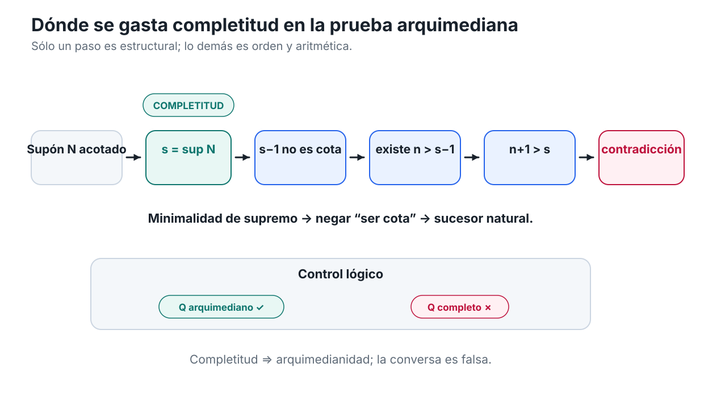
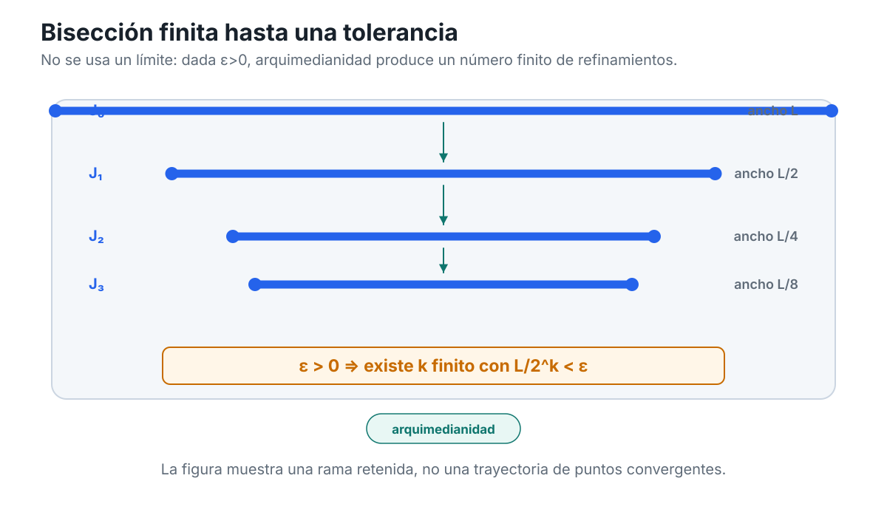

Capítulo 3 — Completitud: una recta sin huecos
Índice del libro · Ejercicios de este capítulo
El capítulo anterior terminó en un punto muy preciso. Aprendimos a definir cotas, máximos, mínimos, supremos e ínfimos; aprendimos también a distinguir una barrera cualquiera de la mejor barrera posible y una barrera alcanzada de otra que no pertenece al conjunto. Pero quedó una pregunta abierta que ninguna definición puede resolver por sí sola.
Si escribimos
\[ \sup A=\min U(A), \]
hemos dicho qué tendría que ser el supremo de \(A\) en caso de existir. No hemos demostrado que el conjunto de cotas superiores \(U(A)\) posea realmente un mínimo. Esa diferencia —entre describir un objeto y garantizar su existencia— es el punto de partida de este capítulo.
La recta real posee una propiedad adicional que permite cerrar ese hueco lógico. Esa propiedad recibe el nombre de completitud.
La palabra puede sugerir muchas cosas: que \(\mathbb R\) tiene “todos los números”, que no le faltan puntos o que la recta dibujada parece continua. Ninguna de esas intuiciones basta como definición matemática. En análisis necesitamos algo más preciso: una afirmación que podamos usar dentro de una demostración y cuyo uso podamos localizar exactamente.
La pregunta rectora será:
¿Qué significa, con precisión, que la recta real no tenga huecos relevantes para el análisis?
Y la responderemos siguiendo una idea que ya conocemos: las barreras.
C02 nos enseñó a trabajar con una familia de cotas. C03 añadirá una garantía de existencia. Más adelante veremos que esa misma garantía puede traducirse a otros lenguajes: separación, intervalos cerrados compatibles y refinamientos que conservan un punto. Por ahora no necesitamos sucesiones convergentes, compactidad ni criterios de Cauchy. Nuestro problema es anterior a todos ellos.
Conviene pensar en este capítulo como una investigación sobre dónde aparece un objeto que el orden por sí solo no obliga a tener.
3.1. El problema heredado: definir no basta
Volvamos al lenguaje de C02. Para un conjunto \(A\subseteq\mathbb R\), el conjunto de sus cotas superiores es
\[ U(A)=\{u\in\mathbb R:\forall a\in A,\ a\le u\}. \]
Si \(A\) no es vacío y está acotado superiormente, entonces sabemos al menos dos cosas:
- \(A\) contiene algún elemento;
- \(U(A)\) no es vacío.
Eso todavía no implica que \(U(A)\) tenga un mínimo.
Y precisamente ahí se encuentra la diferencia entre la teoría condicional del capítulo anterior y la nueva pregunta de existencia.
Tener cotas no es tener una mejor cota
Supongamos que \(A\) posee muchas cotas superiores. Podemos ordenarlas y preguntar cuáles están más cerca del conjunto. Podemos incluso escribir formalmente
\[ \sup A=\min U(A) \]
si ese mínimo existe.
La cláusula final no es un detalle editorial. Es una hipótesis lógica.
Pensemos en una situación abstracta. Sabemos que
\[ U(A)\ne\varnothing. \]
Quizá encontremos una cota \(u_1\). Luego otra más pequeña \(u_2<u_1\). Después otra \(u_3<u_2\). Este proceso puede sugerir que las cotas se acercan a alguna frontera, pero ninguna colección de ejemplos, por larga que sea, demuestra que exista una cota mínima.
La pregunta correcta no es
“¿podemos imaginar una barrera cada vez más ajustada?”
sino
“¿existe dentro del sistema numérico una barrera que sea menor que todas las demás cotas superiores?”
La figura C03-F01 hace visible esta diferencia entre el estado lógico de C02 —min U(A)?— y la garantía de existencia que introduce C03.
La figura no sustituye el argumento lógico; la idea esencial sigue siendo:
una definición selecciona una propiedad; una completitud adecuada garantiza existencia.
Un contraste decisivo: \(\mathbb Q\)
Para entender qué está en juego conviene comparar \(\mathbb R\) con un sistema muy parecido: los números racionales \(\mathbb Q\).
Los racionales están ordenados. Entre dos racionales distintos siempre hay otro racional. Podemos sumar, restar, multiplicar y dividir —salvo por cero— sin salir de \(\mathbb Q\). Desde muchos puntos de vista elementales, \(\mathbb Q\) parece una recta numérica perfectamente rica.
Sin embargo, esa riqueza no basta para resolver todas las preguntas de existencia formuladas mediante cotas.
Consideremos el conjunto
\[ S_2=\{q\in\mathbb Q:0\le q,\ q^2<2\}. \]
Este conjunto no es vacío, porque
\[ 1\in S_2. \]
También está acotado superiormente dentro de \(\mathbb Q\). Por ejemplo, \(2\) es una cota superior: si \(q\ge2\), entonces \(q^2\ge4>2\), de modo que ningún \(q\in S_2\) puede satisfacer \(q\ge2\).
Así que, trabajando sólo en \(\mathbb Q\), tenemos
\[ S_2\ne\varnothing \]
y
\[ U_{\mathbb Q}(S_2)\ne\varnothing. \]
Hasta aquí no hay ningún problema.
El problema aparece cuando preguntamos si el conjunto de cotas superiores racionales tiene un mínimo racional.
La respuesta es no:
\[ \min U_{\mathbb Q}(S_2) \quad\text{no existe en }\mathbb Q. \]
Equivalentemente, \(S_2\) no posee supremo racional.
Este hecho no debe representarse imaginando una recta racional con un agujero grande y visible. Los racionales son densos: por mucho que ampliemos una región de la recta, siempre podemos encontrar racionales entre racionales distintos. El defecto no es que falten puntos a una escala macroscópica.
El defecto es más sutil:
hay conjuntos racionales no vacíos y acotados superiormente cuya familia de cotas superiores racionales no tiene una menor cota superior racional.
La figura C03-F02 representa precisamente este fenómeno: no mediante un punto irracional ya identificado, sino mostrando que \(U_{\mathbb Q}(S_2)\) tiene cotas racionales mejorables y, sin embargo, ninguna de ellas es mínima.

La etiqueta «arquimediano» de la figura es una anticipación explícita de §3.4. No interviene en el diagnóstico de §3.1: aquí sólo usamos que la densidad de \(\mathbb Q\) no garantiza la existencia de una menor cota superior racional.
Por qué no diremos todavía “el hueco es \(\sqrt2\)”
Es tentador resumir el ejemplo anterior diciendo que a \(\mathbb Q\) “le falta \(\sqrt2\)”. Esa frase puede ser intuitivamente útil más adelante, pero aquí sería lógicamente prematura.
En este momento estamos usando el ejemplo precisamente para estudiar qué garantía de existencia distingue a \(\mathbb R\) de \(\mathbb Q\). Si apeláramos desde el inicio a un número real concreto cuya existencia todavía no hemos relacionado con esa garantía, estaríamos escondiendo el problema dentro de la explicación.
Por eso formulamos el diagnóstico sólo con objetos racionales:
- el conjunto \(S_2\subseteq\mathbb Q\);
- sus cotas superiores racionales;
- el hecho de que ninguna de esas cotas es la menor.
Eso basta para demostrar el defecto relevante.
Más adelante podremos interpretar dónde queda la frontera en \(\mathbb R\). Pero la incompletitud de \(\mathbb Q\) ya está visible antes de darle un nombre a ese punto.
Densidad y completitud no son lo mismo
El ejemplo permite separar dos ideas que suelen confundirse.
Decir que \(\mathbb Q\) es denso significa que, si \(p<q\) son racionales, existe otro racional \(r\) tal que
\[ p<r<q. \]
Esta propiedad afirma que siempre podemos insertar nuevos puntos entre dos puntos dados.
Pero nuestro problema con \(S_2\) no pregunta si podemos insertar otro racional entre dos racionales. Pregunta si una familia completa de restricciones de orden posee dentro de \(\mathbb Q\) una frontera extremal requerida.
Son preguntas distintas.
Podemos resumir la diferencia así:
\[ \text{densidad} \quad\Longrightarrow\quad \text{hay puntos intermedios}, \]
mientras que la completitud que buscamos deberá garantizar algo del tipo
\[ \text{restricciones de orden adecuadas} \quad\Longrightarrow\quad \text{existe la frontera requerida dentro del sistema}. \]
La primera afirmación puede ser verdadera y la segunda falsa. \(\mathbb Q\) será nuestro ejemplo de control durante todo el capítulo.
El problema ya está suficientemente aislado
Ya podemos formular con precisión qué falta.
En C02 aprendimos que, si un conjunto \(A\) tiene supremo, entonces ese número es la menor cota superior. En C03 queremos saber cuándo podemos pasar de las hipótesis
\[ A\ne\varnothing, \qquad U(A)\ne\varnothing \]
a la conclusión de que existe una frontera extremal dentro de \(\mathbb R\).
Todavía no la enunciaremos formalmente como principio; ésa será la tarea de §3.2. Lo importante en este punto es reconocer que la nueva afirmación no puede extraerse sólo de la definición de supremo.
El salto lógico será de la forma
\[ \text{definición de la mejor barrera} \quad\not\Rightarrow\quad \text{existencia de la mejor barrera}. \]
Necesitamos una propiedad adicional del sistema numérico.
Esa propiedad es la que llamaremos completitud de \(\mathbb R\) en sentido de orden.
Antes de seguir
Microcontrol 1
¿Qué información expresa la igualdad \(\sup A=\min U(A)\) y qué información no expresa por sí sola?
Ver solución del microcontrol 1
La igualdad
\[ \sup A=\min U(A) \]
expresa qué propiedad debe satisfacer el supremo cuando existe: debe ser una cota superior de \(A\) y, además, la menor de todas las cotas superiores. En otras palabras, identifica al supremo con el mínimo de la familia \(U(A)\).
Pero la igualdad, leída como definición condicional, no demuestra por sí sola que ese mínimo exista. Antes de poder escribir un número concreto \(s=\sup A\), todavía habría que justificar que
\[ U(A)\ne\varnothing \]
y que existe
\[ \min U(A). \]
Tampoco afirma que el supremo pertenezca a \(A\); por tanto, no convierte automáticamente al supremo en máximo.
La separación lógica es:
\[ \text{definir qué sería }\sup A \quad\not\Rightarrow\quad \text{garantizar que }\sup A\text{ exista}. \]
Uso de completitud: ninguno. Precisamente se está distinguiendo la definición del futuro principio de existencia.
Microcontrol 2
Si \(U(A)\ne\varnothing\), ¿por qué eso no obliga lógicamente a que \(U(A)\) tenga un mínimo?
Ver solución del microcontrol 2
De la sola afirmación
\[ U(A)\ne\varnothing \]
sólo sabemos que hay alguna cota superior. No se sigue que entre todas ellas haya una menor.
El punto lógico puede verse incluso en un ejemplo elemental: el conjunto
\[ (0,1) \]
es no vacío, pero no tiene mínimo. Dado cualquier \(x\in(0,1)\), el número \(x/2\) sigue perteneciendo a \((0,1)\) y satisface \(x/2<x\).
En el problema específico del capítulo ocurre el mismo tipo de separación con la familia de cotas racionales de \(S_2\): sabemos que
\[ U_{\mathbb Q}(S_2)\ne\varnothing, \]
pero esa familia no posee un mínimo racional.
Por tanto,
\[ U(A)\ne\varnothing \quad\not\Rightarrow\quad \exists\min U(A). \]
Uso de completitud: ninguno.
Microcontrol 3
Verifica que \(1\in S_2\) y que \(2\) es una cota superior racional de \(S_2\).
Ver solución del microcontrol 3
Recordemos
\[ S_2=\{q\in\mathbb Q:0\le q,\ q^2<2\}. \]
Para verificar que \(1\in S_2\) comprobamos las dos condiciones definitorias:
\[ 0\le1 \]
y
\[ 1^2=1<2. \]
Luego
\[ \boxed{1\in S_2}. \]
Ahora probemos que \(2\) es una cota superior racional. Sea \(q\in S_2\). Si ocurriera \(q\ge2\), como \(q\ge0\) tendríamos
\[ q^2\ge2^2=4>2, \]
lo que contradice la condición \(q^2<2\) que define a \(S_2\). Por tanto, todo \(q\in S_2\) satisface
\[ q<2, \]
y en particular \(q\le2\). Como \(2\in\mathbb Q\),
\[ \boxed{2\in U_{\mathbb Q}(S_2)}. \]
Así quedan verificadas simultáneamente la no vaciedad de \(S_2\) y la existencia de al menos una cota superior racional.
Uso de completitud: ninguno.
Microcontrol 4
¿Qué falla exactamente para \(S_2\) dentro de \(\mathbb Q\): la existencia de cotas superiores o la existencia de una menor cota superior racional?
Ver solución del microcontrol 4
Para \(S_2\) no falla la existencia de cotas superiores racionales. El microcontrol anterior ya exhibe una:
\[ 2\in U_{\mathbb Q}(S_2). \]
Por tanto,
\[ U_{\mathbb Q}(S_2)\ne\varnothing. \]
Lo que falla es la existencia de una menor cota superior racional:
\[ \boxed{\min U_{\mathbb Q}(S_2)\text{ no existe en }\mathbb Q.} \]
Equivalentemente, \(S_2\) no posee supremo dentro de \(\mathbb Q\).
Ésta es la distinción que interesa al capítulo: tener barreras superiores no implica que el sistema contenga una barrera extremal que sea la mejor de todas.
Uso de completitud: ninguno; estamos describiendo precisamente el defecto de existencia que una propiedad de completitud deberá reparar en \(\mathbb R\).
Microcontrol 5
¿Por qué la densidad de \(\mathbb Q\) no resuelve ese fallo?
Ver solución del microcontrol 5
La densidad de \(\mathbb Q\) afirma que, dados racionales \(p<q\), existe otro racional \(r\) tal que
\[ p<r<q. \]
Es una propiedad local: permite insertar un punto entre dos puntos racionales ya dados.
El fallo de \(S_2\) es de otra naturaleza. Allí preguntamos si toda la familia de cotas superiores racionales posee un elemento extremal \(s\) que sea simultáneamente cota superior y menor que cualquier otra cota superior.
Poder insertar nuevos racionales entre dos racionales no produce por sí solo semejante mínimo. De hecho, aun cuando podamos encontrar cotas cada vez más ajustadas, todavía puede ocurrir que ninguna de ellas sea la menor.
Por eso
\[ \text{densidad} \quad\not\Rightarrow\quad \text{existencia de una menor cota superior}. \]
La densidad permite refinar entre puntos existentes; no garantiza que el sistema contenga la frontera extremal exigida por una familia global de restricciones.
Uso de completitud: ninguno.
Microcontrol 6
¿Qué tendría que añadir una propiedad de completitud para convertir la teoría condicional de C02 en una teoría de existencia?
Ver solución del microcontrol 6
La propiedad adicional tendría que transformar las hipótesis elementales de existencia de elementos y de cotas en una garantía de existencia de la mejor cota dentro del propio sistema.
En el caso real, la forma que necesitamos anticipar es:
\[ A\subseteq\mathbb R, \qquad A\ne\varnothing, \qquad U(A)\ne\varnothing \]
implica que existe un número \(s\in\mathbb R\) tal que
\[ s=\min U(A). \]
Por la definición ya disponible, ese mismo número satisface
\[ s=\sup A. \]
Así, la propiedad buscada debe autorizar el salto
\[ \boxed{ A\ne\varnothing, \quad A\text{ acotado superiormente} \Longrightarrow \exists s\in\mathbb R:\ s=\sup A. } \]
En §3.1 esto es todavía la forma de la garantía que necesitamos, no un principio ya usado para demostrar otros resultados. §3.2 será la sección encargada de formularla como propiedad estructural de \(\mathbb R\).
Uso de completitud: anticipatorio. El microcontrol identifica qué garantía debe aportar; no la emplea todavía como resultado disponible.
La siguiente sección dará a esa propiedad una formulación precisa. Allí el principio del supremo dejará de aparecer como una pregunta pendiente y pasará a funcionar como la afirmación estructural que distingue, para nuestros fines, a la recta real de un sistema ordenado incompleto como \(\mathbb Q\).
Ejercicios de la sección 3.1
Ejercicio 1. Qué permiten concluir las hipótesis
Sea \(X\) un sistema ordenado y sea \(A\subseteq X\). Supón únicamente que
\[ A\ne\varnothing \qquad\text{y}\qquad U_X(A)\ne\varnothing, \]
donde
\[ U_X(A)=\{u\in X:\forall a\in A,\ a\le u\}. \]
Clasifica cada afirmación como forzada por las hipótesis, no forzada o condicional:
- \(A\) posee al menos una cota superior en \(X\).
- \(U_X(A)\) posee un mínimo.
- La expresión \(\sup_X A\) designa necesariamente un elemento existente de \(X\).
- Si existe \(s=\min U_X(A)\), entonces \(s=\sup_X A\).
- Si \(\sup_X A\) existe, entonces necesariamente \(\sup_X A\in A\).
- Si \(A\) es no vacío y está acotado superiormente, entonces \(A\) posee máximo.
Para cada afirmación que no esté forzada, indica qué información adicional faltaría o da un ejemplo que muestre el fallo. No uses el principio del supremo de §3.2.
Ver solución del ejercicio 1
Partimos únicamente de
\[ A\ne\varnothing \qquad\text{y}\qquad U_X(A)\ne\varnothing. \]
La primera afirmación está forzada. Decir que \(U_X(A)\ne\varnothing\) significa precisamente que existe algún \(u\in X\) tal que
\[ a\le u \qquad\text{para todo }a\in A. \]
Por tanto, \(A\) posee al menos una cota superior.
La segunda afirmación no está forzada. Que \(U_X(A)\) tenga elementos no implica que posea un elemento mínimo. El conjunto \(S_2\subseteq\mathbb Q\) estudiado en §3.1 proporciona exactamente ese diagnóstico: tiene cotas superiores racionales, pero la familia de esas cotas no tiene mínimo racional.
La tercera afirmación tampoco está forzada. Bajo la convención del libro, escribir \(\sup_X A\) como un objeto existente exige haber establecido que \(U_X(A)\) posee mínimo. Las hipótesis sólo garantizan que \(U_X(A)\) no es vacío.
La cuarta afirmación es condicional y correcta. Si existe
\[ s=\min U_X(A), \]
entonces \(s\) es una cota superior de \(A\) y satisface
\[ s\le u \qquad\text{para toda }u\in U_X(A). \]
Ésa es justamente la definición de menor cota superior. Por tanto,
\[ s=\sup_X A. \]
La quinta afirmación no está forzada. Por ejemplo, en \(\mathbb Q\) consideremos
\[ B=\{q\in\mathbb Q:0<q<1\}. \]
El número \(1\) es su supremo racional, pero
\[ 1\notin B. \]
Así que la existencia de supremo no implica que la barrera sea alcanzada.
La sexta afirmación tampoco está forzada. El mismo conjunto \(B\) es no vacío y está acotado superiormente, pero no tiene máximo: dado \(q\in B\),
\[ r=\frac{q+1}{2} \]
es racional y satisface
\[ q<r<1, \]
de modo que \(r\in B\) y \(q\) no puede ser máximo.
La separación lógica es, por tanto:
\[ A\ne\varnothing,\quad U_X(A)\ne\varnothing \]
garantiza la existencia de elementos de \(A\) y de cotas superiores, pero no garantiza por sí sola ni
\[ \min U_X(A), \]
ni un supremo existente, ni un máximo.
Uso de completitud: ninguno. El ejercicio distingue precisamente lo que puede concluirse antes de disponer de una garantía de completitud.
Ejercicio 2. Densidad no fabrica una frontera
Un estudiante razona así sobre
\[ S_2=\{q\in\mathbb Q:0\le q,\ q^2<2\}: \]
Como \(\mathbb Q\) es denso y \(S_2\) tiene cotas superiores racionales, podemos tomar cotas cada vez más ajustadas. Entre racionales siempre hay racionales, así que al final debe aparecer una cota racional que sea la menor. Por tanto, \(S_2\) tiene supremo en \(\mathbb Q\).
Diagnostica el argumento.
- Escribe con cuantificadores qué afirma realmente la densidad de \(\mathbb Q\).
- Identifica el salto lógico que pretende pasar de «hay racionales intermedios» a «existe una menor cota superior racional».
- Explica por qué disponer de cotas superiores cada vez menores no implica que la familia de cotas superiores tenga mínimo.
- Reescribe la conclusión correcta que sí puede obtenerse de la densidad, sin atribuirle una propiedad de completitud.
No invoques todavía ningún principio de completitud de \(\mathbb R\).
Ver solución del ejercicio 2
La densidad de \(\mathbb Q\) afirma
\[ \forall p,q\in\mathbb Q, \quad p<q \Longrightarrow \exists r\in\mathbb Q: p<r<q. \]
Es una afirmación sobre dos racionales ya dados: si existe un intervalo no degenerado entre ellos, podemos insertar otro racional.
El argumento del estudiante cambia de problema sin justificarlo. De
\[ p<q \]
y la densidad podemos obtener un racional intermedio. Pero la existencia de una menor cota superior exigiría un racional \(s\) que satisficiera simultáneamente dos condiciones globales:
- todo elemento de \(S_2\) debe quedar por debajo de \(s\);
- toda cota superior racional debe quedar por encima de \(s\).
La densidad no produce un número con esas dos propiedades.
Tampoco basta imaginar una cadena de cotas superiores
\[ u_1>u_2>u_3>\cdots. \]
Incluso si cada \(u_n\) puede mejorarse, de ello no se sigue que la familia completa posea un mínimo. De hecho, la posibilidad de mejorar toda cota candidata es compatible con que no exista una menor cota superior.
El segundo salto ilegítimo es la frase «al final debe aparecer». No se ha definido ningún proceso con una etapa final, ni se ha demostrado que el supuesto refinamiento produzca un elemento perteneciente a \(\mathbb Q\). La expresión introduce precisamente la existencia que debía probarse.
La conclusión correcta derivada de la densidad es sólo local: entre dos racionales distintos hay otro racional. En particular, podemos refinar posiciones entre racionales ya conocidos. No podemos concluir por ello que todo subconjunto racional no vacío y acotado superiormente posea una frontera extremal racional.
Uso de completitud: ninguno. El objetivo es diagnosticar por qué densidad y completitud responden preguntas lógicamente distintas.
Ejercicio 3. Probar el fallo racional sin nombrar la frontera
Demuestra directamente que
\[ S_2=\{q\in\mathbb Q:0\le q,\ q^2<2\} \]
no posee supremo en \(\mathbb Q\).
Supón, buscando una contradicción, que existe
\[ s=\sup_{\mathbb Q}S_2. \]
Como \(1\in S_2\), sabemos que \(s\ge1\). Define
\[ T(s)=\frac{2(s+1)}{s+2}. \]
- Demuestra las identidades \[ T(s)-s=\frac{2-s^2}{s+2} \] y \[ 2-T(s)^2=\frac{2(2-s^2)}{(s+2)^2}. \]
- Si \(s^2<2\), demuestra que \(T(s)\in S_2\) y \(T(s)>s\), contradiciendo que \(s\) sea cota superior.
- Si \(s^2>2\), demuestra que \(0<T(s)<s\), que \(T(s)^2>2\) y que \(T(s)\) sigue siendo una cota superior racional de \(S_2\), contradiciendo la minimalidad de \(s\).
- Excluye el caso \(s^2=2\) mediante un argumento de divisibilidad para racionales escritos en términos irreducibles.
- Concluye que \(U_{\mathbb Q}(S_2)\) es no vacío pero no posee mínimo.
La demostración debe permanecer enteramente dentro de \(\mathbb Q\) y no debe identificar la frontera ausente con un número real ya nombrado.
Ver solución del ejercicio 3
Estrategia. Si existiera un supremo racional \(s\), cualquier modificación racional de \(s\) que produjera o bien un elemento de \(S_2\) mayor que \(s\), o bien una cota superior menor que \(s\), destruiría una de las dos propiedades que definen al supremo. La transformación
\[ T(s)=\frac{2(s+1)}{s+2} \]
hace exactamente eso según el signo de \(2-s^2\).
Supongamos
\[ s=\sup_{\mathbb Q}S_2. \]
Como \(1\in S_2\), toda cota superior de \(S_2\) satisface \(s\ge1\). En particular,
\[ s+2>0. \]
Primero calculamos
\[ T(s)-s = \frac{2(s+1)-s(s+2)}{s+2} = \frac{2-s^2}{s+2}. \]
Además,
\[ T(s)^2 = \frac{4(s+1)^2}{(s+2)^2}, \]
de modo que
\[ 2-T(s)^2 = \frac{2(s+2)^2-4(s+1)^2}{(s+2)^2}. \]
El numerador es
\[ 2(s^2+4s+4)-4(s^2+2s+1) = 4-2s^2 = 2(2-s^2). \]
Por tanto,
\[ \boxed{ 2-T(s)^2 = \frac{2(2-s^2)}{(s+2)^2}. } \]
Caso 1: \(s^2<2\)
Entonces
\[ 2-s^2>0. \]
Como \(s+2>0\),
\[ T(s)-s>0, \]
por lo que
\[ T(s)>s. \]
La segunda identidad da
\[ 2-T(s)^2>0, \]
así que
\[ T(s)^2<2. \]
Además \(T(s)>s\ge1\), por lo que \(T(s)\ge0\). Como \(T(s)\) es racional,
\[ T(s)\in S_2. \]
Pero \(T(s)>s\), contradiciendo que \(s\) sea cota superior de \(S_2\).
Caso 2: \(s^2>2\)
Ahora
\[ 2-s^2<0. \]
La primera identidad da
\[ T(s)<s. \]
Como \(s\ge1\),
\[ T(s)=\frac{2(s+1)}{s+2}>0. \]
La segunda identidad produce
\[ 2-T(s)^2<0, \]
y por tanto
\[ T(s)^2>2. \]
Mostremos que \(T(s)\) sigue siendo cota superior de \(S_2\). Sea \(q\in S_2\). Si ocurriera \(q\ge T(s)\), como ambos números son no negativos tendríamos
\[ q^2\ge T(s)^2>2, \]
contradiciendo \(q^2<2\). Luego
\[ q<T(s) \qquad \text{para todo }q\in S_2. \]
Así, \(T(s)\) es una cota superior racional de \(S_2\) y satisface
\[ T(s)<s, \]
lo cual contradice que \(s\) sea la menor cota superior.
Caso 3: \(s^2=2\)
Como \(s\in\mathbb Q\) y \(s>0\), escribamos
\[ s=\frac{m}{n} \]
con \(m,n\in\mathbb N_{>0}\) coprimos. La igualdad \(s^2=2\) implica
\[ m^2=2n^2. \]
Entonces \(m^2\) es par, y por tanto \(m\) es par. Escribamos \(m=2k\). Sustituyendo,
\[ 4k^2=2n^2, \]
de donde
\[ n^2=2k^2. \]
Así, \(n^2\) también es par y, por tanto, \(n\) es par. Esto contradice que \(m\) y \(n\) fueran coprimos.
Los tres casos son imposibles. Por tanto no existe ningún racional \(s\) tal que
\[ s=\sup_{\mathbb Q}S_2. \]
Como \(2\) es una cota superior racional, sabemos que
\[ U_{\mathbb Q}(S_2)\ne\varnothing. \]
Pero acabamos de demostrar que ese conjunto de cotas superiores no posee mínimo racional:
\[ \boxed{ U_{\mathbb Q}(S_2)\ne\varnothing, \qquad \min U_{\mathbb Q}(S_2)\text{ no existe en }\mathbb Q. } \]
Uso de completitud: ninguno. Toda la prueba ocurre dentro de \(\mathbb Q\) y exhibe precisamente el fracaso de la garantía de existencia que C03 estudiará después.
Ejercicio 4. Cambiar el umbral cambia la existencia, no la densidad
Compara los tres conjuntos racionales
\[ S_2=\{q\in\mathbb Q:0\le q,\ q^2<2\}, \]
\[ S_4^{<}=\{q\in\mathbb Q:0\le q,\ q^2<4\}, \]
y
\[ S_4^{\le}=\{q\in\mathbb Q:0\le q,\ q^2\le4\}. \]
- Verifica que los tres conjuntos son no vacíos y están acotados superiormente en \(\mathbb Q\).
- Usa el ejercicio anterior para recordar por qué \(S_2\) no posee supremo racional.
- Demuestra directamente, desde la definición, que \[ \sup_{\mathbb Q}S_4^{<}=2, \] aunque \(S_4^{<}\) no tenga máximo.
- Demuestra que \[ \max S_4^{\le}=\sup_{\mathbb Q}S_4^{\le}=2. \]
- Determina \(U_{\mathbb Q}(S_4^{<})\) y \(U_{\mathbb Q}(S_4^{\le})\).
- Explica por qué estos tres ejemplos impiden atribuir a la densidad de \(\mathbb Q\) la existencia o inexistencia del supremo: la densidad es la misma en los tres casos, mientras que el comportamiento de la barrera extremal cambia.
No uses resultados de §3.2 o posteriores.
Ver solución del ejercicio 4
Estrategia. Los tres conjuntos viven en el mismo sistema ordenado y denso, \(\mathbb Q\). Por tanto, cualquier diferencia en la existencia o pertenencia de la barrera no puede explicarse por un cambio de densidad. Debemos examinar la familia de cotas y si la barrera relevante está disponible como racional.
Los tres conjuntos son no vacíos porque
\[ 0 \]
pertenece a todos ellos. También están acotados superiormente: \(2\) es cota superior de \(S_2\), y también lo es de \(S_4^{<}\) y \(S_4^{\le}\).
Para \(S_2\), el ejercicio anterior demostró que
\[ \sup_{\mathbb Q}S_2 \]
no existe.
Estudiemos ahora
\[ S_4^{<}=\{q\in\mathbb Q:0\le q,\ q^2<4\}. \]
Primero, \(2\) es cota superior. Si \(q\in S_4^{<}\) y \(q\ge2\), entonces
\[ q^2\ge4, \]
contradicción. Por tanto,
\[ q<2 \qquad \text{para todo }q\in S_4^{<}. \]
Falta probar que ninguna cota superior puede ser menor que \(2\). Sea \(u\in\mathbb Q\) con \(u<2\).
Si \(u<0\), entonces \(0\in S_4^{<}\) y
\[ 0>u, \]
de modo que \(u\) no es cota superior.
Si \(0\le u<2\), tomemos
\[ q=\frac{u+2}{2}. \]
Entonces \(q\in\mathbb Q\) y
\[ u<q<2. \]
Como \(q\ge0\) y \(q<2\),
\[ q^2<4, \]
por lo que \(q\in S_4^{<}\). De nuevo \(u\) no es cota superior.
Así, \(2\) es la menor cota superior racional:
\[ \boxed{\sup_{\mathbb Q}S_4^{<}=2.} \]
Sin embargo,
\[ 2\notin S_4^{<} \]
porque \(2^2=4\) y la desigualdad definitoria es estricta. Más aún, ningún elemento de \(S_4^{<}\) es máximo. Si \(q\in S_4^{<}\), entonces \(q<2\) y
\[ r=\frac{q+2}{2} \]
satisface
\[ q<r<2. \]
Por tanto \(r\in S_4^{<}\) y es mayor que \(q\).
Consideremos ahora
\[ S_4^{\le}=\{q\in\mathbb Q:0\le q,\ q^2\le4\}. \]
El número \(2\) pertenece al conjunto y todo elemento \(q\) satisface \(q\le2\). Luego
\[ \boxed{ \max S_4^{\le}=2. } \]
Todo máximo es, en particular, la menor cota superior, así que
\[ \boxed{ \sup_{\mathbb Q}S_4^{\le}=2. } \]
En ambos conjuntos con umbral \(4\) las cotas superiores son exactamente
\[ \boxed{ U_{\mathbb Q}(S_4^{<}) = U_{\mathbb Q}(S_4^{\le}) = \{u\in\mathbb Q:u\ge2\}. } \]
En efecto, todo \(u\ge2\) domina a ambos conjuntos, mientras que acabamos de demostrar que cualquier racional \(u<2\) deja algún elemento del conjunto por encima de él.
La comparación final es:
\[ \begin{array}{c|c|c} \text{conjunto} & \text{supremo en }\mathbb Q & \text{máximo}\\ \hline S_2 & \text{no existe} & \text{no existe}\\ S_4^{<} & 2 & \text{no existe}\\ S_4^{\le} & 2 & 2 \end{array} \]
Los tres conjuntos viven en el mismo sistema denso \(\mathbb Q\). Por tanto, la densidad no decide ninguno de los dos cambios observados. Entre \(S_2\) y \(S_4^{<}\) cambia la disponibilidad racional de una barrera extremal; entre \(S_4^{<}\) y \(S_4^{\le}\) cambia si esa misma barrera pertenece al conjunto.
Uso de completitud: ninguno. Todas las conclusiones se obtienen desde el orden racional, las definiciones de cota, supremo y máximo, y el resultado racional del ejercicio anterior.
3.2. El principio del supremo
La sección anterior aisló el problema. Ahora podemos formular la propiedad que lo resuelve.
Partimos de un conjunto
\[ A\subseteq\mathbb R \]
que satisface dos hipótesis:
- \(A\ne\varnothing\);
- \(A\) está acotado superiormente.
La segunda condición significa, como en C02, que
\[ U(A)\ne\varnothing. \]
Hasta aquí sólo sabemos que existen cotas superiores. Lo que todavía no se deduce de las definiciones es que entre todas ellas exista una menor.
La propiedad estructural de \(\mathbb R\) que añadiremos es precisamente ésa.
El principio
Adoptaremos como principio del supremo la afirmación siguiente:
Principio del supremo. Si \(A\subseteq\mathbb R\) es no vacío y está acotado superiormente, entonces existe un número real \(s\) tal que
\[ s=\sup A. \]
Es importante leer el enunciado sin comprimirlo demasiado.
Las hipótesis son
\[ A\subseteq\mathbb R, \qquad A\ne\varnothing, \qquad U(A)\ne\varnothing. \]
La conclusión es una afirmación de existencia:
\[ \exists s\in\mathbb R \qquad s=\sup A. \]
Y, porque en C02 ya definimos qué significa ser supremo, esta conclusión puede desplegarse como
\[ \exists s\in\mathbb R \quad\text{tal que}\quad \begin{cases} \forall a\in A,\ a\le s,\\[1mm] \forall u\in U(A),\ s\le u. \end{cases} \]
La primera línea dice que \(s\) es una cota superior. La segunda dice que ninguna otra cota superior queda por debajo de \(s\).
Por tanto, el principio no introduce una nueva definición de supremo. La definición ya existía. Lo nuevo es la garantía:
\[ \boxed{ A\ne\varnothing \ \text{y}\ A\text{ acotado superiormente} \quad\Longrightarrow\quad \sup A\text{ existe en }\mathbb R. } \]
Éste es el primer lugar del libro donde la palabra completitud se convierte en una regla matemática operativa.
Definición y existencia cumplen funciones distintas
Conviene mantener separadas dos afirmaciones que, escritas deprisa, pueden parecer una sola.
La definición de C02 dice:
si \(s\) es el supremo de \(A\), entonces \(s\) es la menor cota superior de \(A\).
El principio de C03 dice:
si \(A\) es no vacío y está acotado superiormente, entonces existe ese \(s\) dentro de \(\mathbb R\).
La diferencia lógica es
\[ \text{caracterizar} \qquad\neq\qquad \text{garantizar existencia}. \]
Una definición puede decirnos exactamente qué propiedades debe satisfacer un objeto sin obligar a que el objeto exista.
Por ejemplo, podemos describir el “mínimo de \(U(A)\)” mediante las condiciones que tendría que cumplir. Pero de esas condiciones no se sigue que \(U(A)\) posea efectivamente un mínimo.
El principio del supremo añade justo el paso que faltaba:
\[ U(A)\ne\varnothing \quad\text{y}\quad A\ne\varnothing \quad\Longrightarrow_{\text{completitud}}\quad \min U(A)\text{ existe}. \]
Como en C02 establecimos que
\[ \sup A=\min U(A) \]
cuando ese mínimo existe, la formulación mediante \(U(A)\) y la formulación mediante \(\sup A\) expresan aquí la misma garantía.
Por qué lo tratamos como principio estructural
Bajo la política adoptada para este libro, no intentaremos demostrar el principio del supremo a partir de los resultados de C01 y C02.
Lo tomaremos como una propiedad estructural de la recta real.
La razón no es que falte ingenio para hallar una demostración. La razón es lógica: las propiedades de orden y álgebra usadas hasta este punto no bastan, por sí solas, para producir la garantía general de existencia.
El contraste con \(\mathbb Q\) ya lo mostró.
Dentro de \(\mathbb Q\) podemos hablar de orden, cotas, densidad, suma y producto. Podemos definir también qué significaría que un racional fuera la menor cota superior de un conjunto racional. Sin embargo, para el conjunto
\[ S_2=\{q\in\mathbb Q:0\le q,\ q^2<2\}, \]
vimos que existen cotas superiores racionales pero no existe una menor cota superior racional.
Así que una teoría de orden puede contener la definición de supremo y, aun así, no satisfacer la propiedad del supremo.
En este capítulo, llamar a \(\mathbb R\) completo en sentido de orden significará que aceptamos esta garantía de existencia para todos los subconjuntos no vacíos y acotados superiormente de \(\mathbb R\).
No estamos construyendo aquí los números reales ni probando desde primeros principios que una construcción particular satisface completitud. Nuestro punto de partida es \(\mathbb R\) como sistema numérico y el principio del supremo como su propiedad estructural fundamental para el análisis.
Qué nos entrega el principio y qué no
El principio es fuerte, pero conviene no atribuirle más de lo que realmente afirma.
Si \(A\) es no vacío y está acotado superiormente, obtenemos un número
\[ s=\sup A. \]
Eso garantiza:
- que \(s\in\mathbb R\);
- que \(s\) es cota superior de \(A\);
- que toda cota superior \(u\) de \(A\) satisface \(s\le u\);
- que el supremo es único, por el resultado de C02.
Pero el principio no afirma, en general, que
\[ s\in A. \]
Por tanto, no garantiza que \(A\) tenga máximo.
Tampoco entrega una fórmula explícita para calcular \(s\).
Y no dice que todo subconjunto de \(\mathbb R\) tenga supremo. Las hipótesis importan.
Si
\[ A=\mathbb R, \]
entonces \(A\) no está acotado superiormente en \(\mathbb R\), así que el principio no se aplica.
Si
\[ A=\varnothing, \]
también queda fuera del enunciado.
La forma correcta de usar el principio exige verificar primero sus hipótesis.
Primer uso: el conjunto racional visto dentro de \(\mathbb R\)
Volvamos a
\[ S_2=\{q\in\mathbb Q:0\le q,\ q^2<2\}. \]
En §3.1 lo estudiamos como subconjunto de \(\mathbb Q\) y vimos que no tiene supremo racional.
Ahora observemos que también podemos considerarlo simplemente como subconjunto de \(\mathbb R\):
\[ S_2\subseteq\mathbb R. \]
Sabemos además que
\[ S_2\ne\varnothing \]
y que \(2\) es una cota superior. Luego \(S_2\) está acotado superiormente en \(\mathbb R\).
Por el principio del supremo existe un número real \(s\) tal que
\[ s=\sup_{\mathbb R} S_2. \]
Ésta es una diferencia estructural concreta entre los dos sistemas:
\[ \boxed{ \sup_{\mathbb Q}S_2\text{ no existe en }\mathbb Q, \qquad \sup_{\mathbb R}S_2\text{ sí existe en }\mathbb R. } \]
Obsérvese lo que hemos ganado.
No hemos calculado \(s\).
No hemos identificado todavía \(s\) con ningún número concreto.
No hemos usado sucesiones.
No hemos usado límites.
La completitud nos ha proporcionado únicamente —y exactamente— la existencia de la frontera requerida dentro de \(\mathbb R\).
Eso basta para el objetivo de esta sección.
La caracterización por \(\varepsilon\) cambia de estatus
En C02 demostramos que, si \(s=\sup A\) existe y \(A\ne\varnothing\), entonces
\[ \forall\varepsilon>0\;\exists a\in A \quad\text{tal que}\quad s-\varepsilon<a\le s. \]
Allí la afirmación era condicional: primero suponíamos que el supremo existía y después deducíamos que ningún margen positivo podía separar completamente al conjunto de su barrera superior.
Ahora, si \(A\) es no vacío y está acotado superiormente, el principio del supremo nos garantiza que existe \(s=\sup A\). Por tanto podemos encadenar ambos resultados:
\[ \begin{aligned} A\ne\varnothing,\ A\text{ acotado superiormente} &\Longrightarrow_{\text{completitud}} \exists s=\sup A\\ &\Longrightarrow \forall\varepsilon>0\;\exists a\in A: s-\varepsilon<a\le s. \end{aligned} \]
Es importante identificar qué parte de esta cadena usa completitud.
La existencia de \(s\) sí la usa.
La conclusión con \(\varepsilon\), una vez que \(s\) ya existe, procede de la caracterización demostrada en C02 y no necesita una segunda aplicación de completitud.
Ésta será una regla de lectura importante durante todo el capítulo: una prueba puede contener muchos pasos, pero la completitud suele consumirse en un punto muy localizado.
Convención de trazabilidad: señalar dónde se usa completitud
A partir de ahora, cuando una demostración dependa del principio del supremo, haremos explícito el paso exacto.
El patrón será éste:
- construir un conjunto auxiliar \(B\);
- verificar que \(B\ne\varnothing\);
- verificar que \(B\) está acotado superiormente;
- escribir:
Paso de completitud. Por el principio del supremo, existe
\[ s=\sup B. \]
- continuar el argumento usando las propiedades de \(s\).
La etiqueta “Paso de completitud” no añade una nueva noción matemática. Es una convención pedagógica para distinguir la fuente de existencia de las manipulaciones posteriores de orden, desigualdades o álgebra.
Esto nos permitirá contestar una pregunta que reaparecerá muchas veces:
¿qué paso del argumento dejaría de estar justificado si trabajáramos en un sistema incompleto?
En el ejemplo de \(S_2\), todas las verificaciones previas siguen siendo válidas en \(\mathbb Q\):
- el conjunto no es vacío;
- hay cotas superiores racionales;
- podemos comparar cotas.
Lo que falla dentro de \(\mathbb Q\) es precisamente el paso
\[ \text{“por completitud, existe }s=\sup S_2\text{”.} \]
Así se localiza el hueco lógico.
La figura de transición, releída
La figura C03-F01, introducida en §3.1 como puente entre C02 y C03, puede releerse ahora a la luz del principio del supremo.
Ahora podemos leer sus dos lados con precisión.
En el lado de C02 tenemos
\[ A, \qquad U(A), \qquad \min U(A)\ ? \]
La pregunta es legítima, pero sigue abierta.
En el lado de C03 añadimos las hipótesis
\[ A\ne\varnothing, \qquad U(A)\ne\varnothing, \]
y el principio del supremo autoriza el paso
\[ \exists s\in\mathbb R: \qquad s=\min U(A)=\sup A. \]
La figura no debe sugerir que \(s\) pertenece a \(A\). Ese dato sigue sin decidirse. La completitud garantiza una frontera extremal, no que la frontera sea alcanzada.
Por eso máximo y supremo siguen siendo conceptos distintos.
Una prueba mínima de lectura
Supongamos que \(A\subseteq\mathbb R\) es no vacío y está acotado superiormente.
Queremos justificar la afirmación
\[ \forall r<\sup A\;\exists a\in A \quad\text{tal que}\quad r<a. \]
Podemos escribir el argumento sin omitir el punto estructural.
Paso 1. Existencia. Como \(A\) es no vacío y está acotado superiormente, por el principio del supremo existe
\[ s=\sup A. \]
Éste es el único paso que usa completitud.
Paso 2. Elegir una cota candidata menor. Sea \(r<s\).
Paso 3. Usar minimalidad. Como \(r<s\) y \(s\) es la menor cota superior, \(r\) no puede ser cota superior de \(A\).
Paso 4. Negar la condición de cota superior. Por tanto existe \(a\in A\) tal que
\[ r<a. \]
La conclusión queda demostrada.
Obsérvese la anatomía de la prueba. El principio del supremo no demuestra directamente que exista \(a>r\). Primero entrega \(s\). Después usamos la definición de supremo y la negación de “ser cota superior”.
Separar esos pasos evita atribuir a la completitud consecuencias que en realidad proceden del orden y de las definiciones ya establecidas.
Una propiedad de existencia, no una técnica de cálculo
La forma del principio puede inducir una expectativa equivocada.
Podría parecer que, una vez garantizado \(\sup A\), el análisis consiste en “encontrarlo”. Pero el papel fundacional de la completitud es anterior al cálculo explícito.
Muchas demostraciones futuras usarán un supremo sin disponer inicialmente de una fórmula cerrada para él. Lo esencial será saber que el objeto existe y que satisface las propiedades que lo caracterizan.
Éste es un patrón general del análisis:
\[ \text{hipótesis estructurales} \quad\Longrightarrow\quad \text{existencia de un objeto} \quad\Longrightarrow\quad \text{explotación de sus propiedades}. \]
La completitud interviene en el primer salto.
El resto de la demostración puede ser orden, álgebra, estimaciones o argumentos locales.
Antes de seguir
Microcontrol 7
Separa, en el principio del supremo, las tres hipótesis escritas sobre \(A\) de la conclusión de existencia.
Ver solución del microcontrol 7
Las tres hipótesis son:
\[ A\subseteq\mathbb R, \]
\[ A\ne\varnothing, \]
y
\[ A\text{ está acotado superiormente}, \]
lo que equivale a
\[ U(A)\ne\varnothing. \]
La conclusión no es otra hipótesis sobre \(A\), sino una afirmación de existencia:
\[ \boxed{\exists s\in\mathbb R:\ s=\sup A.} \]
Desplegada mediante la definición de supremo, significa que existe \(s\in\mathbb R\) tal que
\[ a\le s \qquad\text{para todo }a\in A, \]
y que, para toda cota superior \(u\in U(A)\),
\[ s\le u. \]
Por tanto, el principio transforma las tres condiciones de entrada en la existencia de una menor cota superior real.
Uso de completitud: directo, exactamente en el paso que afirma que tal \(s\) existe.
Microcontrol 8
¿Por qué la definición \(s=\min U(A)\) no basta para demostrar que \(s\) existe?
Ver solución del microcontrol 8
La expresión
\[ s=\min U(A) \]
indica qué tendría que cumplir \(s\) si el mínimo de \(U(A)\) existiera. En particular, exige que
\[ s\in U(A) \]
y que
\[ s\le u \qquad\text{para todo }u\in U(A). \]
Pero una definición no fabrica automáticamente un objeto que satisfaga esas condiciones.
Incluso si sabemos que
\[ U(A)\ne\varnothing, \]
puede ocurrir que ese conjunto no tenga mínimo. Ése es precisamente el tipo de fallo diagnosticado en §3.1 para las cotas superiores racionales de \(S_2\).
Así,
\[ \text{describir el mínimo de }U(A) \quad\not\Rightarrow\quad \text{probar que ese mínimo existe}. \]
La existencia requiere una propiedad estructural adicional; en \(\mathbb R\), esa propiedad es el principio del supremo.
Uso de completitud: la explicación identifica por qué hace falta, pero no la usa para derivar nada más.
Microcontrol 9
Si \(A\) es no vacío y está acotado superiormente, ¿qué garantiza la completitud sobre \(U(A)\)?
Ver solución del microcontrol 9
Como \(A\) es no vacío y está acotado superiormente, el principio del supremo garantiza que existe
\[ s=\sup A\in\mathbb R. \]
Por la definición ya establecida en C02,
\[ s=\min U(A). \]
Por tanto, la completitud no se limita a afirmar que \(U(A)\) es no vacío —eso ya venía de la hipótesis de acotación superior—, sino que garantiza que la familia de cotas superiores posee una menor cota superior:
\[ \boxed{\exists\min U(A).} \]
Más precisamente,
\[ \boxed{\min U(A)=\sup A.} \]
Uso de completitud: directo, al pasar de \(A\ne\varnothing\) y \(U(A)\ne\varnothing\) a la existencia de \(\min U(A)\).
Microcontrol 10
Explica por qué el principio del supremo no implica que \(\sup A\in A\).
Ver solución del microcontrol 10
El principio del supremo garantiza que, bajo las hipótesis adecuadas, existe un número real
\[ s=\sup A \]
que es la menor cota superior de \(A\).
Pero la definición de supremo no contiene la condición
\[ s\in A. \]
Un ejemplo es
\[ A=(0,1). \]
El conjunto es no vacío y está acotado superiormente. Su supremo es
\[ \sup A=1, \]
pero
\[ 1\notin A. \]
Por tanto, completitud garantiza la existencia de la frontera extremal, no que esa frontera sea alcanzada por el conjunto.
La condición adicional
\[ \sup A\in A \]
es justamente la que permite identificar al supremo con un máximo.
Uso de completitud: sólo para garantizar que el supremo existe; la cuestión de pertenencia se decide por la estructura concreta de \(A\).
Microcontrol 11
Para \(S_2\subseteq\mathbb Q\), identifica el paso que falla en \(\mathbb Q\) pero queda autorizado cuando consideramos \(S_2\subseteq\mathbb R\).
Ver solución del microcontrol 11
En ambos universos podemos verificar las mismas condiciones elementales:
\[ S_2\ne\varnothing \]
y existen cotas superiores; por ejemplo, \(2\) es una cota superior racional y, por tanto, también real.
Dentro de \(\mathbb Q\), el paso que no está autorizado es
\[ \text{“como }S_2\ne\varnothing\text{ y está acotado superiormente, existe }\sup_{\mathbb Q}S_2\text{”.} \]
De hecho, §3.1 estableció que esa menor cota superior racional no existe.
En cambio, al considerar el mismo conjunto como subconjunto de \(\mathbb R\),
\[ S_2\subseteq\mathbb R, \]
el principio del supremo sí autoriza
\[ \boxed{\exists s\in\mathbb R:\ s=\sup_{\mathbb R}S_2.} \]
La diferencia no está en la no vaciedad, la acotación o la densidad, sino en la garantía estructural de existencia disponible en \(\mathbb R\).
Uso de completitud: exactamente en la existencia de \(\sup_{\mathbb R}S_2\); no se identifica ese real con ningún número concreto.
Microcontrol 12
En la cadena \[ A\ne\varnothing,\ A\text{ acotado superiormente} \Longrightarrow s=\sup A \Longrightarrow \forall\varepsilon>0\;\exists a\in A: s-\varepsilon<a\le s, \] ¿qué flecha usa completitud y qué flecha usa resultados de C02?
Ver solución del microcontrol 12
En la cadena \[ A\ne\varnothing,\ A\text{ acotado superiormente} \Longrightarrow s=\sup A \Longrightarrow \forall\varepsilon>0\;\exists a\in A: s-\varepsilon<a\le s, \] ¿qué flecha usa completitud y qué flecha usa resultados de C02?
La primera flecha,
\[ A\ne\varnothing,\ A\text{ acotado superiormente} \Longrightarrow \exists s=\sup A, \]
es el Paso de completitud. Las hipótesis sólo dicen que \(A\) contiene elementos y posee cotas superiores; el principio del supremo garantiza que existe la menor de esas cotas.
La segunda flecha,
\[ s=\sup A \Longrightarrow \forall\varepsilon>0\;\exists a\in A: s-\varepsilon<a\le s, \]
no requiere una segunda aplicación de completitud. Es la caracterización por \(\varepsilon\) del supremo demostrada en C02, aplicada a un supremo cuya existencia ya está establecida.
La cadena de dependencias es, por tanto,
\[ \boxed{ \text{hipótesis} \Longrightarrow_{\text{completitud}} \text{supremo existente} \Longrightarrow_{\text{C02}} \text{aproximación }\varepsilon. } \]
Uso de completitud: sólo en la primera flecha.
Microcontrol 13
¿Por qué sería incorrecto aplicar el principio del supremo a \(A=\mathbb R\) sin más?
Ver solución del microcontrol 13
Porque una de las hipótesis del principio falla.
El conjunto
\[ A=\mathbb R \]
es ciertamente no vacío, pero no está acotado superiormente en \(\mathbb R\).
En efecto, dado cualquier candidato \(u\in\mathbb R\), el número
\[ u+1\in\mathbb R \]
y satisface
\[ u+1>u. \]
Por tanto, ningún real domina a todos los reales y
\[ U(\mathbb R)=\varnothing. \]
Como falta la hipótesis de acotación superior, el principio del supremo no autoriza ninguna conclusión de existencia para \(\sup\mathbb R\) como número real.
Uso de completitud: ninguno, porque el principio ni siquiera es aplicable; primero deben verificarse sus hipótesis.
Microcontrol 14
En la prueba “si \(r<\sup A\), entonces existe \(a\in A\) con \(r<a\)”, localiza exactamente el único paso que depende de completitud.
Ver solución del microcontrol 14
Supongamos que \(A\) es no vacío y está acotado superiormente.
El único paso que depende de completitud es el inicial:
Paso de completitud. Por el principio del supremo existe
\[ s=\sup A. \]
Una vez disponible \(s\), tomamos un real \(r<s\).
Como \(s\) es la menor cota superior, \(r\) no puede ser una cota superior de \(A\): si lo fuera, la minimalidad de \(s\) obligaría a
\[ s\le r, \]
contradiciendo \(r<s\).
Negar que \(r\) sea cota superior significa
\[ \exists a\in A:\ a>r. \]
Por tanto,
\[ \boxed{r<\sup A\Longrightarrow\exists a\in A:\ r<a.} \]
La anatomía lógica es:
\[ \text{completitud} \Longrightarrow s=\sup A\text{ existe}, \]
seguida únicamente de minimalidad del supremo y negación de la definición de cota superior.
Uso de completitud: una sola vez, en la existencia de \(s=\sup A\).
Hemos obtenido la garantía superior. A partir de ahora, para todo conjunto real no vacío y acotado superiormente, la mejor barrera deja de ser una posibilidad condicional y se convierte en un objeto existente.
La siguiente cuestión será inevitable: si la completitud garantiza fronteras superiores, ¿podemos obtener de la misma propiedad una garantía correspondiente para fronteras inferiores sin introducir un segundo axioma independiente?
Ejercicios de la sección 3.2
Ejercicio 5. Antes de invocar el principio
Para cada conjunto siguiente, decide si el principio del supremo puede aplicarse directamente en \(\mathbb R\):
\[ A=(-2,5), \qquad B=[0,\infty), \qquad C=\varnothing, \qquad D=\{3\}. \]
En cada caso:
- verifica explícitamente si el conjunto es no vacío;
- verifica explícitamente si está acotado superiormente en \(\mathbb R\);
- sólo cuando ambas hipótesis estén satisfechas, escribe la conclusión de existencia autorizada por completitud;
- distingue esa conclusión de la afirmación más fuerte de que el conjunto tenga máximo.
No calcules supremos mediante resultados posteriores: el objetivo es entrenar la lectura exacta de las hipótesis del principio.
Ver solución del ejercicio 5
El principio del supremo exige simultáneamente que el conjunto sea no vacío y esté acotado superiormente en \(\mathbb R\).
Para
\[ A=(-2,5), \]
tenemos \(0\in A\), así que \(A\ne\varnothing\). Además, \(5\) es una cota superior porque todo \(a\in A\) satisface \(a<5\). Por tanto, el principio se aplica y garantiza que existe
\[ \sup A\in\mathbb R. \]
Esta conclusión no afirma que exista máximo. De hecho, \(5\notin A\) y, dado cualquier \(a\in A\), el número
\[ \frac{a+5}{2} \]
pertenece a \(A\) y es mayor que \(a\). Así, \(A\) no tiene máximo.
Para
\[ B=[0,\infty), \]
tenemos \(0\in B\), de modo que \(B\) es no vacío. Pero no está acotado superiormente: dado cualquier \(u\in\mathbb R\), el número
\[ b=\max\{0,u+1\} \]
pertenece a \(B\) y satisface \(b>u\). Por tanto, el principio del supremo no se aplica.
Para
\[ C=\varnothing, \]
falla la hipótesis de no vaciedad. Aunque bajo las convenciones de C02 todo real es vacíamente una cota superior de \(\varnothing\), el principio adoptado en C03 exige expresamente
\[ A\ne\varnothing. \]
Por tanto, tampoco se aplica a \(C\).
Finalmente,
\[ D=\{3\} \]
es no vacío y está acotado superiormente, por ejemplo por \(3\). El principio garantiza la existencia de \(\sup D\). En este caso, además, \(3\in D\) y domina a todos los elementos de \(D\), por lo que \(D\) sí tiene máximo.
La lectura correcta es:
\[ \begin{array}{c|c|c|c} \text{conjunto} & \ne\varnothing & \text{acotado sup.} & \text{SUP aplicable}\\ \hline A=(-2,5) & \text{sí} & \text{sí} & \text{sí}\\ B=[0,\infty) & \text{sí} & \text{no} & \text{no}\\ C=\varnothing & \text{no} & \text{sí, vacíamente} & \text{no}\\ D=\{3\} & \text{sí} & \text{sí} & \text{sí} \end{array} \]
Uso de completitud: únicamente en los casos \(A\) y \(D\), para pasar de «no vacío + acotado superiormente» a la existencia del supremo real. La existencia o inexistencia de máximo se decide después mediante pertenencia y orden.
Ejercicio 6. El mismo conjunto, dos universos distintos
Considera de nuevo
\[ S_2=\{q\in\mathbb Q:0\le q,\ q^2<2\}. \]
Podemos leerlo como subconjunto de \(\mathbb Q\) o, usando \(\mathbb Q\subseteq\mathbb R\), como subconjunto de \(\mathbb R\).
- Verifica que \(S_2\) es no vacío y posee una cota superior racional; concluye que también es no vacío y está acotado superiormente como subconjunto de \(\mathbb R\).
- Explica por qué el principio del supremo adoptado en §3.2 puede invocarse para \(S_2\subseteq\mathbb R\), pero no puede invocarse como si fuese un axioma válido en \(\mathbb Q\).
- Concluye, sin calcularlo, que existe \[ s=\sup_{\mathbb R}S_2. \]
- Usa el resultado del ejercicio 3 para demostrar que ese \(s\) no puede ser racional.
- Explica por qué la frase «\(S_2\) tiene supremo» es incompleta si no se especifica el sistema ordenado en el que se busca la menor cota superior.
No identifiques \(s\) con ningún número real concreto.
Ver solución del ejercicio 6
Tenemos
\[ S_2=\{q\in\mathbb Q:0\le q,\ q^2<2\}. \]
El conjunto es no vacío porque
\[ 1\in S_2. \]
Además, \(2\) es una cota superior racional: si \(q\in S_2\) y \(q\ge2\), entonces
\[ q^2\ge4>2, \]
contradicción. Por tanto,
\[ S_2\ne\varnothing \qquad\text{y}\qquad U_{\mathbb Q}(S_2)\ne\varnothing. \]
Como \(\mathbb Q\subseteq\mathbb R\), el mismo conjunto puede verse como subconjunto de \(\mathbb R\). Las dos verificaciones anteriores siguen siendo válidas: \(1\) sigue perteneciendo al conjunto y \(2\) sigue siendo una cota superior. Así,
\[ S_2\subseteq\mathbb R, \qquad S_2\ne\varnothing, \qquad S_2\text{ está acotado superiormente en }\mathbb R. \]
Ahora importa el universo. El principio adoptado en §3.2 es una propiedad estructural de \(\mathbb R\):
\[ A\subseteq\mathbb R, \ A\ne\varnothing, \ A\text{ acotado superiormente} \Longrightarrow \exists\sup_{\mathbb R}A\in\mathbb R. \]
Por tanto podemos aplicarlo a \(S_2\) considerado como subconjunto real y concluir que existe un número
\[ s=\sup_{\mathbb R}S_2. \]
En cambio, no hemos postulado el principio del supremo para \(\mathbb Q\). De hecho, el ejercicio 3 demostró que
\[ \sup_{\mathbb Q}S_2 \]
no existe.
Mostremos ahora que el supremo real \(s\) no puede ser racional. Si ocurriera
\[ s\in\mathbb Q, \]
entonces, como \(s\) es cota superior real de \(S_2\), también sería una cota superior racional. Además, por ser el menor entre todas las cotas superiores reales, satisfaría
\[ s\le u \]
para toda cota superior racional \(u\in U_{\mathbb Q}(S_2)\). Por tanto, \(s\) sería la menor cota superior racional de \(S_2\), contradiciendo el ejercicio 3. Luego
\[ \boxed{s\notin\mathbb Q.} \]
La frase «\(S_2\) tiene supremo» es, por tanto, incompleta si no se especifica el universo:
\[ \sup_{\mathbb Q}S_2\text{ no existe en }\mathbb Q, \qquad \sup_{\mathbb R}S_2\text{ sí existe en }\mathbb R. \]
Uso de completitud: exactamente al afirmar la existencia de \(s=\sup_{\mathbb R}S_2\). La conclusión \(s\notin\mathbb Q\) combina esa existencia con el fallo racional demostrado previamente; no requiere una segunda aplicación de completitud.
Ejercicio 7. La inclusión produce una desigualdad entre supremos existentes
Sean \(A,B\subseteq\mathbb R\) tales que
\[ A\ne\varnothing, \qquad A\subseteq B, \qquad B\text{ está acotado superiormente}. \]
Demuestra que existen \(\sup A\) y \(\sup B\) y que
\[ \sup A\le\sup B. \]
La prueba debe separar explícitamente estas etapas:
- demostrar que \(B\ne\varnothing\);
- demostrar que \(A\) está acotado superiormente;
- indicar cada aplicación del principio del supremo;
- explicar por qué \(\sup B\) es una cota superior de \(A\);
- usar la minimalidad de \(\sup A\) para obtener la desigualdad final.
No cites simplemente «monotonía del supremo»: reconstruye la demostración desde las definiciones y el principio de existencia.
Ver solución del ejercicio 7
Estrategia. Antes de comparar supremos debemos justificar que ambos existen. Sólo después podremos usar la propiedad de menor cota superior.
Tenemos
\[ A\ne\varnothing \qquad\text{y}\qquad A\subseteq B. \]
Como \(A\) contiene algún elemento y todo elemento de \(A\) pertenece a \(B\), se sigue que
\[ B\ne\varnothing. \]
Por hipótesis, \(B\) está acotado superiormente. Sea \(u\) una cota superior de \(B\). Entonces
\[ b\le u \qquad\text{para todo }b\in B. \]
Como \(A\subseteq B\), para todo \(a\in A\) también tenemos
\[ a\le u. \]
Así, el mismo \(u\) es cota superior de \(A\), y por tanto \(A\) también está acotado superiormente.
Paso de completitud 1. Como \(A\) es no vacío y está acotado superiormente, por el principio del supremo existe
\[ s=\sup A. \]
Paso de completitud 2. Como \(B\) es no vacío y está acotado superiormente, por el principio del supremo existe
\[ t=\sup B. \]
Ahora usamos sólo las propiedades definitorias de los supremos ya existentes. Como
\[ t=\sup B, \]
el número \(t\) es cota superior de \(B\). Puesto que \(A\subseteq B\), también es cota superior de \(A\).
Pero \(s=\sup A\) es la menor cota superior de \(A\). Como \(t\) es una de esas cotas,
\[ s\le t. \]
Por tanto,
\[ \boxed{\sup A\le\sup B.} \]
Uso de completitud: dos aplicaciones, una para garantizar la existencia de \(\sup A\) y otra para garantizar la existencia de \(\sup B\). La desigualdad final no consume nueva completitud; procede de inclusión, condición de cota superior y minimalidad.
Ejercicio 8. Trasladar un conjunto sin gastar completitud dos veces
Sea \(A\subseteq\mathbb R\) no vacío y acotado superiormente, y sea \(c\in\mathbb R\). Define
\[ A+c=\{a+c:a\in A\}. \]
Demuestra que
\[ \sup(A+c)=\sup A+c. \]
Tu demostración debe organizarse de modo que el principio del supremo se use una sola vez:
- aplica completitud a \(A\) y escribe \(s=\sup A\);
- demuestra directamente que \(s+c\) es una cota superior de \(A+c\);
- demuestra directamente que cualquier cota superior \(v\) de \(A+c\) satisface \(s+c\le v\);
- concluye, por la definición de supremo, que \(s+c=\sup(A+c)\), sin volver a invocar el principio del supremo;
- usando la caracterización \(\varepsilon\) de C02, deduce que para todo \(\varepsilon>0\) existe \(y\in A+c\) tal que \[ s+c-\varepsilon<y\le s+c. \]
Al final, identifica qué paso usa completitud y cuáles usan sólo orden, álgebra y resultados ya demostrados en C02.
Ver solución del ejercicio 8
Estrategia. Usaremos completitud para obtener una sola frontera, \(s=\sup A\). Después trasladaremos las dos propiedades que caracterizan a esa frontera. De ese modo, la existencia del supremo del conjunto trasladado quedará demostrada directamente, sin una segunda invocación del principio.
Como \(A\) es no vacío y está acotado superiormente, podemos escribir:
Paso de completitud. Por el principio del supremo existe
\[ s=\sup A. \]
Sea
\[ A+c=\{a+c:a\in A\}. \]
Mostremos primero que \(s+c\) es cota superior de \(A+c\). Si \(y\in A+c\), entonces existe \(a\in A\) tal que
\[ y=a+c. \]
Como \(s\) es cota superior de \(A\),
\[ a\le s. \]
Sumando \(c\),
\[ y=a+c\le s+c. \]
Por tanto, \(s+c\) es cota superior de \(A+c\).
Ahora sea \(v\) cualquier cota superior de \(A+c\). Entonces para todo \(a\in A\) tenemos
\[ a+c\le v. \]
Restando \(c\),
\[ a\le v-c \qquad\text{para todo }a\in A. \]
Así,
\[ v-c \]
es una cota superior de \(A\). Como \(s=\sup A\) es la menor cota superior de \(A\),
\[ s\le v-c. \]
Sumando \(c\),
\[ s+c\le v. \]
Hemos demostrado que \(s+c\) es una cota superior de \(A+c\) y que está por debajo de toda cota superior de \(A+c\). Por definición,
\[ \boxed{s+c=\sup(A+c).} \]
No fue necesario aplicar de nuevo el principio del supremo: la existencia del nuevo supremo quedó establecida exhibiendo directamente un número que satisface su definición.
Finalmente, la caracterización \(\varepsilon\) de C02 aplicada al supremo ya identificado de \(A+c\) dice que para todo \(\varepsilon>0\) existe \(y\in A+c\) tal que
\[ (s+c)-\varepsilon<y\le s+c. \]
Esto es exactamente
\[ \boxed{ \forall\varepsilon>0\;\exists y\in A+c: \quad s+c-\varepsilon<y\le s+c. } \]
La anatomía lógica queda así:
\[ \text{completitud} \Longrightarrow s=\sup A\text{ existe} \]
y después
\[ \text{orden + traslación + definición de supremo} \Longrightarrow \sup(A+c)=s+c, \]
seguido de
\[ \text{caracterización de C02} \Longrightarrow \text{aproximación }\varepsilon. \]
Uso de completitud: una sola vez, al garantizar \(s=\sup A\). Todo lo restante es orden, álgebra elemental y resultados de C02.
Ejercicio 9. Un supremo real no vuelve completo a \(\mathbb Q\)
Un estudiante afirma:
Todo conjunto \(A\subseteq\mathbb Q\) no vacío y acotado superiormente en \(\mathbb Q\) también es un subconjunto no vacío y acotado superiormente de \(\mathbb R\). Por el principio del supremo, \(A\) tiene un supremo real. Por tanto, \(\mathbb Q\) satisface el principio del supremo y es completo.
Diagnostica el razonamiento.
- Determina qué parte del argumento es correcta.
- Formula exactamente qué tendría que garantizar el principio del supremo interno a \(\mathbb Q\).
- Explica por qué la existencia de \(\sup_{\mathbb R}A\) no implica que exista \(\sup_{\mathbb Q}A\).
- Usa \(S_2\) como contraejemplo decisivo.
- Reescribe la conclusión correcta: ¿qué sí proporciona la completitud de \(\mathbb R\) a un subconjunto racional no vacío y racionalmente acotado superiormente?
- Identifica el paso en el que el estudiante cambia ilegítimamente el universo al que debe pertenecer el objeto cuya existencia se reclama.
La respuesta debe distinguir existencia externa en \(\mathbb R\) de existencia interna en \(\mathbb Q\).
Ver solución del ejercicio 9
La primera parte del argumento del estudiante es correcta.
Sea \(A\subseteq\mathbb Q\) no vacío y acotado superiormente en \(\mathbb Q\). Como existe alguna cota superior racional \(u\in\mathbb Q\), el mismo número \(u\) pertenece a \(\mathbb R\) y sigue satisfaciendo
\[ a\le u \qquad\text{para todo }a\in A. \]
Por tanto, al considerar \(A\) como subconjunto de \(\mathbb R\), sigue siendo no vacío y acotado superiormente.
Así, por la completitud de \(\mathbb R\), existe
\[ s=\sup_{\mathbb R}A\in\mathbb R. \]
Hasta aquí no hay error.
El error aparece en la conclusión «por tanto, \(\mathbb Q\) satisface el principio del supremo». Para que \(\mathbb Q\) satisficiera internamente ese principio, tendría que cumplirse:
\[ A\subseteq\mathbb Q, \quad A\ne\varnothing, \quad A\text{ acotado superiormente en }\mathbb Q \]
implica
\[ \exists s\in\mathbb Q: \quad s=\sup_{\mathbb Q}A. \]
La pertenencia
\[ s\in\mathbb Q \]
es parte esencial de la afirmación interna. La completitud de \(\mathbb R\) sólo entrega
\[ s\in\mathbb R. \]
No hay ninguna razón para que ese número pertenezca al subsistema racional.
El conjunto
\[ S_2=\{q\in\mathbb Q:0\le q,\ q^2<2\} \]
es el contraejemplo decisivo. Es no vacío y está acotado superiormente en \(\mathbb Q\). La completitud de \(\mathbb R\) garantiza que existe
\[ \sup_{\mathbb R}S_2. \]
Pero el ejercicio 3 demostró que
\[ \sup_{\mathbb Q}S_2 \]
no existe. De hecho, el ejercicio 6 mostró que el supremo real de \(S_2\) no puede ser racional.
Por tanto, la conclusión correcta es:
todo subconjunto no vacío de \(\mathbb Q\) que esté acotado superiormente por algún racional posee una menor cota superior en \(\mathbb R\) cuando se lo considera como subconjunto real; pero esa cota extremal no tiene por qué pertenecer a \(\mathbb Q\).
El cambio ilegítimo ocurre al pasar de
\[ \exists s\in\mathbb R \]
a
\[ \exists s\in\mathbb Q. \]
Ese paso no está justificado.
Uso de completitud: la completitud de \(\mathbb R\) sí se usa para producir el supremo real externo. Precisamente el diagnóstico muestra que esa existencia externa no puede confundirse con completitud interna de \(\mathbb Q\).
3.3. La cara dual: el principio del ínfimo
La sección anterior nos dio una garantía de existencia para fronteras superiores. Si un conjunto real es no vacío y está acotado superiormente, la completitud asegura que posee un supremo.
Pero el orden de la recta tiene dos direcciones. También podemos controlar un conjunto desde abajo, formar su familia de cotas inferiores y preguntar si existe una mayor cota inferior.
Sería posible introducir ahora un segundo principio independiente:
“todo conjunto no vacío y acotado inferiormente posee ínfimo”.
No lo haremos.
La razón es que la garantía inferior ya está contenida en el principio del supremo. Para extraerla basta usar una transformación que conocemos desde C02: la reflexión
\[ A\longmapsto -A. \]
La reflexión invierte el orden. Por eso convierte cotas inferiores en cotas superiores y permite transportar la existencia desde una dirección de la recta hacia la otra.
Preparar la reflexión sin ocultar las hipótesis
Sea
\[ A\subseteq\mathbb R \]
un conjunto no vacío y acotado inferiormente.
Queremos demostrar que existe
\[ \inf A. \]
Como \(A\ne\varnothing\), también
\[ -A=\{-a:a\in A\} \]
es no vacío.
Ahora usemos la acotación inferior. Existe algún número \(l\in\mathbb R\) tal que
\[ l\le a \qquad\text{para todo }a\in A. \]
Al multiplicar por \(-1\), el sentido de la desigualdad se invierte:
\[ -a\le -l \qquad\text{para todo }a\in A. \]
Pero los números \(-a\) son precisamente los elementos de \(-A\). Por tanto,
\[ -l \]
es una cota superior de \(-A\).
Hemos verificado las dos hipótesis que necesitamos:
\[ -A\ne\varnothing, \qquad -A\text{ está acotado superiormente}. \]
Sólo ahora estamos autorizados a invocar completitud.
Paso de completitud. Por el principio del supremo, existe
\[ s=\sup(-A). \]
Éste será el único uso de completitud en la demostración. Todo lo que sigue procede del orden, de la reflexión y de la definición de supremo.
Reflejar la mejor barrera
Definamos
\[ i=-s. \]
Vamos a demostrar que
\[ i=\inf A. \]
Para ello debemos verificar las dos propiedades que caracterizan al ínfimo:
- \(i\) es una cota inferior de \(A\);
- toda cota inferior de \(A\) es menor o igual que \(i\).
Paso 1. \(i\) es cota inferior
Sea \(a\in A\).
Entonces
\[ -a\in -A. \]
Como \(s=\sup(-A)\), el número \(s\) es una cota superior de \(-A\). Por tanto,
\[ -a\le s. \]
Multiplicando otra vez por \(-1\) se invierte la desigualdad:
\[ -s\le a. \]
Pero \(i=-s\), así que
\[ i\le a. \]
Como esto vale para todo \(a\in A\), concluimos que \(i\) es una cota inferior de \(A\).
Paso 2. ninguna cota inferior queda por encima de \(i\)
Sea \(l\) una cota inferior cualquiera de \(A\).
Entonces
\[ l\le a \qquad\text{para todo }a\in A. \]
Reflejando,
\[ -a\le -l \qquad\text{para todo }a\in A. \]
Así que \(-l\) es una cota superior de \(-A\).
Pero \(s\) es la menor cota superior de \(-A\). Luego
\[ s\le -l. \]
Multiplicando por \(-1\),
\[ l\le -s=i. \]
Por tanto, ninguna cota inferior de \(A\) puede quedar por encima de \(i\).
Hemos demostrado que \(i\) es la mayor cota inferior de \(A\). En consecuencia,
\[ \boxed{\inf A=-\sup(-A).} \]
Y, en particular, el ínfimo existe.
Principio del ínfimo como teorema derivado
Podemos condensar el argumento anterior en un resultado.
Principio del ínfimo derivado. Si \(A\subseteq\mathbb R\) es no vacío y está acotado inferiormente, entonces existe un número real \(i\) tal que
\[ i=\inf A. \]
La palabra derivado es importante.
En la arquitectura de este libro sólo adoptamos como principio estructural inicial el principio del supremo. La garantía del ínfimo no se añade como una segunda propiedad independiente de \(\mathbb R\); se obtiene de la primera mediante la reflexión del orden.
La cadena lógica completa es
\[ \begin{aligned} A\ne\varnothing, \quad A\text{ acotado inferiormente} &\Longrightarrow -A\ne\varnothing, \quad -A\text{ acotado superiormente}\\ &\Longrightarrow_{\text{completitud}} \exists s=\sup(-A)\\ &\Longrightarrow \exists i=-s=\inf A. \end{aligned} \]
La completitud se consume exactamente en la segunda flecha. Las otras dos pertenecen a la estructura del orden.
La identidad de C02 cambia de estatus
En C02 ya habíamos demostrado, cuando los extremos correspondientes existían, que
\[ \sup(-A)=-\inf A. \]
Aquella identidad era condicional. Decía cómo se relacionaban ambos extremos una vez disponibles.
Ahora podemos decir algo más fuerte.
Si \(A\) es no vacío y está acotado inferiormente, entonces:
- \(-A\) es no vacío y está acotado superiormente;
- por completitud existe \(\sup(-A)\);
- por la prueba anterior existe \(\inf A\);
- necesariamente
\[ \inf A=-\sup(-A). \]
La misma fórmula ya no funciona sólo como comparación entre dos objetos supuestos existentes. Se convierte además en un mecanismo de existencia: el supremo garantizado de \(-A\) produce el ínfimo de \(A\).
La reflexión no crea completitud nueva. Transporta la completitud que ya tenemos.
La otra identidad
Podemos aplicar exactamente el mismo razonamiento en la dirección opuesta.
Si \(A\) es no vacío y está acotado superiormente, entonces \(-A\) es no vacío y está acotado inferiormente. Como acabamos de derivar el principio del ínfimo, existe
\[ \inf(-A). \]
Y la reflexión da
\[ \boxed{\sup A=-\inf(-A).} \]
Así obtenemos el par de identidades
\[ \boxed{ \inf A=-\sup(-A), \qquad \sup A=-\inf(-A), } \]
siempre bajo las hipótesis que garantizan la existencia de los extremos correspondientes.
Estas fórmulas expresan una simetría real del orden: “arriba” y “abajo” no son dos teorías separadas. Una se transforma en la otra mediante \(x\mapsto -x\).
Reutilización visual: la reflexión ya estaba preparada
C02 produjo una figura para esta dualidad: [C02-F07](#fig-anm-c02-f07), donde la reflexión \(x\mapsto -x\) intercambia supremo e ínfimo con cambio de signo.
En C03 no necesitamos crear un nuevo activo C03-F03. La misma figura recibe ahora una lectura más profunda.
En C02 la figura mostraba una relación entre extremos que ya suponíamos existentes.
En C03 la reflexión transporta además la garantía de existencia:
\[ \text{cota inferior de }A \quad\longleftrightarrow\quad \text{cota superior de }-A, \]
y después
\[ \sup(-A)\text{ existe} \quad\Longrightarrow\quad \inf A\text{ existe}. \]
![Dos rectas muestran A=[-1,4) y -A=(-4,1]. Flechas de reflexión relacionan inf A con sup(-A) y sup A con inf(-A).](../../assets/books/anm/C02/C02-F07.svg)
La figura reutilizada es geométricamente la misma que en C02; lo que cambia es la función lógica que ahora sabemos leer en ella.
Un ejemplo unilateral
Consideremos
\[ A=(2,\infty). \]
El conjunto no está acotado superiormente, de modo que el principio del supremo no puede aplicarse directamente a \(A\).
Sin embargo, sí está acotado inferiormente. Por ejemplo, \(2\) es una cota inferior.
Reflejemos:
\[ -A=(-\infty,-2). \]
Este conjunto es no vacío y está acotado superiormente. Por completitud existe
\[ \sup(-A). \]
En este caso concreto, por la teoría elemental de C02 podemos identificar directamente
\[ \sup(-A)=-2. \]
Por tanto,
\[ \inf A=-\sup(-A)=2. \]
El ejemplo muestra algo importante: la garantía inferior no exige que \(A\) esté acotado por ambos lados. Basta la hipótesis adecuada a la dirección que estamos estudiando.
La completitud actúa de manera unilateral:
- acotación superior + no vaciedad garantiza supremo;
- acotación inferior + no vaciedad garantiza ínfimo.
No debemos fortalecer las hipótesis sin necesidad.
¿Necesitamos realmente los dos principios?
Ahora podemos formular una pregunta estructural más precisa.
Supongamos que olvidamos por un momento cuál de los dos principios elegimos como punto de partida.
Tenemos dos afirmaciones:
SUP
Todo subconjunto no vacío de \(\mathbb R\) acotado superiormente posee supremo.
INF
Todo subconjunto no vacío de \(\mathbb R\) acotado inferiormente posee ínfimo.
Acabamos de demostrar
\[ \mathrm{SUP}\Longrightarrow\mathrm{INF}. \]
Pero la reflexión permite demostrar también la implicación inversa.
Supongamos que aceptáramos INF como principio inicial. Sea \(A\subseteq\mathbb R\) no vacío y acotado superiormente.
Entonces \(-A\) es no vacío y está acotado inferiormente. Por INF existe
\[ j=\inf(-A). \]
Definimos
\[ s=-j. \]
El mismo argumento reflejado demuestra que \(s\) es la menor cota superior de \(A\). Luego
\[ s=\sup A. \]
Por tanto,
\[ \mathrm{INF}\Longrightarrow\mathrm{SUP}. \]
Juntando ambas direcciones,
\[ \boxed{\mathrm{SUP}\Longleftrightarrow\mathrm{INF}.} \]
Ésta es una equivalencia lógica de formulaciones de completitud en sentido de orden.
No significa que en nuestro desarrollo hayamos postulado ambas. Significa que cualquiera de las dos, tomada como principio, permite recuperar la otra.
Equivalencia no significa duplicación
Este punto es metodológicamente útil.
Cuando dos formulaciones son equivalentes, podemos escoger una como base y demostrar la otra. Eso evita inflar innecesariamente el sistema de hipótesis.
En nuestro caso la elección fue:
\[ \text{principio básico: SUP}, \]
seguido de
\[ \text{teorema derivado: INF}. \]
La razón de la elección es editorial y estructural: C02 terminó formulando el problema general mediante cotas superiores y supremos, de modo que C03 continúa desde ese punto. Pero matemáticamente la completitud no favorece una dirección de la recta.
La reflexión muestra que ambas direcciones contienen la misma información estructural.
Una prueba mínima de trazabilidad inferior
Veamos cómo cambia ahora una demostración típica.
Supongamos que \(A\subseteq\mathbb R\) es no vacío y está acotado inferiormente. Queremos justificar que, si
\[ r>\inf A, \]
entonces existe \(a\in A\) tal que
\[ a<r. \]
Podemos separar los pasos.
Paso 1. Existencia. Como \(A\) es no vacío y está acotado inferiormente, el principio del ínfimo derivado garantiza que existe
\[ i=\inf A. \]
Si abrimos la caja negra, este paso contiene exactamente una aplicación del principio del supremo a \(-A\).
Paso 2. Elegir una cota candidata mayor. Sea \(r>i\).
Paso 3. Usar maximalidad. Como \(i\) es la mayor cota inferior, \(r\) no puede ser cota inferior de \(A\).
Paso 4. Negar la condición de cota inferior. Por tanto existe \(a\in A\) tal que
\[ a<r. \]
Otra vez, la completitud no produce directamente el testigo \(a\). Produce el extremo \(i\). La existencia del elemento que atraviesa una barrera candidata procede después de la maximalidad del ínfimo y de la negación de “ser cota inferior”.
Esta anatomía es la imagen especular de la prueba final de §3.2.
La caracterización por \(\varepsilon\) también se dualiza
C02 demostró que, si \(A\ne\varnothing\) y \(i=\inf A\), entonces
\[ \forall\varepsilon>0\;\exists a\in A \quad\text{tal que}\quad i\le a<i+\varepsilon. \]
Ahora la existencia de \(i\) está garantizada siempre que \(A\) sea no vacío y esté acotado inferiormente.
Por tanto podemos escribir la cadena completa:
\[ \begin{aligned} A\ne\varnothing, \ A\text{ acotado inferiormente} &\Longrightarrow_{\text{completitud}} \exists i=\inf A\\ &\Longrightarrow \forall\varepsilon>0\;\exists a\in A: i\le a<i+\varepsilon. \end{aligned} \]
La primera flecha usa completitud —a través de la reflexión y del principio del supremo—. La segunda usa únicamente la caracterización del ínfimo ya demostrada en C02.
Así queda perfectamente simétrica la pareja:
\[ \begin{array}{c@{\qquad}c} \text{supremo} & \text{ínfimo}\\[1mm] A\ne\varnothing & A\ne\varnothing\\ A\text{ acotado superiormente} & A\text{ acotado inferiormente}\\ \exists\sup A & \exists\inf A\\ \forall\varepsilon>0\;\exists a:\sup A-\varepsilon<a\le\sup A & \forall\varepsilon>0\;\exists a:\inf A\le a<\inf A+\varepsilon. \end{array} \]
La simetría no reemplaza las hipótesis; ayuda a verlas.
Qué hemos ganado exactamente
Al terminar §3.2 teníamos una garantía superior.
Al terminar esta sección tenemos dos resultados adicionales:
\[ \boxed{ A\ne\varnothing, \quad A\text{ acotado inferiormente} \Longrightarrow \inf A\text{ existe en }\mathbb R, } \]
y
\[ \boxed{\mathrm{SUP}\Longleftrightarrow\mathrm{INF}.} \]
Además, las identidades de reflexión quedan disponibles con existencia garantizada bajo las hipótesis apropiadas:
\[ \boxed{ \inf A=-\sup(-A), \qquad \sup A=-\inf(-A). } \]
Nada de esto requiere sucesiones, límites, compactidad ni completitud métrica.
Toda la sección se apoya en cuatro piezas ya disponibles:
- el principio del supremo;
- la inversión del orden bajo \(x\mapsto -x\);
- las definiciones de supremo e ínfimo;
- la dualidad preparada en C02.
Antes de seguir
Microcontrol 15
Si \(A\) es no vacío y está acotado inferiormente, ¿por qué \(-A\) está acotado superiormente?
Ver solución del microcontrol 15
Como \(A\) está acotado inferiormente, existe algún \(l\in\mathbb R\) tal que
\[ l\le a \qquad\text{para todo }a\in A. \]
Multiplicar por \(-1\) invierte la desigualdad:
\[ -a\le -l \qquad\text{para todo }a\in A. \]
Pero los elementos de \(-A\) son precisamente los números \(-a\) con \(a\in A\). Por tanto, \(-l\) domina a todos los elementos de \(-A\) y
\[ \boxed{-l\in U(-A).} \]
Así, \(-A\) está acotado superiormente. Además, como \(A\ne\varnothing\), si \(a_0\in A\) entonces \(-a_0\in -A\), de modo que \(-A\ne\varnothing\).
Uso de completitud: ninguno. Sólo se usan la hipótesis de acotación inferior y la inversión del orden bajo la reflexión.
Microcontrol 16
En la prueba de existencia de \(\inf A\), ¿cuál es exactamente el Paso de completitud?
Ver solución del microcontrol 16
Primero se verifican dos hechos elementales:
\[ -A\ne\varnothing \]
y
\[ -A\text{ está acotado superiormente}. \]
Sólo después aparece el paso estructural:
Paso de completitud. Por el principio del supremo, existe
\[ s=\sup(-A). \]
Éste es el único paso directo de completitud. La definición posterior
\[ i=-s \]
y la demostración de que \(i\) es la mayor cota inferior de \(A\) usan únicamente orden, reflexión y las propiedades de un supremo ya existente.
Por tanto, la anatomía es
\[ A\text{ acotado inferiormente} \Longrightarrow -A\text{ acotado superiormente} \Longrightarrow_{\text{completitud}} \exists s=\sup(-A) \Longrightarrow \inf A=-s. \]
Microcontrol 17
Si \(s=\sup(-A)\), demuestra sin omitir la inversión de desigualdades que \(-s\) es una cota inferior de \(A\).
Ver solución del microcontrol 17
Sea \(a\in A\) cualquiera. Entonces
\[ -a\in -A. \]
Como \(s=\sup(-A)\), el número \(s\) es una cota superior de \(-A\). Por tanto,
\[ -a\le s. \]
Multiplicamos ambos miembros por \(-1\). Al hacerlo, el sentido de la desigualdad se invierte:
\[ a\ge -s. \]
Es decir,
\[ -s\le a. \]
Como \(a\in A\) era arbitrario,
\[ \boxed{-s\le a\quad\text{para todo }a\in A.} \]
Por definición, \(-s\) es una cota inferior de \(A\).
Uso de completitud: ninguno nuevo. Se usa solamente que el supremo \(s\) ya existe y que es cota superior de \(-A\).
Microcontrol 18
Si \(l\) es una cota inferior cualquiera de \(A\), ¿por qué \(-l\) es una cota superior de \(-A\) y cómo conduce eso a \(l\le -s\)?
Ver solución del microcontrol 18
Si \(l\) es cota inferior de \(A\), entonces
\[ l\le a \qquad\text{para todo }a\in A. \]
Multiplicando por \(-1\) e invirtiendo la desigualdad,
\[ -a\le -l \qquad\text{para todo }a\in A. \]
Como cada elemento de \(-A\) tiene la forma \(-a\), esto significa que
\[ -l\in U(-A). \]
Ahora usamos la minimalidad de
\[ s=\sup(-A). \]
Como \(-l\) es una cota superior de \(-A\), necesariamente
\[ s\le -l. \]
Multiplicando otra vez por \(-1\) e invirtiendo el sentido,
\[ \boxed{l\le -s.} \]
Así, toda cota inferior \(l\) de \(A\) queda por debajo de \(-s\). Junto con el microcontrol anterior, esto muestra que \(-s\) es la mayor cota inferior.
Uso de completitud: ninguno nuevo; la desigualdad usa sólo la minimalidad del supremo ya existente.
Microcontrol 19
Explica por qué la identidad \(\inf A=-\sup(-A)\) cumple ahora una función de existencia que no tenía en C02.
Ver solución del microcontrol 19
En C02 la identidad
\[ \inf A=-\sup(-A) \]
era condicional: describía la relación entre dos extremos suponiendo que los extremos pertinentes ya existían.
En C03 disponemos de una garantía adicional. Si \(A\) es no vacío y está acotado inferiormente, entonces \(-A\) es no vacío y está acotado superiormente. Por completitud existe
\[ s=\sup(-A). \]
A partir de ese objeto ya existente definimos
\[ i=-s \]
y la reflexión demuestra que \(i\) es la mayor cota inferior de \(A\). Por tanto,
\[ \boxed{\inf A=-\sup(-A)} \]
no sólo compara dos objetos previamente disponibles: ahora produce la existencia del ínfimo a partir de la existencia garantizada del supremo reflejado.
La fórmula pasa, pues, de identidad condicional a mecanismo de transporte de existencia.
Uso de completitud: directo en la existencia de \(\sup(-A)\); la reflexión posterior no añade otra aplicación.
Microcontrol 20
Demuestra la implicación INF ⇒ SUP usando sólo la reflexión.
Ver solución del microcontrol 20
Supongamos como principio INF:
todo subconjunto no vacío de \(\mathbb R\) acotado inferiormente posee ínfimo.
Sea \(A\subseteq\mathbb R\) no vacío y acotado superiormente. Entonces \(-A\) es no vacío. Además, si \(u\) es una cota superior de \(A\), de
\[ a\le u \qquad\text{para todo }a\in A \]
obtenemos, al multiplicar por \(-1\),
\[ -u\le -a \qquad\text{para todo }a\in A. \]
Así, \(-u\) es una cota inferior de \(-A\), de modo que \(-A\) está acotado inferiormente.
Por INF existe
\[ j=\inf(-A). \]
Definamos
\[ s=-j. \]
Probemos que \(s=\sup A\).
Si \(a\in A\), entonces \(-a\in -A\). Como \(j\) es cota inferior de \(-A\),
\[ j\le -a. \]
Multiplicando por \(-1\),
\[ a\le -j=s. \]
Así, \(s\) es cota superior de \(A\).
Ahora sea \(u\) cualquier cota superior de \(A\). Entonces \(-u\) es cota inferior de \(-A\). Como \(j\) es la mayor cota inferior,
\[ -u\le j. \]
Multiplicando por \(-1\),
\[ -j\le u, \]
es decir,
\[ s\le u. \]
Por tanto \(s\) es la menor cota superior de \(A\):
\[ \boxed{s=\sup A.} \]
Luego
\[ \boxed{\mathrm{INF}\Longrightarrow\mathrm{SUP}.} \]
La prueba usa sólo el principio INF supuesto y la reflexión del orden.
Microcontrol 21
¿Por qué SUP ⇔ INF no significa que hayamos adoptado dos axiomas independientes?
Ver solución del microcontrol 21
Porque una equivalencia lógica permite derivar cada formulación a partir de la otra.
En el desarrollo del libro se eligió SUP como principio estructural inicial. Después se demostró
\[ \mathrm{SUP}\Longrightarrow\mathrm{INF} \]
mediante la reflexión \(A\mapsto -A\). El microcontrol anterior muestra también
\[ \mathrm{INF}\Longrightarrow\mathrm{SUP}. \]
Por tanto,
\[ \boxed{\mathrm{SUP}\Longleftrightarrow\mathrm{INF}.} \]
Pero sólo SUP fue postulado como punto de partida. INF es recuperable como teorema derivado. Si hubiéramos elegido INF como base, SUP habría sido el teorema derivado.
Así, la equivalencia significa “misma información estructural expresada en dos lenguajes”, no “dos hipótesis independientes que deban acumularse”.
Microcontrol 22
Para \(A=(2,\infty)\), identifica qué principio puede aplicarse, qué reflejo conviene estudiar y cuál es el ínfimo.
Ver solución del microcontrol 22
El conjunto
\[ A=(2,\infty) \]
no está acotado superiormente, de modo que el principio del supremo no puede aplicarse directamente a \(A\).
Sí está acotado inferiormente; por ejemplo, \(2\) es una cota inferior. Por ello puede aplicarse el principio del ínfimo derivado.
Para abrir su fundamento conviene reflejar:
\[ -A=(-\infty,-2). \]
Este conjunto es no vacío y está acotado superiormente. Su supremo es
\[ \sup(-A)=-2. \]
Por la identidad de reflexión,
\[ \inf A=-\sup(-A)=-(-2)=2. \]
Por tanto,
\[ \boxed{\inf(2,\infty)=2.} \]
Obsérvese que \(2\notin A\): el ínfimo existe aunque no sea mínimo.
Uso de completitud: en la garantía general de existencia del supremo de \(-A\) —o, equivalentemente, del ínfimo de \(A\)—; la identificación concreta del valor usa la teoría elemental de C02.
Microcontrol 23
En la cadena que conduce a la caracterización \(\varepsilon\) del ínfimo, distingue el paso que usa completitud del paso que usa C02.
Ver solución del microcontrol 23
La cadena es
\[ A\ne\varnothing, \quad A\text{ acotado inferiormente} \Longrightarrow \exists i=\inf A \Longrightarrow \forall\varepsilon>0\;\exists a\in A: \quad i\le a<i+\varepsilon. \]
La primera flecha depende de completitud. Si abrimos el principio del ínfimo derivado, el mecanismo es
\[ A\text{ acotado inferiormente} \Longrightarrow -A\text{ acotado superiormente} \Longrightarrow_{\mathrm{SUP}} \exists s=\sup(-A) \Longrightarrow \exists i=-s=\inf A. \]
El único gasto directo de completitud está en la existencia de \(s=\sup(-A)\).
La segunda flecha no usa una nueva completitud. Una vez que \(i=\inf A\) existe, la afirmación
\[ \forall\varepsilon>0\;\exists a\in A: \quad i\le a<i+\varepsilon \]
es exactamente la caracterización por \(\varepsilon\) del ínfimo demostrada en C02.
Por tanto,
\[ \boxed{ \text{hipótesis inferiores} \Longrightarrow_{\text{completitud}} \text{ínfimo existente} \Longrightarrow_{\text{C02}} \text{aproximación }\varepsilon. } \]
La completitud de orden ya puede leerse desde ambas direcciones de la recta. Podemos garantizar la frontera superior de un conjunto acotado por arriba y la frontera inferior de uno acotado por abajo, sin duplicar nuestras hipótesis estructurales.
La siguiente pregunta cambiará de naturaleza. En vez de buscar otra formulación dual, usaremos la completitud para demostrar una propiedad aritmética decisiva de \(\mathbb R\): que los números naturales no pueden quedar encerrados bajo una barrera real.
Ejercicios de la sección 3.3
Ejercicio 10. Traducir una prueba superior a lenguaje inferior
Sea \(A\subseteq\mathbb R\) no vacío y acotado inferiormente, y define
\[ B=-A=\{-a:a\in A\}. \]
Construye un diccionario de reflexión que traduzca, línea por línea, las siguientes afirmaciones sobre \(B\) a afirmaciones equivalentes sobre \(A\):
- \(u\) es una cota superior de \(B\);
- \(s=\sup B\);
- \(b\le s\) para todo \(b\in B\);
- si \(u\) es cota superior de \(B\), entonces \(s\le u\);
- para todo \(\varepsilon>0\) existe \(b\in B\) tal que \[ s-\varepsilon<b\le s. \]
En cada traducción debes sustituir explícitamente \(b=-a\), indicar cuándo una desigualdad cambia de sentido al multiplicar por \(-1\) y expresar el resultado final en términos de \(A\) y de \(i=-s\).
Concluye qué papel desempeña la reflexión en el paso de supremo a ínfimo. No invoques todavía ningún resultado de §3.4 o posteriores.
Ver solución del ejercicio 10
La reflexión
\[ x\longmapsto -x \]
es una biyección de \(\mathbb R\) que invierte el orden. Ésa es la única regla de traducción que necesitamos, pero debe aplicarse sin saltos.
Sea
\[ B=-A \]
y escribamos
\[ i=-s. \]
1. Cota superior de \(B\). Decir que \(u\) es cota superior de \(B\) significa
\[ \forall b\in B,\qquad b\le u. \]
Cada \(b\in B\) tiene la forma \(b=-a\) con \(a\in A\). Por tanto,
\[ -a\le u \qquad\text{para todo }a\in A. \]
Multiplicando por \(-1\) se invierte el sentido:
\[ -u\le a \qquad\text{para todo }a\in A. \]
Así,
\[ \boxed{ u\in U(B) \quad\Longleftrightarrow\quad -u\in L(A). } \]
2. Supremo de \(B\). Si
\[ s=\sup B, \]
entonces \(s\) es la menor cota superior de \(B\). Reflejando esa afirmación, \(-s\) será la mayor cota inferior de \(A\). Es decir,
\[ \boxed{i=-s=\inf A.} \]
Los dos apartados siguientes verifican las dos mitades de esa afirmación.
3. La condición de cota. Como \(b\le s\) para todo \(b\in B\), sustituyendo \(b=-a\) obtenemos
\[ -a\le s. \]
Al multiplicar por \(-1\),
\[ -s\le a. \]
Por tanto,
\[ i=-s\le a \qquad\text{para todo }a\in A, \]
de modo que \(i\) es cota inferior de \(A\).
4. La optimalidad. Si \(u\) es cota superior de \(B\), la minimalidad de \(s\) dice
\[ s\le u. \]
Multiplicando por \(-1\),
\[ -u\le -s=i. \]
Pero, por el primer apartado, \(-u\) es una cota inferior de \(A\). Así, toda cota inferior obtenida por reflexión queda por debajo de \(i\); como toda cota inferior de \(A\) surge de esta manera, \(i\) es la mayor cota inferior.
5. Caracterización \(\varepsilon\). Supongamos
\[ \forall\varepsilon>0\;\exists b\in B: \quad s-\varepsilon<b\le s. \]
Escribimos \(b=-a\). Entonces
\[ s-\varepsilon<-a\le s. \]
Multiplicar toda la cadena por \(-1\) invierte ambos signos:
\[ -s\le a<-s+\varepsilon. \]
Como \(i=-s\),
\[ \boxed{ \forall\varepsilon>0\;\exists a\in A: \quad i\le a<i+\varepsilon. } \]
Hemos traducido la caracterización \(\varepsilon\) del supremo en la caracterización \(\varepsilon\) del ínfimo.
El diccionario esencial es
\[ \begin{array}{c|c} \text{lenguaje superior de }-A & \text{lenguaje inferior de }A\\ \hline u\in U(-A) & -u\in L(A)\\ s=\sup(-A) & -s=\inf A\\ b\le s & -s\le a\\ s\le u & -u\le -s\\ s-\varepsilon<b\le s & -s\le a<-s+\varepsilon \end{array} \]
La reflexión no aporta una segunda completitud. Su papel es transportar, con inversión de orden, la información superior hacia la inferior.
Uso de completitud: ninguno nuevo en esta traducción. Si \(s=\sup(-A)\) ya está disponible, todo el diccionario se obtiene por orden y reflexión. La existencia de \(s\) será el paso de completitud cuando se derive el ínfimo a partir de SUP.
Ejercicio 11. Las familias completas de cotas también se reflejan
Para un conjunto \(A\subseteq\mathbb R\), define
\[ L(A)=\{l\in\mathbb R:\forall a\in A,\ l\le a\} \]
y, para cualquier conjunto \(E\subseteq\mathbb R\),
\[ -E=\{-x:x\in E\}. \]
Supón que \(A\) es no vacío y está acotado inferiormente.
- Demuestra la igualdad de conjuntos \[ U(-A)=-L(A). \]
- Verifica, antes de usar completitud, que \(-A\) es no vacío y está acotado superiormente.
- Aplica el principio del supremo a \(-A\) y escribe \[ s=\sup(-A). \]
- Usa la igualdad del apartado 1 para demostrar que \[ -s=\max L(A). \]
- Concluye que \[ \inf A=-\sup(-A). \]
La prueba debe localizar exactamente el único paso de completitud y separar la existencia de \(s\) de las manipulaciones de las familias de cotas.
Ver solución del ejercicio 11
Queremos probar
\[ U(-A)=-L(A). \]
Hagamos las dos inclusiones.
Sea primero
\[ u\in U(-A). \]
Entonces
\[ -a\le u \qquad\text{para todo }a\in A. \]
Al multiplicar por \(-1\),
\[ -u\le a \qquad\text{para todo }a\in A. \]
Por definición,
\[ -u\in L(A). \]
Entonces \(u=-(-u)\) pertenece a \(-L(A)\). Así,
\[ U(-A)\subseteq -L(A). \]
Recíprocamente, sea
\[ u\in -L(A). \]
Por definición de conjunto reflejado, existe \(l\in L(A)\) tal que
\[ u=-l. \]
Como \(l\) es cota inferior de \(A\),
\[ l\le a \qquad\text{para todo }a\in A. \]
Multiplicando por \(-1\),
\[ -a\le -l=u \qquad\text{para todo }a\in A. \]
Esto dice que \(u\) es cota superior de \(-A\). Por tanto,
\[ -L(A)\subseteq U(-A). \]
Concluimos
\[ \boxed{U(-A)=-L(A).} \]
Ahora verifiquemos las hipótesis de completitud. Como \(A\ne\varnothing\), existe \(a_0\in A\), y entonces
\[ -a_0\in -A, \]
de modo que \(-A\ne\varnothing\).
Como \(A\) está acotado inferiormente, existe \(l_0\in\mathbb R\) tal que
\[ l_0\le a \qquad\text{para todo }a\in A. \]
Reflejando,
\[ -a\le -l_0 \qquad\text{para todo }a\in A, \]
así que \(-l_0\) es cota superior de \(-A\).
Paso de completitud. El conjunto \(-A\) es no vacío y está acotado superiormente. Por el principio del supremo existe
\[ s=\sup(-A). \]
Por definición de supremo,
\[ s=\min U(-A). \]
Usando la igualdad ya demostrada,
\[ s=\min(-L(A)). \]
Queremos reflejar ahora esta minimalidad. Como \(s\in -L(A)\), existe \(l_*\in L(A)\) con
\[ s=-l_*. \]
Por tanto,
\[ l_*=-s. \]
Sea \(l\in L(A)\) cualquiera. Entonces \(-l\in -L(A)=U(-A)\). Como \(s\) es el mínimo de ese conjunto,
\[ s\le -l. \]
Multiplicando por \(-1\),
\[ l\le -s=l_*. \]
Así, \(l_*\) pertenece a \(L(A)\) y domina a toda cota inferior. Por definición,
\[ \boxed{-s=\max L(A).} \]
Pero la mayor cota inferior es precisamente el ínfimo. Luego
\[ \boxed{ \inf A=-\sup(-A). } \]
Uso de completitud: exactamente una vez, al garantizar la existencia de \(s=\sup(-A)\). La igualdad entre familias de cotas y la reflexión de mínimo a máximo son argumentos de orden.
Ejercicio 12. El ínfimo de una unión
Sean \(A,B\subseteq\mathbb R\) conjuntos no vacíos y acotados inferiormente.
Demuestra que \(A\cup B\) es no vacío y está acotado inferiormente y prueba que
\[ \boxed{ \inf(A\cup B)=\min\{\inf A,\inf B\}. } \]
La demostración debe incluir:
- una construcción explícita de una cota inferior de \(A\cup B\) a partir de cotas inferiores de \(A\) y de \(B\);
- la justificación de existencia de los tres ínfimos que aparecen;
- la prueba de que \[ m=\min\{\inf A,\inf B\} \] es cota inferior de \(A\cup B\);
- la prueba de que cualquier cota inferior de \(A\cup B\) es menor o igual que \(m\).
No cites una fórmula conocida para uniones: deriva la igualdad desde las definiciones y el principio del ínfimo ya obtenido en §3.3.
Ver solución del ejercicio 12
Como \(A\) y \(B\) son no vacíos, existen
\[ a_0\in A, \qquad b_0\in B. \]
En particular,
\[ A\cup B\ne\varnothing. \]
Como \(A\) está acotado inferiormente, existe una cota inferior \(l_A\) de \(A\); como \(B\) está acotado inferiormente, existe una cota inferior \(l_B\) de \(B\).
Definamos
\[ l=\min\{l_A,l_B\}. \]
Si \(x\in A\cup B\), entonces ocurre una de dos cosas.
Si \(x\in A\), tenemos
\[ l\le l_A\le x. \]
Si \(x\in B\), tenemos
\[ l\le l_B\le x. \]
Por tanto,
\[ l\le x \qquad\text{para todo }x\in A\cup B, \]
así que \(A\cup B\) está acotado inferiormente.
Ahora usamos el principio del ínfimo derivado de §3.3. Como los tres conjuntos son no vacíos y están acotados inferiormente, existen
\[ i_A=\inf A, \qquad i_B=\inf B, \qquad i=\inf(A\cup B). \]
Esta existencia hereda completitud del principio del supremo mediante la reflexión demostrada en §3.3.
Definamos
\[ m=\min\{i_A,i_B\}. \]
Mostremos que \(m\) es una cota inferior de \(A\cup B\).
Si \(x\in A\), entonces
\[ i_A\le x. \]
Como \(m\le i_A\),
\[ m\le x. \]
Si \(x\in B\), análogamente
\[ m\le i_B\le x. \]
Así,
\[ m\in L(A\cup B). \]
Falta demostrar que es la mayor cota inferior. Sea \(l'\) una cota inferior cualquiera de \(A\cup B\). Entonces, como
\[ A\subseteq A\cup B, \qquad B\subseteq A\cup B, \]
el mismo \(l'\) es cota inferior de \(A\) y de \(B\). Por la maximalidad de los ínfimos,
\[ l'\le i_A \qquad\text{y}\qquad l'\le i_B. \]
Por tanto,
\[ l'\le \min\{i_A,i_B\}=m. \]
Hemos demostrado que \(m\) es cota inferior de \(A\cup B\) y que toda otra cota inferior queda por debajo de \(m\). Luego
\[ \boxed{ \inf(A\cup B)=\min\{\inf A,\inf B\}. } \]
Uso de completitud: en la justificación de existencia de los ínfimos. Una vez existentes, la igualdad se deduce exclusivamente de inclusión, condición de cota inferior y maximalidad. Si se abre cada aplicación del principio del ínfimo, su fundamento último es el principio del supremo aplicado a los conjuntos reflejados correspondientes.
Ejercicio 13. Trasladar un ínfimo abriendo la caja negra
Sea \(A\subseteq\mathbb R\) no vacío y acotado inferiormente, y sea \(c\in\mathbb R\). Define
\[ A+c=\{a+c:a\in A\}. \]
Demuestra
\[ \inf(A+c)=\inf A+c, \]
pero con la siguiente restricción de trazabilidad:
- no puedes invocar el principio del ínfimo como una caja negra;
- debes abrir su demostración y usar el principio del supremo exactamente una vez, aplicado a \(-A\);
- después de obtener \(s=\sup(-A)\) y \(i=-s\), todo el resto debe probarse directamente mediante orden y álgebra.
En particular:
- verifica las hipótesis sobre \(-A\);
- señala el único
Paso de completitud; - demuestra que \(i=\inf A\);
- demuestra directamente que \(i+c\) es la mayor cota inferior de \(A+c\);
- explica por qué no fue necesario gastar completitud una segunda vez para \(A+c\).
Ver solución del ejercicio 13
No invocaremos INF como una regla independiente. Reconstruiremos el ínfimo desde SUP.
Como \(A\ne\varnothing\), también
\[ -A\ne\varnothing. \]
Como \(A\) está acotado inferiormente, existe \(l\in\mathbb R\) tal que
\[ l\le a \qquad\text{para todo }a\in A. \]
Reflejando,
\[ -a\le -l \qquad\text{para todo }a\in A, \]
de modo que \(-A\) está acotado superiormente.
Único Paso de completitud. Por el principio del supremo existe
\[ s=\sup(-A). \]
Definimos
\[ i=-s. \]
Demostremos brevemente, sin otra aplicación de completitud, que \(i=\inf A\).
Si \(a\in A\), entonces \(-a\in -A\). Como \(s\) es cota superior de \(-A\),
\[ -a\le s, \]
y al reflejar,
\[ i=-s\le a. \]
Así, \(i\) es cota inferior de \(A\).
Si \(q\) es cualquier cota inferior de \(A\), entonces
\[ q\le a \qquad\text{para todo }a\in A. \]
Reflejando,
\[ -a\le -q, \]
de modo que \(-q\) es cota superior de \(-A\). La minimalidad de \(s\) da
\[ s\le -q, \]
y por reflexión
\[ q\le -s=i. \]
Por tanto,
\[ i=\inf A. \]
Ahora estudiemos \(A+c\).
Primero probemos que \(i+c\) es cota inferior. Si \(y\in A+c\), existe \(a\in A\) tal que
\[ y=a+c. \]
Como \(i\le a\),
\[ i+c\le a+c=y. \]
Así, \(i+c\) es cota inferior de \(A+c\).
Sea ahora \(v\) cualquier cota inferior de \(A+c\). Para todo \(a\in A\) tenemos
\[ v\le a+c. \]
Restando \(c\),
\[ v-c\le a \qquad\text{para todo }a\in A. \]
Por tanto, \(v-c\) es una cota inferior de \(A\). Como \(i=\inf A\) es la mayor cota inferior,
\[ v-c\le i. \]
Sumando \(c\),
\[ v\le i+c. \]
Así, \(i+c\) es la mayor cota inferior de \(A+c\). En consecuencia,
\[ \boxed{ \inf(A+c)=i+c=\inf A+c. } \]
No fue necesario aplicar completitud a \(A+c\). Una vez construido \(i\) mediante la única aplicación de SUP a \(-A\), la nueva frontera se obtuvo transportando directamente las dos propiedades definitorias del ínfimo.
La trazabilidad exacta es
\[ A\text{ inferiormente acotado} \Longrightarrow -A\text{ superiormente acotado} \Longrightarrow_{\mathrm{SUP}} \sup(-A) \Longrightarrow \inf A \Longrightarrow \inf(A+c). \]
Sólo la flecha marcada SUP consume completitud.
Uso de completitud: exactamente una aplicación directa, al producir \(s=\sup(-A)\). Todo lo posterior es reflexión, orden, traslación y definiciones.
Ejercicio 14. Una transformación afín decreciente intercambia las fronteras
Sea \(A\subseteq\mathbb R\) no vacío y acotado tanto superior como inferiormente. Sean
\[ \lambda<0, \qquad c\in\mathbb R, \]
y define
\[ \lambda A+c=\{\lambda a+c:a\in A\}. \]
Demuestra las dos identidades
\[ \boxed{ \sup(\lambda A+c)=\lambda\inf A+c, } \]
y
\[ \boxed{ \inf(\lambda A+c)=\lambda\sup A+c. } \]
Tu prueba debe:
- justificar la existencia de \(\sup A\) e \(\inf A\) a partir de §3.2–§3.3;
- demostrar directamente que \(\lambda\inf A+c\) es cota superior del conjunto transformado y es menor o igual que toda otra cota superior;
- demostrar de manera dual la segunda identidad;
- indicar en qué pasos se invierte el sentido de las desigualdades por ser \(\lambda<0\);
- explicar conceptualmente por qué una transformación afín decreciente intercambia supremo e ínfimo, mientras que una traslación no los intercambia.
No uses propiedad arquimediana, sucesiones ni resultados de §3.4 o posteriores.
Ver solución del ejercicio 14
Como \(A\) es no vacío y está acotado superior e inferiormente, §3.2 y §3.3 garantizan la existencia de
\[ S=\sup A, \qquad i=\inf A. \]
Sea
\[ T(A)=\lambda A+c \]
con \(\lambda<0\).
Primera identidad: el supremo de la imagen
Queremos demostrar
\[ \sup T(A)=\lambda i+c. \]
Sea \(y\in T(A)\). Entonces existe \(a\in A\) tal que
\[ y=\lambda a+c. \]
Como \(i=\inf A\),
\[ i\le a. \]
Al multiplicar por \(\lambda<0\), la desigualdad se invierte:
\[ \lambda a\le \lambda i. \]
Sumando \(c\),
\[ y=\lambda a+c\le \lambda i+c. \]
Por tanto, \(\lambda i+c\) es una cota superior de \(T(A)\).
Ahora sea \(u\) cualquier cota superior de \(T(A)\). Para todo \(a\in A\),
\[ \lambda a+c\le u. \]
Restando \(c\),
\[ \lambda a\le u-c. \]
Al dividir por \(\lambda<0\), la desigualdad vuelve a invertirse:
\[ a\ge \frac{u-c}{\lambda}. \]
Así,
\[ \frac{u-c}{\lambda} \]
es una cota inferior de \(A\). Como \(i\) es la mayor cota inferior,
\[ \frac{u-c}{\lambda}\le i. \]
Multiplicar esta desigualdad por \(\lambda<0\) invierte nuevamente el sentido:
\[ u-c\ge \lambda i. \]
Por tanto,
\[ u\ge \lambda i+c. \]
Hemos mostrado que \(\lambda i+c\) es cota superior y que queda por debajo de toda cota superior. Luego
\[ \boxed{ \sup(\lambda A+c)=\lambda\inf A+c. } \]
Segunda identidad: el ínfimo de la imagen
Ahora partimos de
\[ a\le S \qquad\text{para todo }a\in A. \]
Multiplicando por \(\lambda<0\),
\[ \lambda a\ge \lambda S. \]
Sumando \(c\),
\[ \lambda a+c\ge \lambda S+c. \]
Así, \(\lambda S+c\) es una cota inferior de \(T(A)\).
Sea \(v\) cualquier cota inferior de \(T(A)\). Entonces
\[ v\le \lambda a+c \qquad\text{para todo }a\in A. \]
Restando \(c\),
\[ v-c\le \lambda a. \]
Dividiendo por \(\lambda<0\) se invierte el sentido:
\[ \frac{v-c}{\lambda}\ge a \qquad\text{para todo }a\in A. \]
Por tanto,
\[ \frac{v-c}{\lambda} \]
es una cota superior de \(A\). Como \(S=\sup A\) es la menor cota superior,
\[ S\le \frac{v-c}{\lambda}. \]
Multiplicando por \(\lambda<0\) se invierte la desigualdad:
\[ \lambda S\ge v-c, \]
y entonces
\[ \lambda S+c\ge v. \]
Es decir,
\[ v\le \lambda S+c. \]
Así, \(\lambda S+c\) es la mayor cota inferior de \(T(A)\). Por tanto,
\[ \boxed{ \inf(\lambda A+c)=\lambda\sup A+c. } \]
La explicación conceptual es que una traslación
\[ x\mapsto x+c \]
preserva el orden, mientras que una transformación con pendiente negativa
\[ x\mapsto \lambda x+c, \qquad \lambda<0, \]
lo invierte. Lo que estaba abajo pasa arriba y lo que estaba arriba pasa abajo. Por eso el ínfimo origina el supremo de la imagen y el supremo origina su ínfimo.
Uso de completitud: para garantizar inicialmente la existencia de \(\sup A\) y \(\inf A\) bajo las hipótesis dadas. Las dos identidades afines, una vez disponibles esos extremos, se prueban por orden, álgebra y las propiedades definitorias; no requieren un nuevo principio de existencia para el conjunto transformado.
3.4. Una consecuencia decisiva: la propiedad arquimediana
Hasta aquí la completitud ha aparecido como una garantía de existencia para barreras extremales. Ahora veremos que esa garantía tiene una consecuencia aritmética muy concreta: los números naturales no pueden quedar todos por debajo de una misma barrera real.
La afirmación parece familiar. Intuitivamente esperamos que, dado cualquier número real \(x\), siempre podamos encontrar un natural mayor. Pero en este capítulo no queremos tratar esa expectativa como una evidencia informal. Queremos saber de qué propiedad estructural de \(\mathbb R\) depende.
La respuesta será precisa: la propiedad arquimediana se deduce del principio del supremo.
El resultado central
Diremos que \(\mathbb R\) satisface la propiedad arquimediana cuando
\[ \forall x\in\mathbb R\;\exists n\in\mathbb N \quad\text{tal que}\quad n>x. \]
Esta formulación es equivalente a decir que \(\mathbb N\) no está acotado superiormente en \(\mathbb R\).
En efecto, si \(\mathbb N\) tuviera una cota superior \(M\in\mathbb R\), entonces ningún natural podría satisfacer \(n>M\). Recíprocamente, si existiera algún real \(M\) tal que ningún natural fuera mayor que \(M\), entonces \(M\) sería una cota superior de \(\mathbb N\).
Así que podemos concentrarnos en demostrar:
Teorema. El conjunto \(\mathbb N\) no está acotado superiormente en \(\mathbb R\).
La demostración será por contradicción y nos permitirá localizar con exactitud el único punto donde interviene la completitud.
Suponer una barrera para los naturales
Supongamos, buscando una contradicción, que \(\mathbb N\) sí está acotado superiormente en \(\mathbb R\).
Como \(\mathbb N\) no es vacío, las hipótesis del principio del supremo quedarían satisfechas.
Por tanto podemos escribir:
Paso de completitud. Bajo la hipótesis de que \(\mathbb N\) está acotado superiormente, existe
\[ s=\sup\mathbb N. \]
Éste es el único paso de la prueba que usa completitud.
A partir de aquí trabajaremos sólo con la minimalidad del supremo, el orden y la aritmética elemental.
Bajar una unidad desde el supremo
Como
\[ s-1<s, \]
el número \(s-1\) no puede ser una cota superior de \(\mathbb N\).
¿Por qué?
Porque \(s\) es la menor cota superior. Si \(s-1\) también fuera cota superior, tendríamos una cota superior estrictamente menor que \(s\), contradiciendo la definición de supremo.
Negar que \(s-1\) sea cota superior significa que existe algún natural \(n\) tal que
\[ n>s-1. \]
Sumando \(1\) a ambos lados,
\[ n+1>s. \]
Pero \(n\in\mathbb N\) implica
\[ n+1\in\mathbb N. \]
Y esto contradice que \(s\) sea una cota superior de \(\mathbb N\).
La contradicción muestra que nuestra suposición inicial era imposible.
Por tanto,
\[ \boxed{\mathbb N\text{ no está acotado superiormente en }\mathbb R.} \]
Ésta es la propiedad arquimediana en la forma que necesitaremos.
Anatomía lógica de la demostración
Conviene escribir la estructura de la prueba sin abreviarla:
\[ \begin{aligned} \mathbb N\text{ acotado superiormente} &\Longrightarrow_{\text{completitud}} \exists s=\sup\mathbb N\\ &\Longrightarrow s-1\text{ no es cota superior}\\ &\Longrightarrow \exists n\in\mathbb N:\ n>s-1\\ &\Longrightarrow n+1>s\\ &\Longrightarrow \text{contradicción}. \end{aligned} \]
Sólo la primera flecha consume completitud.
Las demás dependen de:
- la minimalidad del supremo;
- la negación de la definición de cota superior;
- la estabilidad de \(\mathbb N\) bajo \(n\mapsto n+1\);
- las reglas elementales del orden.
Esta separación es importante. La completitud no dice directamente que los naturales sean ilimitados. Lo que hace es permitirnos formar el supuesto supremo de \(\mathbb N\) bajo una hipótesis contradictoria. Una vez que ese objeto existe, la aritmética de los naturales destruye la posibilidad de que sea realmente una cota superior.
La figura C03-F04 representa exactamente esta anatomía: un único distintivo de COMPLETITUD sobre el paso \(s=\sup\mathbb N\) y, después, sólo orden y aritmética.

s; sólo el nodo s=sup N lleva la marca COMPLETITUD.">La formulación cuantificada
Del teorema obtenemos inmediatamente la forma más habitual de la propiedad arquimediana:
\[ \boxed{ \forall x\in\mathbb R\;\exists n\in\mathbb N \quad\text{tal que}\quad n>x. } \]
La deducción es directa.
Sea \(x\in\mathbb R\) cualquiera. Como \(\mathbb N\) no está acotado superiormente, \(x\) no puede ser una cota superior de \(\mathbb N\). Por la negación de la condición de cota superior, existe entonces algún \(n\in\mathbb N\) con
\[ n>x. \]
Obsérvese que aquí ya no usamos otra vez completitud. La completitud fue necesaria para establecer una vez por todas que \(\mathbb N\) no puede estar acotado superiormente. La formulación cuantificada se obtiene después por lógica de cotas.
Escalas recíprocas arbitrariamente pequeñas
La propiedad arquimediana tiene una consecuencia que será especialmente útil para los refinamientos de las secciones siguientes.
Sea
\[ \varepsilon>0. \]
Entonces
\[ \frac{1}{\varepsilon}\in\mathbb R. \]
Por la propiedad arquimediana existe \(n\in\mathbb N\) tal que
\[ n>\frac{1}{\varepsilon}. \]
Como \(1/\varepsilon>0\), necesariamente \(n>0\). Por tanto podemos tomar recíprocos. Para números positivos, invertir revierte el orden, de modo que
\[ \frac{1}{n}<\varepsilon. \]
Hemos demostrado:
\[ \boxed{ \forall\varepsilon>0\;\exists n\in\mathbb N_{>0} \quad\text{tal que}\quad \frac{1}{n}<\varepsilon. } \]
Esta afirmación dice que, dada cualquier tolerancia positiva, podemos encontrar una escala recíproca natural más pequeña que ella.
La implicación también puede leerse al revés. Supongamos que sabemos que, para todo \(\varepsilon>0\), existe \(n\in\mathbb N_{>0}\) con \(1/n<\varepsilon\). Si \(x>0\), tomamos \(\varepsilon=1/x\). Entonces existe \(n>0\) tal que
\[ \frac{1}{n}<\frac{1}{x}. \]
Como \(n\) y \(x\) son positivos, al invertir otra vez la desigualdad obtenemos
\[ n>x. \]
Si \(x\le0\), cualquier natural positivo ya satisface \(n>x\). Por tanto, la existencia de recíprocos arbitrariamente pequeños recupera la formulación arquimediana.
No estamos afirmando todavía que una sucesión converja.
No hemos escrito
\[ \frac{1}{n}\longrightarrow0. \]
Ese lenguaje pertenece a capítulos posteriores.
Lo que hemos demostrado es una afirmación puramente cuantificada:
para cada tolerancia positiva existe algún natural suficientemente grande cuyo recíproco queda por debajo de esa tolerancia.
Ésta es exactamente la forma que necesitaremos para justificar refinamientos finitos tan estrechos como queramos.
Por qué esta consecuencia será útil
Supongamos, por ejemplo, que queremos obtener una longitud menor que una tolerancia \(\varepsilon>0\) a partir de una longitud fija \(L>0\).
La propiedad arquimediana permite elegir \(n\in\mathbb N\) con
\[ n>\frac{L}{\varepsilon}. \]
Entonces
\[ \frac{L}{n}<\varepsilon. \]
El patrón es importante:
\[ \text{tolerancia dada} \quad\Longrightarrow\quad \text{natural suficientemente grande} \quad\Longrightarrow\quad \text{escala suficientemente pequeña}. \]
En §3.6 aplicaremos esta idea a refinamientos por bisección, pero no necesitamos anticipar ahora ni sucesiones ni límites. Basta la existencia de un número finito de pasos adecuado a la tolerancia elegida.
Arquimedianidad no es completitud
Llegados aquí aparece una posible confusión.
Hemos demostrado
\[ \text{completitud} \quad\Longrightarrow\quad \text{propiedad arquimediana}. \]
Pero de esto no se sigue que ambas propiedades sean equivalentes.
El ejemplo de control es otra vez \(\mathbb Q\).
Los racionales son arquimedianos: dado cualquier \(q\in\mathbb Q\), la propiedad arquimediana de \(\mathbb R\) proporciona un natural \(n\) con
\[ n>q, \]
y tanto \(n\) como \(q\) pertenecen a \(\mathbb Q\).
Sin embargo, §3.1 mostró que \(\mathbb Q\) no es completo. El conjunto
\[ S_2=\{q\in\mathbb Q:0\le q,\ q^2<2\} \]
es no vacío y acotado superiormente en \(\mathbb Q\), pero carece de supremo racional.
Por tanto,
\[ \boxed{ \mathbb Q:\quad \text{arquimediano}\ \checkmark, \qquad \text{completo}\ \times. } \]
Así que la relación correcta es unilateral:
\[ \boxed{ \text{completitud} \Longrightarrow \text{arquimedianidad}, \qquad \text{pero no recíprocamente}. } \]
Esta distinción será importante más adelante. Una propiedad puede ser una consecuencia muy potente de la completitud sin contener toda la información de la completitud.
Qué fallaría sin completitud
La prueba del teorema nos permite responder otra vez nuestra pregunta de trazabilidad.
Supongamos que trabajáramos en un sistema ordenado donde conocemos la aritmética de los naturales pero no disponemos del principio del supremo.
Podríamos plantear por contradicción la hipótesis de que \(\mathbb N\) está acotado superiormente.
Podríamos hablar de cotas superiores.
Podríamos observar que, si existiera un supremo \(s\), entonces \(s-1\) no sería cota superior y obtendríamos la contradicción.
Pero sin una propiedad de completitud no tendríamos derecho a pasar de
\[ \mathbb N\ne\varnothing, \qquad \mathbb N\text{ acotado superiormente} \]
a
\[ \exists s=\sup\mathbb N. \]
El hueco lógico está exactamente ahí.
Ésa es la utilidad de marcar el Paso de completitud: permite distinguir lo que el argumento sabe hacer por orden y aritmética de lo que necesita como infraestructura de existencia.
Tres formulaciones que usaremos
Podemos conservar tres versiones equivalentes de la propiedad arquimediana para uso práctico en este libro:
- \(\mathbb N\) no está acotado superiormente en \(\mathbb R\);
- para todo \(x\in\mathbb R\) existe \(n\in\mathbb N\) con \(n>x\);
- para todo \(\varepsilon>0\) existe \(n\in\mathbb N_{>0}\) con \[ \frac{1}{n}<\varepsilon. \]
La primera es la forma que surgió naturalmente de la prueba por supremo.
La segunda expresa que los naturales pueden superar cualquier barrera real propuesta.
La tercera convierte esa posibilidad de crecer en la existencia de escalas positivas arbitrariamente pequeñas.
En las secciones siguientes, la tercera forma será especialmente conveniente para controlar tamaños sin introducir todavía una teoría de convergencia.
Antes de seguir
Microcontrol 24
¿Por qué la hipótesis “\(\mathbb N\) está acotado superiormente” permite invocar el principio del supremo?
Ver solución del microcontrol 24
El principio del supremo exige dos condiciones sobre el conjunto al que se aplica: que sea no vacío y que esté acotado superiormente.
Bajo la hipótesis contradictoria del argumento ya tenemos la segunda:
\[ \mathbb N\text{ está acotado superiormente en }\mathbb R. \]
La primera es elemental: \(\mathbb N\ne\varnothing\); por ejemplo, \(1\in\mathbb N\).
Por tanto, bajo esa hipótesis, quedan verificadas exactamente las condiciones de entrada del principio del supremo:
\[ \mathbb N\ne\varnothing, \qquad \mathbb N\text{ acotado superiormente}. \]
Sólo entonces estamos autorizados a concluir que existe
\[ s=\sup\mathbb N. \]
Uso de completitud: directo únicamente en esta conclusión de existencia. La no vaciedad y la acotación supuesta son las hipótesis que permiten aplicar el principio.
Microcontrol 25
En la prueba de arquimedianidad, ¿cuál es exactamente el único Paso de completitud?
Ver solución del microcontrol 25
El único paso directo es éste:
Paso de completitud. Suponiendo, para obtener una contradicción, que \(\mathbb N\) está acotado superiormente, como además \(\mathbb N\ne\varnothing\), el principio del supremo garantiza que existe
\[ s=\sup\mathbb N. \]
Todo lo que viene después usa propiedades de ese supremo ya existente, el orden y la aritmética elemental:
\[ s-1<s, \]
la minimalidad de \(s\), la negación de “ser cota superior”, la existencia de \(n\in\mathbb N\) con \(n>s-1\), la suma de \(1\) y la clausura \(n+1\in\mathbb N\).
La trazabilidad completa es
\[ \mathbb N\text{ acotado} \Longrightarrow_{\text{completitud}} \exists s=\sup\mathbb N \Longrightarrow_{\text{orden + aritmética}} \text{contradicción}. \]
Uso de completitud: una sola vez, en la existencia de \(s\).
Microcontrol 26
¿Por qué \(s-1\) no puede ser una cota superior si \(s=\sup\mathbb N\)?
Ver solución del microcontrol 26
Como
\[ s-1<s, \]
si \(s-1\) fuera también una cota superior de \(\mathbb N\), tendríamos una cota superior estrictamente menor que \(s\).
Pero \(s=\sup\mathbb N\) significa precisamente que \(s\) es la menor de todas las cotas superiores. En particular, para toda cota superior \(u\) de \(\mathbb N\) debe cumplirse
\[ s\le u. \]
Aplicando esto al supuesto \(u=s-1\) obtendríamos
\[ s\le s-1, \]
lo cual contradice \(s-1<s\).
Por tanto,
\[ \boxed{s-1\text{ no es una cota superior de }\mathbb N.} \]
Uso de completitud: ninguno nuevo. Sólo se usa la minimalidad del supremo cuya existencia ya fue obtenida.
Microcontrol 27
Explica cuidadosamente cómo la negación de “\(s-1\) es cota superior” produce un natural \(n\) con \(n>s-1\).
Ver solución del microcontrol 27
Decir que \(s-1\) es una cota superior de \(\mathbb N\) significa
\[ \forall n\in\mathbb N, \qquad n\le s-1. \]
Negar esta afirmación cuantificada da
\[ \exists n\in\mathbb N \quad\text{tal que}\quad \neg(n\le s-1). \]
Como el orden de \(\mathbb R\) es total,
\[ \neg(n\le s-1) \quad\Longleftrightarrow\quad n>s-1. \]
Por tanto,
\[ \boxed{\exists n\in\mathbb N:\ n>s-1.} \]
El testigo \(n\) no lo produce una nueva aplicación de completitud. Aparece al negar correctamente la definición universal de cota superior.
Microcontrol 28
¿Dónde se usa que \(n+1\) vuelve a pertenecer a \(\mathbb N\)?
Ver solución del microcontrol 28
Del paso anterior obtenemos un natural \(n\) tal que
\[ n>s-1. \]
Sumando \(1\) a ambos miembros,
\[ n+1>s. \]
Para convertir esta desigualdad en una contradicción con el hecho de que \(s\) es cota superior de \(\mathbb N\), necesitamos saber que el número que acaba de superar a \(s\) sigue perteneciendo al conjunto que \(s\) debía dominar.
Ahí se usa exactamente la clausura de los naturales bajo sucesor:
\[ n\in\mathbb N \quad\Longrightarrow\quad n+1\in\mathbb N. \]
Como \(s\) es cota superior de \(\mathbb N\), todo elemento de \(\mathbb N\) debería satisfacer \(m\le s\). Pero \(m=n+1\in\mathbb N\) satisface \(n+1>s\). Ésa es la contradicción.
Uso de completitud: ninguno nuevo; este paso es puramente aritmético y de pertenencia.
Microcontrol 29
Demuestra que “\(\mathbb N\) no está acotado superiormente” equivale a “para todo \(x\in\mathbb R\) existe \(n\in\mathbb N\) con \(n>x\)”.
Ver solución del microcontrol 29
Probemos las dos implicaciones.
Primera dirección. Supongamos que \(\mathbb N\) no está acotado superiormente. Sea \(x\in\mathbb R\). Si no existiera ningún \(n\in\mathbb N\) con \(n>x\), entonces tendríamos
\[ \forall n\in\mathbb N, \qquad n\le x. \]
Eso diría exactamente que \(x\) es una cota superior de \(\mathbb N\), contradiciendo la hipótesis. Luego existe \(n\in\mathbb N\) tal que
\[ n>x. \]
Segunda dirección. Supongamos ahora que
\[ \forall x\in\mathbb R\;\exists n\in\mathbb N:\ n>x. \]
Si \(\mathbb N\) tuviera una cota superior \(M\in\mathbb R\), la propiedad aplicada a \(x=M\) produciría un natural \(n\) con
\[ n>M, \]
contradiciendo que \(M\) domina a todos los naturales.
Por tanto,
\[ \boxed{ \mathbb N\text{ no está acotado superiormente} \Longleftrightarrow \forall x\in\mathbb R\;\exists n\in\mathbb N:\ n>x. } \]
Uso de completitud: ninguno en esta equivalencia. La completitud fue necesaria antes para demostrar que la primera formulación es verdadera en \(\mathbb R\).
Microcontrol 30
Dado \(\varepsilon>0\), justifica cada paso de la deducción \[ n>\frac{1}{\varepsilon} \quad\Longrightarrow\quad \frac{1}{n}<\varepsilon. \]
Ver solución del microcontrol 30
\[ n>\frac{1}{\varepsilon} \quad\Longrightarrow\quad \frac{1}{n}<\varepsilon. \]
Como \(\varepsilon>0\), tenemos
\[ \frac{1}{\varepsilon}>0. \]
Si
\[ n>\frac{1}{\varepsilon}, \]
entonces en particular \(n>0\). Por tanto \(n\varepsilon>0\) y podemos multiplicar la desigualdad original por el número positivo \(\varepsilon\) sin cambiar su sentido:
\[ n\varepsilon>1. \]
Ahora dividimos por el número positivo \(n\):
\[ \varepsilon>\frac{1}{n}. \]
Es decir,
\[ \boxed{\frac{1}{n}<\varepsilon.} \]
Equivalentemente, puesto que \(n\) y \(1/\varepsilon\) son positivos, tomar recíprocos invierte el orden:
\[ n>\frac1\varepsilon \quad\Longrightarrow\quad \frac1n<\varepsilon. \]
La positividad es indispensable para justificar tanto las divisiones como el sentido de las desigualdades.
Microcontrol 31
¿Por qué la afirmación \(\forall\varepsilon>0\;\exists n:1/n<\varepsilon\) no necesita todavía el lenguaje de convergencia?
Ver solución del microcontrol 31
Porque la afirmación ya tiene un significado completo usando sólo cuantificadores, orden y aritmética:
\[ \forall\varepsilon>0\;\exists n\in\mathbb N_{>0} \quad\text{tal que}\quad \frac1n<\varepsilon. \]
Para cada tolerancia positiva se pide algún natural cuyo recíproco quede por debajo de ella. Eso es una afirmación de existencia de una escala suficientemente pequeña.
No hace falta introducir una definición de límite ni afirmar todavía que
\[ \frac1n\longrightarrow0. \]
En particular, aquí no estamos usando como argumento una condición “eventual” del tipo “existe \(N\) tal que para todo \(n\ge N\)…”. Sólo necesitamos elegir un natural adecuado para la tolerancia concreta dada.
Por tanto, el contenido de §3.4 permanece enteramente dentro de la propiedad arquimediana y del orden.
Microcontrol 32
¿Qué muestra \(\mathbb Q\) acerca de la conversa “arquimediano \(\Rightarrow\) completo”?
Ver solución del microcontrol 32
Muestra que la conversa es falsa.
Los racionales son arquimedianos: dado cualquier \(q\in\mathbb Q\), existe un natural \(n\) con
\[ n>q. \]
Sin embargo, \(\mathbb Q\) no es completo en el sentido de orden usado en C03. El conjunto racional
\[ S_2=\{q\in\mathbb Q:0\le q,\ q^2<2\} \]
es no vacío y está acotado superiormente dentro de \(\mathbb Q\), pero no posee supremo racional.
Así,
\[ \boxed{ \text{arquimedianidad} \not\Longrightarrow \text{completitud}. } \]
La implicación demostrada en la sección es sólo
\[ \text{completitud}\Longrightarrow\text{arquimedianidad}. \]
\(\mathbb Q\) conserva la propiedad arquimediana pero carece de la garantía general de existencia de supremos.
Microcontrol 33
En una prueba futura que use \(1/n<\varepsilon\), ¿qué dependencia estructural queda escondida detrás de esa elección de \(n\)?
Ver solución del microcontrol 33
La elección de \(n\) usa la propiedad arquimediana en la forma
\[ \forall\varepsilon>0\;\exists n\in\mathbb N_{>0}: \frac1n<\varepsilon. \]
Pero en este capítulo esa propiedad no fue tomada como axioma independiente. Se obtuvo a partir de la completitud mediante la cadena
\[ \text{SUP} \Longrightarrow \mathbb N\text{ no acotado superiormente} \Longrightarrow \text{propiedad arquimediana} \Longrightarrow \forall\varepsilon>0\;\exists n:\frac1n<\varepsilon. \]
Por eso, cuando una prueba posterior diga simplemente “elija \(n\) suficientemente grande para que \(1/n<\varepsilon\)”, el uso de completitud será indirecto: la completitud ya fue consumida al demostrar la propiedad arquimediana que autoriza esa elección.
La trazabilidad correcta es
\[ \boxed{ \text{completitud} \Longrightarrow \text{arquimedianidad} \Longrightarrow \text{escala }1/n<\varepsilon. } \]
No hay una nueva aplicación directa del principio del supremo en cada elección de \(n\); hay una dependencia heredada del teorema arquimediano.
Hemos obtenido de la completitud una herramienta aritmética decisiva: siempre podemos superar una barrera real con un natural y, equivalentemente, encontrar escalas recíprocas tan pequeñas como exija una tolerancia positiva.
La siguiente sección utilizará nuevamente el principio del supremo, pero ahora en un contexto geométrico: una familia de intervalos cerrados encajados conservará al menos un punto común aun cuando las restricciones se vayan refinando.
Ejercicios de la sección 3.4
Ejercicio 15. Un paso positivo repetido supera cualquier barrera
Sean
\[ h>0, \qquad M\in\mathbb R. \]
Demuestra que existe \(n\in\mathbb N\) tal que
\[ nh>M. \]
Tu prueba debe:
- identificar el número real al que conviene aplicar la propiedad arquimediana;
- explicar por qué multiplicar la desigualdad obtenida por \(h\) no cambia su sentido;
- distinguir el uso directo de completitud del uso indirecto de una consecuencia ya demostrada de completitud;
- explicar por qué el resultado sigue siendo válido aunque \(M<0\).
No vuelvas a demostrar desde cero la propiedad arquimediana: úsala como el resultado ya obtenido en §3.4.
Ver solución del ejercicio 15
Como \(h>0\), el cociente
\[ \frac{M}{h} \]
es un número real. Por la propiedad arquimediana existe \(n\in\mathbb N\) tal que
\[ n>\frac{M}{h}. \]
Ahora multiplicamos por \(h\). Como \(h\) es positivo, el sentido de la desigualdad se conserva:
\[ nh>M. \]
Por tanto,
\[ \boxed{ \forall h>0\;\forall M\in\mathbb R\;\exists n\in\mathbb N: \quad nh>M. } \]
Si \(M<0\), el argumento sigue siendo válido sin cambio alguno: \(M/h\) continúa siendo un real y arquimedianidad proporciona un natural mayor. De hecho, en ese caso cualquier natural positivo ya produce \(nh>0>M\), pero no necesitamos separar el caso para que la prueba general funcione.
La anatomía lógica es
\[ M/h\in\mathbb R \Longrightarrow_{\text{arquimedianidad}} \exists n:\ n>M/h \Longrightarrow_{h>0} nh>M. \]
Uso de completitud: indirecto. No se invoca SUP en esta prueba. Se usa la propiedad arquimediana, que §3.4 ya derivó de completitud.
Ejercicio 16. Construir una malla finita más fina que una tolerancia
Sean \(a,b\in\mathbb R\) con \(a<b\) y sea \(\varepsilon>0\).
Demuestra que existe \(N\in\mathbb N_{>0}\) tal que, al definir
\[ x_k=a+k\frac{b-a}{N}, \qquad k=0,1,\dots,N, \]
se cumple
\[ x_0=a, \qquad x_N=b, \]
y, para cada \(k=0,1,\dots,N-1\),
\[ 0<x_{k+1}-x_k<\varepsilon. \]
La demostración debe justificar explícitamente:
- por qué \((b-a)/\varepsilon\) es un real positivo;
- cómo elegir \(N\) mediante arquimedianidad;
- por qué esa elección implica \((b-a)/N<\varepsilon\);
- por qué la construcción usa sólo una familia finita de puntos y no necesita sucesiones ni límites.
No uses resultados de §3.5 o posteriores.
Ver solución del ejercicio 16
Como \(a<b\),
\[ b-a>0. \]
Además \(\varepsilon>0\), de modo que
\[ \frac{b-a}{\varepsilon}>0. \]
Por la propiedad arquimediana existe \(N\in\mathbb N\) tal que
\[ N>\frac{b-a}{\varepsilon}. \]
Como el lado derecho es positivo, necesariamente \(N>0\); por tanto,
\[ N\in\mathbb N_{>0}. \]
Multiplicando la desigualdad por \(\varepsilon>0\) obtenemos
\[ N\varepsilon>b-a. \]
Como \(N>0\), dividir por \(N\) conserva el sentido:
\[ \varepsilon>\frac{b-a}{N}. \]
Es decir,
\[ 0<\frac{b-a}{N}<\varepsilon. \]
Definamos ahora, para los enteros \(k=0,1,\dots,N\),
\[ x_k=a+k\frac{b-a}{N}. \]
En los extremos,
\[ x_0=a \]
y
\[ x_N =a+N\frac{b-a}{N} =a+(b-a) =b. \]
Para \(k=0,1,\dots,N-1\),
\[ \begin{aligned} x_{k+1}-x_k &=\left(a+(k+1)\frac{b-a}{N}\right) -\left(a+k\frac{b-a}{N}\right)\\ &=\frac{b-a}{N}. \end{aligned} \]
Por la elección de \(N\),
\[ \boxed{ 0<x_{k+1}-x_k<\varepsilon. } \]
La construcción contiene exactamente \(N+1\) puntos. Es una subdivisión finita de \([a,b]\); no se ha definido una sucesión infinita ni se ha formulado ningún límite.
Uso de completitud: indirecto, a través de la propiedad arquimediana usada para elegir \(N\). Todo lo posterior es álgebra finita.
Ejercicio 17. Abrir toda la cadena: de SUP a una escala \(L/N<\varepsilon\)
Sean
\[ L>0, \qquad \varepsilon>0. \]
Partiendo del principio del supremo y sin citar la propiedad arquimediana como una caja negra, demuestra que existe \(N\in\mathbb N_{>0}\) tal que
\[ \frac{L}{N}<\varepsilon. \]
Organiza la prueba en dos capas.
Capa A — obtener arquimedianidad desde completitud. Supón por contradicción que \(\mathbb N\) está acotado superiormente, usa exactamente una vez el principio del supremo para producir \(s=\sup\mathbb N\) y completa la contradicción mediante \(s-1\) y \(n+1\).
Capa B — producir la escala. Aplica el resultado de la capa A a \(L/\varepsilon\) y deduce la desigualdad requerida.
Al final clasifica cada paso como:
- uso directo de completitud;
- orden y aritmética;
- uso posterior de un resultado ya derivado.
La respuesta debe dejar visible por qué la existencia de \(N\) depende estructuralmente de completitud aunque la desigualdad final no invoque de nuevo el supremo.
Ver solución del ejercicio 17
Queremos partir del principio del supremo y mantener visible cada dependencia.
Capa A. Derivar arquimedianidad
Supongamos, buscando una contradicción, que
\[ \mathbb N \]
está acotado superiormente en \(\mathbb R\).
Como \(\mathbb N\ne\varnothing\), quedan satisfechas las hipótesis de SUP.
Único Paso directo de completitud. Por el principio del supremo existe
\[ s=\sup\mathbb N. \]
A partir de aquí no usamos de nuevo completitud.
Como
\[ s-1<s, \]
el número \(s-1\) no puede ser una cota superior de \(\mathbb N\): si lo fuera, sería una cota superior estrictamente menor que el supremo.
Negar que \(s-1\) sea cota superior significa que existe \(n\in\mathbb N\) tal que
\[ n>s-1. \]
Sumando \(1\),
\[ n+1>s. \]
Pero \(n+1\in\mathbb N\), lo que contradice que \(s\) sea cota superior de \(\mathbb N\).
Por tanto,
\[ \mathbb N \]
no está acotado superiormente. Equivalentemente,
\[ \forall x\in\mathbb R\;\exists n\in\mathbb N: \quad n>x. \]
Capa B. Producir la escala
Como \(L>0\) y \(\varepsilon>0\),
\[ \frac{L}{\varepsilon}>0. \]
Aplicando la propiedad recién derivada, existe \(N\in\mathbb N\) tal que
\[ N>\frac{L}{\varepsilon}. \]
El lado derecho es positivo, de modo que \(N>0\). Entonces
\[ N\varepsilon>L, \]
y al dividir por \(N>0\),
\[ \boxed{ \frac{L}{N}<\varepsilon. } \]
La cadena completa es
\[ \mathrm{SUP} \Longrightarrow \mathbb N\text{ no acotado} \Longrightarrow \exists N>\frac{L}{\varepsilon} \Longrightarrow \frac{L}{N}<\varepsilon. \]
Clasificación:
- uso directo de completitud: únicamente la existencia de \(s=\sup\mathbb N\) bajo la hipótesis contradictoria de acotación;
- orden y aritmética: \(s-1\) no es cota, la negación de ser cota, \(n+1>s\) y las manipulaciones con \(L,\varepsilon,N\);
- uso posterior de un resultado derivado: una vez cerrada la capa A, escoger \(N>L/\varepsilon\) usa arquimedianidad como consecuencia ya establecida.
Así, la desigualdad final no contiene un símbolo de supremo, pero su disponibilidad dentro de este desarrollo tiene una dependencia estructural precisa en completitud.
Uso de completitud: exactamente una aplicación directa, en la capa A.
Ejercicio 18. «No tiene máximo» no significa «no está acotado»
Un estudiante propone esta prueba de la propiedad arquimediana:
Los naturales no tienen máximo, porque para cada \(n\in\mathbb N\) también \(n+1\in\mathbb N\) y \(n+1>n\). Todo conjunto sin máximo es no acotado superiormente. Por tanto, \(\mathbb N\) no está acotado superiormente y no necesitamos completitud.
Diagnostica el argumento.
- Identifica exactamente la afirmación falsa.
- Da un subconjunto no vacío de \(\mathbb R\) que esté acotado superiormente y no tenga máximo.
- Explica por qué \(n+1>n\) sólo demuestra que \(\mathbb N\) no tiene máximo, pero por sí solo no excluye una cota superior no alcanzada.
- Repara la prueba suponiendo que \(\mathbb N\) está acotado superiormente y señalando el punto exacto donde el principio del supremo elimina la posibilidad de una barrera no alcanzada.
- Explica por qué la prueba reparada no contradice el contraejemplo del apartado 2.
Ver solución del ejercicio 18
La afirmación falsa del argumento es:
todo conjunto sin máximo es no acotado superiormente.
No es cierto. Por ejemplo,
\[ A=(0,1) \]
es no vacío y está acotado superiormente —\(1\) es una cota superior—, pero no tiene máximo. Si \(x\in(0,1)\), entonces
\[ y=\frac{x+1}{2} \]
satisface
\[ x<y<1, \]
de modo que ningún \(x\) puede ser máximo.
Volvamos a \(\mathbb N\). El hecho de que
\[ n+1\in\mathbb N, \qquad n+1>n, \]
para todo \(n\in\mathbb N\) prueba correctamente que \(\mathbb N\) no tiene máximo. Pero eso sólo excluye una cota superior alcanzada como mayor elemento. No excluye una posible cota superior exterior o no alcanzada.
Para eliminar esa posibilidad necesitamos una información adicional.
Supongamos, buscando una contradicción, que \(\mathbb N\) está acotado superiormente. Como es no vacío, el principio del supremo autoriza
Paso de completitud. Existe
\[ s=\sup\mathbb N. \]
El número \(s-1<s\) no puede ser cota superior. Por tanto existe \(n\in\mathbb N\) con
\[ n>s-1. \]
Entonces
\[ n+1>s, \]
pero \(n+1\in\mathbb N\), contradiciendo que \(s\) sea cota superior.
La prueba reparada no contradice el ejemplo \((0,1)\). En ese conjunto, la existencia del supremo no genera un nuevo elemento del conjunto que cruce la barrera: de \(s=1\) y \(s-1=0\) sólo obtenemos algún elemento de \((0,1)\) mayor que \(0\), lo cual no contradice que \(1\) sea cota superior. En \(\mathbb N\), en cambio, la estabilidad bajo \(n\mapsto n+1\) transforma el testigo \(n>s-1\) en un nuevo elemento \(n+1>s\) que sí rompe la barrera.
Uso de completitud: directo y único al producir \(s=\sup\mathbb N\). El diagnóstico muestra por qué “no tener máximo” no basta para obtener no acotación.
Ejercicio 19. Arquimediano no implica completo
Usa \(\mathbb Q\) para refutar la conversa
\[ \text{arquimediano} \Longrightarrow \text{completo}. \]
La demostración debe ser autosuficiente en los siguientes puntos:
- demuestra directamente que para todo \(q\in\mathbb Q\) existe \(n\in\mathbb N\) con \(n>q\);
- deduce también que para todo \(\varepsilon\in\mathbb Q\) con \(\varepsilon>0\) existe \(n\in\mathbb N_{>0}\) tal que \[ \frac1n<\varepsilon; \]
- recuerda el conjunto \[ S_2=\{q\in\mathbb Q:0\le q,\ q^2<2\} \] y usa el ejercicio 3 para justificar que es no vacío, está acotado superiormente en \(\mathbb Q\) y no posee supremo racional;
- concluye con una separación lógica explícita entre \[ \text{completitud}\Longrightarrow\text{arquimedianidad} \] y la conversa, que es falsa.
No identifiques el hueco de \(S_2\) con ningún número real concreto: utiliza únicamente el fallo interno del supremo racional ya demostrado.
Ver solución del ejercicio 19
Debemos verificar dos propiedades distintas de \(\mathbb Q\).
1. \(\mathbb Q\) es arquimediano
Sea
\[ q\in\mathbb Q. \]
Escribamos
\[ q=\frac{m}{k}, \qquad m\in\mathbb Z, \quad k\in\mathbb N_{>0}. \]
Si \(m\le0\), basta tomar \(n=1\), pues
\[ 1>q. \]
Supongamos ahora \(m>0\). Como \(k\ge1\),
\[ \frac{m}{k}\le m. \]
Tomando
\[ n=m+1\in\mathbb N, \]
obtenemos
\[ n=m+1>m\ge\frac{m}{k}=q. \]
Por tanto,
\[ \boxed{ \forall q\in\mathbb Q\;\exists n\in\mathbb N: \quad n>q. } \]
Esta demostración es interna a la aritmética racional; no necesita el principio del supremo de \(\mathbb R\).
2. Recíprocos racionales arbitrariamente pequeños
Sea \(\varepsilon\in\mathbb Q\) con \(\varepsilon>0\). Escribamos
\[ \varepsilon=\frac{p}{r}, \qquad p,r\in\mathbb N_{>0}. \]
Tomemos
\[ n=r+1. \]
Entonces
\[ \frac1n=\frac1{r+1}<\frac1r. \]
Como \(p\ge1\),
\[ \frac1r\le\frac{p}{r}=\varepsilon. \]
Luego
\[ \boxed{ \frac1n<\varepsilon. } \]
Así, \(\mathbb Q\) satisface también la formulación de escalas recíprocas de la propiedad arquimediana.
3. \(\mathbb Q\) no es completo
Consideremos
\[ S_2=\{q\in\mathbb Q:0\le q,\ q^2<2\}. \]
El ejercicio 3 estableció dentro de \(\mathbb Q\) que:
- \(S_2\ne\varnothing\);
- \(S_2\) está acotado superiormente en \(\mathbb Q\);
- no existe \(\sup_{\mathbb Q}S_2\).
Por tanto, \(\mathbb Q\) no satisface el principio del supremo y no es completo en el sentido de orden usado en C03.
Tenemos entonces un sistema que cumple
\[ \text{arquimedianidad} \]
pero falla
\[ \text{completitud}. \]
En consecuencia,
\[ \boxed{ \text{completitud} \Longrightarrow \text{arquimedianidad}, \qquad \text{arquimedianidad} \not\Longrightarrow \text{completitud}. } \]
Uso de completitud: ninguno en la demostración de que \(\mathbb Q\) es arquimediano; para la incompletitud se reutiliza el contraejemplo racional ya probado en el ejercicio 3. Precisamente por eso \(\mathbb Q\) funciona como contraejemplo a la conversa.
3.5. Intervalos encajados: conservar un punto al refinar
La sección anterior nos dio una herramienta para hacer escalas tan pequeñas como necesitemos. Antes de usarla para forzar unicidad, estudiaremos una cuestión más básica: existencia.
Supongamos que imponemos una restricción cerrada sobre la recta y después la refinamos, una y otra vez, sin perder compatibilidad. ¿Puede ocurrir que cada etapa individual sea posible y, sin embargo, al considerar todas las restricciones juntas no quede ningún punto real que las satisfaga?
La completitud responderá que, para una familia numerable de intervalos cerrados encajados, eso no ocurre.
El objeto: una familia de intervalos cerrados encajados
Consideremos intervalos
\[ I_n=[a_n,b_n], \qquad n\in\mathbb N_{>0}, \]
todos no vacíos, y supongamos que
\[ I_{n+1}\subseteq I_n \qquad\text{para todo }n\in\mathbb N_{>0}. \]
Decir que \(I_n\) es no vacío significa que
\[ a_n\le b_n. \]
Decir que los intervalos están encajados significa que cada nueva restricción queda contenida en la anterior:
\[ I_1\supseteq I_2\supseteq I_3\supseteq\cdots. \]
No afirmamos que los intervalos se vuelvan arbitrariamente pequeños. Tampoco suponemos que sus extremos se aproximen a un único punto. Ésa será una cuestión distinta, reservada para §3.6.
Por ahora preguntamos sólo si
\[ \bigcap_{n=1}^{\infty} I_n \]
es vacío o no.
Qué información conserva el encajamiento
La inclusión
\[ I_{n+1}\subseteq I_n \]
obliga a que los extremos izquierdos no retrocedan y los derechos no avancen.
En efecto, como
\[ a_{n+1}\in I_{n+1}\subseteq I_n=[a_n,b_n], \]
tenemos
\[ a_n\le a_{n+1}. \]
Y como
\[ b_{n+1}\in I_{n+1}\subseteq I_n, \]
tenemos
\[ b_{n+1}\le b_n. \]
Por tanto,
\[ a_1\le a_2\le a_3\le\cdots \]
y
\[ b_1\ge b_2\ge b_3\ge\cdots. \]
Estas cadenas son consecuencias del encajamiento. No las leeremos todavía como sucesiones convergentes; aquí sólo registran relaciones de orden entre extremos.
Hay una consecuencia todavía más importante.
Compatibilidad cruzada. Para cualesquiera \(m,n\in\mathbb N_{>0}\), \[ a_m\le b_n. \]
Demostrémosla sin saltos.
Si \(m\le n\), entonces por la monotonía de los extremos izquierdos,
\[ a_m\le a_n, \]
y, como \(I_n\) es no vacío,
\[ a_n\le b_n. \]
Por transitividad,
\[ a_m\le b_n. \]
Si \(m>n\), entonces el encajamiento iterado da
\[ I_m\subseteq I_n. \]
Como \(a_m\in I_m\), también
\[ a_m\in I_n=[a_n,b_n], \]
y por tanto otra vez
\[ a_m\le b_n. \]
Así, cada extremo derecho \(b_n\) queda a la derecha de todos los extremos izquierdos.
Ésta será la relación de orden que permita activar completitud.
Construir el conjunto al que aplicaremos el supremo
Formemos el conjunto de extremos izquierdos
\[ A=\{a_n:n\in\mathbb N_{>0}\}. \]
Antes de escribir \(\sup A\) debemos verificar las hipótesis del principio del supremo.
Primero, \(A\) no es vacío, porque
\[ a_1\in A. \]
Segundo, \(A\) está acotado superiormente.
Para verlo, fijemos un índice \(n\). La compatibilidad cruzada demostrada arriba nos dice que
\[ a_m\le b_n \qquad\text{para todo }m\in\mathbb N_{>0}. \]
Pero los elementos de \(A\) son precisamente los números \(a_m\). Por tanto,
\[ b_n \]
es una cota superior de \(A\).
De hecho, hemos probado algo más fuerte:
\[ \boxed{ \text{cada }b_n\text{ es una cota superior de }A. } \]
En particular, existe al menos una cota superior, por ejemplo \(b_1\).
Ya están verificadas las dos hipótesis necesarias:
\[ A\ne\varnothing, \qquad A\text{ está acotado superiormente}. \]
Ahora, y sólo ahora, usamos completitud.
Paso de completitud. Por el principio del supremo, existe
\[ x=\sup A. \]
Éste es el único paso de la demostración donde consumimos completitud.
Probar que el supremo pertenece a todos los intervalos
Queremos demostrar que
\[ x\in I_n \qquad\text{para todo }n. \]
Como
\[ I_n=[a_n,b_n], \]
esto equivale a demostrar simultáneamente
\[ a_n\le x\le b_n. \]
Fijemos un índice \(n\) cualquiera.
La desigualdad izquierda
Como
\[ a_n\in A \]
y \(x=\sup A\) es una cota superior de \(A\), tenemos
\[ a_n\le x. \]
Aquí no usamos nuevamente completitud. Usamos una propiedad incluida en la definición de supremo: el supremo es cota superior.
La desigualdad derecha
Ya demostramos que \(b_n\) es una cota superior de \(A\).
Como \(x=\sup A\) es la menor cota superior de \(A\), debe satisfacer
\[ x\le b_n. \]
Tampoco aquí aparece una segunda aplicación de completitud. Una vez existente \(x\), esta desigualdad procede de la minimalidad del supremo.
Juntando las dos desigualdades,
\[ a_n\le x\le b_n. \]
Por tanto,
\[ x\in[a_n,b_n]=I_n. \]
Y como \(n\) era arbitrario,
\[ x\in I_n \qquad\text{para todo }n\in\mathbb N_{>0}. \]
En consecuencia,
\[ \boxed{ x\in\bigcap_{n=1}^{\infty}I_n. } \]
Así hemos demostrado el resultado central de esta sección.
Teorema de intervalos cerrados encajados — forma numerable. Si \[ I_n=[a_n,b_n] \] es una familia numerable de intervalos cerrados no vacíos y \[ I_{n+1}\subseteq I_n \] para todo \(n\), entonces \[ \bigcap_{n=1}^{\infty}I_n\ne\varnothing. \]
Anatomía lógica de la prueba
Conviene condensar el argumento sin borrar sus dependencias:
\[ \begin{aligned} I_{n+1}\subseteq I_n &\Longrightarrow \forall m,n:\ a_m\le b_n\\ &\Longrightarrow A=\{a_n\}\ne\varnothing \text{ y }A\text{ acotado superiormente}\\ &\Longrightarrow_{\text{completitud}} \exists x=\sup A\\ &\Longrightarrow \forall n:\ a_n\le x\le b_n\\ &\Longrightarrow x\in\bigcap_{n=1}^{\infty}I_n. \end{aligned} \]
La tercera flecha —la existencia de \(x=\sup A\)— es el único gasto de completitud.
Todo lo demás usa:
- inclusión de intervalos;
- orden de los extremos;
- definición de cota superior;
- las dos propiedades características del supremo.
No usamos convergencia de \((a_n)\).
No usamos convergencia de \((b_n)\).
No usamos Bolzano–Weierstrass.
No usamos compactidad.
La prueba es anterior a todos esos resultados.
Qué representa el punto \(x\)
Es importante no interpretar la construcción más allá de lo demostrado.
El número
\[ x=\sup\{a_n:n\ge1\} \]
no ha aparecido como “límite de los extremos izquierdos”. En este capítulo todavía no necesitamos esa lectura.
Ha aparecido por otra vía:
- los extremos izquierdos forman un conjunto real no vacío;
- los extremos derechos suministran cotas superiores compatibles;
- la completitud produce una frontera extremal \(x\);
- la propia estructura de las cotas obliga a que esa frontera quede dentro de cada intervalo.
La existencia del punto común es, por tanto, una consecuencia directa de completitud de orden.
Por qué importa que los intervalos sean cerrados
La prueba terminó obteniendo
\[ a_n\le x\le b_n. \]
Esas desigualdades permiten concluir
\[ x\in[a_n,b_n] \]
precisamente porque los extremos están incluidos.
Con intervalos abiertos, el mismo tipo de control no bastaría.
Consideremos, por ejemplo,
\[ J_n=\left(0,\frac1n\right), \qquad n\in\mathbb N_{>0}. \]
Cada \(J_n\) es no vacío y
\[ J_{n+1}\subseteq J_n. \]
Sin embargo,
\[ \bigcap_{n=1}^{\infty}J_n=\varnothing. \]
Podemos justificarlo sin usar convergencia.
Si un número \(x\) perteneciera a todos los \(J_n\), necesariamente \(x>0\). Por la propiedad arquimediana demostrada en §3.4, existe \(n\) tal que
\[ \frac1n<x. \]
Pero entonces
\[ x\notin\left(0,\frac1n\right), \]
contradicción.
Por tanto no hay ningún punto común.
Este ejemplo muestra que “encajado” y “no vacío en cada etapa” no bastan por sí solos. El cierre de los intervalos es una parte real de la hipótesis del teorema.
Existencia no significa unicidad
Hay otra inferencia que debemos evitar.
El teorema demuestra
\[ \bigcap_{n=1}^{\infty}I_n\ne\varnothing. \]
No demuestra que la intersección contenga exactamente un punto.
Por ejemplo, si
\[ I_n=[0,1] \qquad\text{para todo }n, \]
entonces los intervalos son cerrados, no vacíos y encajados, pero
\[ \bigcap_{n=1}^{\infty}I_n=[0,1]. \]
La intersección contiene infinitos puntos.
Así que debemos separar dos preguntas:
\[ \text{¿queda al menos un punto?} \]
y
\[ \text{¿queda un único punto?} \]
La primera queda resuelta en esta sección mediante completitud.
La segunda requerirá una hipótesis adicional de estrechamiento y será el problema de §3.6.
La figura C03-F06 hace visible esta distinción: una cadena de intervalos cerrados encajados puede conservar un núcleo común no degenerado, mientras una familia semiabierta puede estrecharse y perder todo punto común.

El estatus lógico de este teorema
Conviene registrar una precisión que será importante en §3.7.
El teorema que acabamos de demostrar es el caso numerable de intervalos cerrados encajados. En este libro lo usamos como consecuencia concreta y visualmente útil de la completitud.
No afirmaremos aquí que esta formulación numerable, tomada sin más, sea la formulación intervalar general equivalente al principio del supremo.
Más adelante introduciremos una propiedad más general basada en una familia de intervalos cerrados cuyos extremos satisfacen una condición cruzada. Esa formulación sí entrará en la cadena estructural de equivalencias de completitud.
La compatibilidad cruzada que apareció en nuestra prueba,
\[ a_m\le b_n \qquad\text{para todos }m,n, \]
es una primera señal de esa estructura general, pero no adelantaremos todavía su teoría completa.
La figura C03-F05 aparecerá en §3.7, donde la formulación general podrá compararse con este caso numerable; aquí basta registrar la condición cruzada que la prepara.
Qué hemos ganado exactamente
Al finalizar esta sección tenemos una nueva consecuencia directa de completitud:
\[ \boxed{ \begin{gathered} I_n=[a_n,b_n]\ne\varnothing,\\ I_{n+1}\subseteq I_n\ \forall n \end{gathered} \quad\Longrightarrow\quad \bigcap_{n=1}^{\infty}I_n\ne\varnothing. } \]
Y sabemos exactamente dónde entra la propiedad estructural:
\[ \boxed{ A=\{a_n\}\ne\varnothing, \quad A\text{ acotado superiormente} \Longrightarrow_{\text{completitud}} \exists x=\sup A. } \]
Después, las desigualdades
\[ a_n\le x\le b_n \]
son consecuencias de la definición de supremo y de la compatibilidad de los intervalos.
La idea conceptual puede resumirse así:
refinar una familia de restricciones cerradas sin perder compatibilidad no obliga a salir de \(\mathbb R\) para encontrar un punto que satisfaga todas las restricciones.
En esta forma empieza a aparecer con claridad el motivo de una “recta sin huecos”.
Antes de seguir
Microcontrol 34
Si \(I_{n+1}\subseteq I_n\), demuestra directamente que \(a_n\le a_{n+1}\) y \(b_{n+1}\le b_n\).
Ver solución del microcontrol 34
Como
\[ I_{n+1}=[a_{n+1},b_{n+1}] \subseteq I_n=[a_n,b_n], \]
los dos extremos de \(I_{n+1}\) pertenecen también a \(I_n\).
Primero,
\[ a_{n+1}\in I_{n+1}\subseteq I_n. \]
Pertenecer a \(I_n=[a_n,b_n]\) significa
\[ a_n\le a_{n+1}\le b_n. \]
En particular,
\[ \boxed{a_n\le a_{n+1}.} \]
Del mismo modo,
\[ b_{n+1}\in I_{n+1}\subseteq I_n, \]
así que
\[ a_n\le b_{n+1}\le b_n. \]
Por tanto,
\[ \boxed{b_{n+1}\le b_n.} \]
La inclusión de intervalos fuerza, pues, que los extremos izquierdos avancen hacia la derecha y los derechos retrocedan hacia la izquierda.
Uso de completitud: ninguno. Sólo se usa pertenencia a intervalos cerrados e inclusión.
Microcontrol 35
Demuestra por casos que \(a_m\le b_n\) para cualesquiera \(m,n\ge1\).
Ver solución del microcontrol 35
Sean \(m,n\ge1\).
Caso 1: \(m\le n\). Por el resultado anterior,
\[ a_m\le a_n. \]
Como \(I_n=[a_n,b_n]\) es no vacío,
\[ a_n\le b_n. \]
Por transitividad,
\[ a_m\le b_n. \]
Caso 2: \(m>n\). Del encajamiento iterado obtenemos
\[ I_m\subseteq I_n. \]
Como \(a_m\in I_m\), también
\[ a_m\in I_n=[a_n,b_n]. \]
Por definición de intervalo cerrado,
\[ a_n\le a_m\le b_n. \]
En particular,
\[ a_m\le b_n. \]
En ambos casos,
\[ \boxed{a_m\le b_n\qquad\text{para todos }m,n\ge1.} \]
Uso de completitud: ninguno. La compatibilidad cruzada procede sólo del encajamiento y del orden.
Microcontrol 36
¿Por qué el conjunto \(A=\{a_n:n\ge1\}\) es no vacío?
Ver solución del microcontrol 36
Por definición,
\[ A=\{a_n:n\ge1\}. \]
Como la familia comienza en \(n=1\), el extremo izquierdo
\[ a_1 \]
pertenece a \(A\). Por tanto,
\[ \boxed{A\ne\varnothing.} \]
Esta verificación es necesaria antes de invocar el principio del supremo.
Uso de completitud: ninguno. Sólo se exhibe un elemento de \(A\).
Microcontrol 37
¿Por qué cada \(b_n\) es una cota superior de \(A\)?
Ver solución del microcontrol 37
Fijemos un índice \(n\ge1\).
Para probar que \(b_n\) es cota superior de
\[ A=\{a_m:m\ge1\}, \]
debemos verificar que todo elemento de \(A\) queda por debajo de \(b_n\).
Pero la compatibilidad cruzada ya demostrada afirma que, para todo \(m\ge1\),
\[ a_m\le b_n. \]
Como los elementos de \(A\) son precisamente los \(a_m\), se sigue que
\[ \forall a\in A,\qquad a\le b_n. \]
Por definición,
\[ \boxed{b_n\in U(A).} \]
Como \(n\) era arbitrario, esto vale para cada extremo derecho \(b_n\).
Uso de completitud: ninguno. Esta acotación se deduce de la compatibilidad cruzada.
Microcontrol 38
Localiza exactamente el único Paso de completitud en la prueba del teorema.
Ver solución del microcontrol 38
Antes de usar completitud se verifican dos hechos:
\[ A=\{a_n:n\ge1\}\ne\varnothing \]
y
\[ A\text{ está acotado superiormente}, \]
porque, por ejemplo, \(b_1\) —y de hecho cada \(b_n\)— es una cota superior de \(A\).
Sólo entonces aparece el paso estructural:
Paso de completitud. Por el principio del supremo, existe
\[ x=\sup A. \]
Éste es el único uso directo de completitud.
Después, las desigualdades
\[ a_n\le x \]
y
\[ x\le b_n \]
proceden respectivamente de que \(x\) es cota superior de \(A\) y de que \(x\) es la menor cota superior de \(A\).
La trazabilidad es
\[ \boxed{ A\ne\varnothing,\ A\text{ acotado superiormente} \Longrightarrow_{\text{completitud}} \exists x=\sup A \Longrightarrow_{\text{orden}} x\in I_n\ \forall n. } \]
Microcontrol 39
Una vez definido \(x=\sup A\), ¿qué propiedad del supremo da \(a_n\le x\)?
Ver solución del microcontrol 39
Como
\[ a_n\in A \]
y
\[ x=\sup A, \]
el número \(x\) es, por definición, una cota superior de \(A\).
Por tanto todo elemento de \(A\) satisface
\[ a\le x. \]
Aplicando esto al elemento concreto \(a_n\in A\) obtenemos
\[ \boxed{a_n\le x.} \]
Uso de completitud: ninguno nuevo. La completitud garantizó previamente que \(x\) existe; esta desigualdad usa sólo la propiedad de cota superior del supremo.
Microcontrol 40
¿Qué propiedad del supremo da \(x\le b_n\)?
Ver solución del microcontrol 40
Ya sabemos que, para cada \(n\),
\[ b_n \]
es una cota superior de \(A\).
Como
\[ x=\sup A \]
es la menor de todas las cotas superiores de \(A\), debe quedar por debajo de cualquier otra cota superior. En particular,
\[ \boxed{x\le b_n.} \]
Uso de completitud: ninguno nuevo. Se usa únicamente la minimalidad del supremo ya existente.
Microcontrol 41
¿Por qué esas dos desigualdades permiten concluir \(x\in I_n\) sólo porque \(I_n\) es cerrado?
Ver solución del microcontrol 41
Las dos desigualdades son
\[ a_n\le x\le b_n. \]
Para un intervalo cerrado,
\[ I_n=[a_n,b_n], \]
la condición de pertenencia es exactamente
\[ x\in I_n \quad\Longleftrightarrow\quad a_n\le x\le b_n. \]
Por tanto,
\[ \boxed{x\in I_n.} \]
El carácter cerrado es decisivo porque los extremos están incluidos. Si sólo supiéramos que
\[ a_n\le x\le b_n \]
y el intervalo fuera abierto,
\[ (a_n,b_n), \]
todavía podría ocurrir que \(x=a_n\) o \(x=b_n\), casos en los que \(x\) no pertenecería al intervalo.
Así, las desigualdades no bastan para un intervalo abierto, pero sí bastan exactamente para \([a_n,b_n]\).
Uso de completitud: ninguno nuevo.
Microcontrol 42
Verifica sin lenguaje de límites que los intervalos \(J_n=(0,1/n)\) están encajados y tienen intersección vacía.
Ver solución del microcontrol 42
Primero probemos el encajamiento.
Para todo \(n\ge1\),
\[ n+1>n>0. \]
Al tomar recíprocos positivos se invierte el orden:
\[ \frac1{n+1}<\frac1n. \]
Por tanto, si
\[ x\in J_{n+1}=\left(0,\frac1{n+1}\right), \]
entonces
\[ 0<x<\frac1{n+1}<\frac1n, \]
de modo que
\[ x\in J_n. \]
Así,
\[ \boxed{J_{n+1}\subseteq J_n.} \]
Ahora supongamos, para obtener una contradicción, que existe
\[ x\in\bigcap_{n=1}^{\infty}J_n. \]
Entonces, por pertenecer a cada \(J_n\),
\[ x>0. \]
La propiedad arquimediana de §3.4 permite elegir \(n\in\mathbb N_{>0}\) tal que
\[ \frac1n<x. \]
Pero la pertenencia \(x\in J_n\) exige simultáneamente
\[ x<\frac1n. \]
Contradicción.
Por tanto,
\[ \boxed{ \bigcap_{n=1}^{\infty}\left(0,\frac1n\right)=\varnothing. } \]
No se ha usado lenguaje de límites. La única dependencia no elemental es la propiedad arquimediana ya demostrada en §3.4, que a su vez depende indirectamente de completitud.
Microcontrol 43
Da un ejemplo de intervalos cerrados encajados cuya intersección contenga más de un punto.
Ver solución del microcontrol 43
Tomemos la familia constante
\[ I_n=[0,1] \qquad\text{para todo }n\ge1. \]
Cada intervalo es cerrado y no vacío. Además,
\[ I_{n+1}=I_n, \]
por lo que ciertamente
\[ I_{n+1}\subseteq I_n. \]
La intersección es
\[ \bigcap_{n=1}^{\infty}I_n=[0,1]. \]
Este conjunto contiene, por ejemplo, tanto \(0\) como \(1\), y de hecho infinitos puntos.
Por tanto, una familia cerrada y encajada puede satisfacer todas las hipótesis de §3.5 sin que su intersección sea un singleton.
Microcontrol 44
¿Por qué el teorema de esta sección garantiza existencia pero no unicidad?
Ver solución del microcontrol 44
La conclusión demostrada en §3.5 es únicamente
\[ \boxed{ \bigcap_{n=1}^{\infty}I_n\ne\varnothing. } \]
Eso significa que existe al menos un punto común a todos los intervalos.
En ninguna parte de las hipótesis se exige que la anchura de los intervalos se haga arbitrariamente pequeña. Por ello puede sobrevivir una región completa.
El ejemplo
\[ I_n=[0,1] \qquad\forall n \]
satisface cierre, no vaciedad y encajamiento, pero
\[ \bigcap_{n=1}^{\infty}I_n=[0,1]. \]
Así, las hipótesis de §3.5 son suficientes para existencia, pero no para unicidad.
La unicidad requerirá una condición adicional de estrechamiento, reservada para §3.6; aquí no la usamos todavía.
Microcontrol 45
¿Qué diferencia de estatus lógico debemos conservar entre el caso numerable encajado de §3.5 y el principio general de intersección que aparecerá en §3.7?
Ver solución del microcontrol 45
El resultado de §3.5 es una consecuencia concreta de la completitud:
\[ \text{completitud} \Longrightarrow \text{intersección no vacía para una familia numerable de intervalos cerrados encajados}. \]
Su estructura particular incluye un índice numerable y la condición fuerte
\[ I_{n+1}\subseteq I_n. \]
En cambio, §3.7 introducirá una formulación intervalar más general basada en una familia de intervalos cerrados cuyos extremos satisfacen una condición cruzada del tipo
\[ a_i\le b_j \qquad\text{para todos los índices }i,j. \]
Esa formulación general será incorporada a la cadena de equivalencias de completitud.
Por tanto debemos evitar el salto lógico
\[ \text{caso numerable encajado} \quad\Longrightarrow\quad \text{“ésta es ya la formulación intervalar general equivalente”.} \]
La relación correcta en este punto es:
\[ \boxed{ \text{§3.5: consecuencia especializada} \qquad\text{vs.}\qquad \text{§3.7: formulación general equivalente}. } \]
Aquí sólo registramos esa diferencia de estatus, tal como la sección la anuncia; no adelantamos todavía la demostración de la equivalencia general.
Ya sabemos que una familia numerable de intervalos cerrados encajados conserva al menos un punto común. El siguiente problema será determinar qué condición adicional impide que sobrevivan dos puntos distintos.
Ejercicios de la sección 3.5
Ejercicio 20. Antes de aplicar el teorema de intervalos encajados
Para cada una de las siguientes familias, decide si el teorema numerable de intervalos cerrados encajados de §3.5 puede aplicarse directamente:
\[ I_n=\left[0,1+\frac1n\right], \]
\[ J_n=\left(0,\frac1n\right], \]
\[ K_n=[n,n+1], \]
y
\[ L_n=[-1,1], \qquad n\in\mathbb N_{>0}. \]
En cada caso verifica por separado:
- que cada intervalo sea no vacío;
- que sea un intervalo cerrado de \(\mathbb R\);
- que la familia esté encajada, es decir, \[ I_{n+1}\subseteq I_n \] con la letra correspondiente;
- sólo si se cumplen las tres condiciones, escribe la conclusión de existencia autorizada por el teorema.
No calcules todavía la intersección cuando no sea necesario. El objetivo es entrenar la lectura exacta de hipótesis antes de invocar una consecuencia de completitud.
Ver solución del ejercicio 20
El teorema de §3.5 exige simultáneamente, para cada \(n\):
\[ I_n=[a_n,b_n]\ne\varnothing \]
y
\[ I_{n+1}\subseteq I_n. \]
Además, los intervalos deben ser cerrados.
Familia \(I_n=[0,1+1/n]\)
Cada intervalo es no vacío porque
\[ 0\le1+\frac1n. \]
Es cerrado por tener la forma \([a,b]\). Para el encajamiento observamos que
\[ \frac1{n+1}<\frac1n, \]
y por tanto
\[ 1+\frac1{n+1}<1+\frac1n. \]
El extremo izquierdo permanece fijo en \(0\) y el derecho se desplaza hacia la izquierda. Luego
\[ I_{n+1}\subseteq I_n. \]
Las tres hipótesis están satisfechas. El teorema autoriza concluir
\[ \boxed{ \bigcap_{n=1}^{\infty}I_n\ne\varnothing. } \]
No es necesario calcular la intersección para obtener esta existencia.
Familia \(J_n=(0,1/n]\)
Cada \(J_n\) es no vacío. Por ejemplo,
\[ \frac1{2n}\in J_n. \]
También está encajada, pues
\[ 0< x\le\frac1{n+1} \Longrightarrow 0<x\le\frac1n. \]
Sin embargo, \(J_n\) no es un intervalo cerrado de \(\mathbb R\): el extremo \(0\) está excluido. Por tanto el teorema de §3.5 no puede invocarse directamente.
La lectura correcta no es “la intersección es vacía porque el teorema no se aplica”. La única conclusión lógica es que este teorema no decide el caso a partir de sus hipótesis, porque una de ellas falla.
Familia \(K_n=[n,n+1]\)
Cada \(K_n\) es cerrado y no vacío. Pero no hay encajamiento. Por ejemplo,
\[ K_1=[1,2], \qquad K_2=[2,3], \]
y
\[ K_2\not\subseteq K_1 \]
porque, por ejemplo, \(3\in K_2\) y \(3\notin K_1\).
Así, el teorema tampoco es aplicable a esta familia.
Familia \(L_n=[-1,1]\)
Cada intervalo es cerrado y no vacío. Además,
\[ L_{n+1}=L_n \]
para todo \(n\), de modo que ciertamente
\[ L_{n+1}\subseteq L_n. \]
El teorema se aplica y garantiza
\[ \boxed{ \bigcap_{n=1}^{\infty}L_n\ne\varnothing. } \]
En este ejemplo la intersección es incluso el intervalo completo \([-1,1]\), lo que recuerda que §3.5 garantiza existencia, no unicidad.
La clasificación final es
\[ \begin{array}{c|c|c|c|c} \text{familia} & \text{no vacía} & \text{cerrada} & \text{encajada} & \text{teorema aplicable}\\ \hline I_n & \text{sí} & \text{sí} & \text{sí} & \text{sí}\\ J_n & \text{sí} & \text{no} & \text{sí} & \text{no}\\ K_n & \text{sí} & \text{sí} & \text{no} & \text{no}\\ L_n & \text{sí} & \text{sí} & \text{sí} & \text{sí} \end{array} \]
Uso de completitud: indirecto al invocar el teorema de intervalos cerrados encajados en las familias \(I_n\) y \(L_n\). La lectura de hipótesis no requiere una nueva aplicación del principio del supremo.
Ejercicio 21. La misma existencia vista desde los extremos derechos
Sean
\[ I_n=[a_n,b_n], \qquad n\in\mathbb N_{>0}, \]
intervalos cerrados no vacíos tales que
\[ I_{n+1}\subseteq I_n \qquad\text{para todo }n. \]
En §3.5 se construyó un punto común usando el supremo de los extremos izquierdos. Da una demostración dual usando los extremos derechos.
Define
\[ B=\{b_n:n\in\mathbb N_{>0}\}. \]
Debes demostrar, en este orden:
- \(B\ne\varnothing\);
- cada \(a_m\) es una cota inferior de \(B\);
- existe \[ y=\inf B; \]
- para cada \(n\), \[ a_n\le y\le b_n; \]
- por tanto, \[ y\in\bigcap_{n=1}^{\infty}I_n. \]
Localiza el paso que hereda completitud a través del principio del ínfimo de §3.3 y explica por qué las desigualdades posteriores no consumen una nueva aplicación de completitud.
Ver solución del ejercicio 21
Tenemos intervalos
\[ I_n=[a_n,b_n] \]
cerrados, no vacíos y encajados.
La compatibilidad cruzada demostrada en §3.5 afirma
\[ a_m\le b_n \qquad \text{para todos }m,n\ge1. \]
Definamos
\[ B=\{b_n:n\ge1\}. \]
El conjunto \(B\) es no vacío porque
\[ b_1\in B. \]
Fijemos ahora un índice \(m\). Por compatibilidad cruzada,
\[ a_m\le b_n \qquad \text{para todo }n. \]
Por definición, esto significa que \(a_m\) es una cota inferior de \(B\).
En particular, tomando \(m=1\), obtenemos al menos una cota inferior de \(B\). Así,
\[ B\ne\varnothing \qquad\text{y}\qquad B\text{ está acotado inferiormente}. \]
Paso de completitud heredado por INF. El principio del ínfimo de §3.3, derivado del principio del supremo, garantiza que existe
\[ y=\inf B. \]
A partir de aquí no necesitamos una nueva aplicación de completitud.
Fijemos \(n\).
Como \(a_n\) es una cota inferior de \(B\) y \(y=\inf B\) es la mayor cota inferior,
\[ a_n\le y. \]
Por otra parte,
\[ b_n\in B. \]
Como el ínfimo es una cota inferior de \(B\),
\[ y\le b_n. \]
Por tanto,
\[ a_n\le y\le b_n, \]
lo que equivale a
\[ y\in[a_n,b_n]=I_n. \]
Como \(n\) era arbitrario,
\[ \boxed{ y\in\bigcap_{n=1}^{\infty}I_n. } \]
La anatomía lógica es dual a la prueba con supremos:
\[ \text{encajamiento} \Longrightarrow \text{compatibilidad cruzada} \Longrightarrow B\text{ no vacío y acotado inferiormente} \Longrightarrow_{\mathrm{INF}} y=\inf B \Longrightarrow \forall n:\ a_n\le y\le b_n. \]
Uso de completitud: un único paso de existencia, expresado aquí mediante INF. Como §3.3 ya demostró SUP \Rightarrow INF, este uso hereda la completitud de SUP; las desigualdades posteriores son maximalidad y condición de cota inferior.
Ejercicio 22. Describir toda la intersección, no sólo encontrar un punto
Bajo las mismas hipótesis del ejercicio anterior, define
\[ A=\{a_n:n\ge1\}, \qquad B=\{b_n:n\ge1\}, \]
y escribe
\[ s=\sup A, \qquad t=\inf B. \]
Demuestra que ambos extremos existen y prueba la identidad
\[ \boxed{ \bigcap_{n=1}^{\infty}[a_n,b_n]=[s,t]. } \]
La prueba debe incluir:
- la compatibilidad cruzada \[ a_m\le b_n \qquad\text{para todos }m,n; \]
- la deducción \[ s\le t; \]
- la inclusión \[ \bigcap_n I_n\subseteq[s,t]; \]
- la inclusión recíproca \[ [s,t]\subseteq\bigcap_n I_n. \]
No añadas ninguna hipótesis de estrechamiento. El resultado debe dejar abierta la posibilidad de que \(s<t\) y la intersección contenga más de un punto.
Ver solución del ejercicio 22
Definimos
\[ A=\{a_n:n\ge1\}, \qquad B=\{b_n:n\ge1\}. \]
Por el encajamiento y la no vaciedad de los intervalos tenemos la compatibilidad cruzada
\[ \boxed{ a_m\le b_n \qquad\text{para todos }m,n\ge1. } \]
Existencia de \(s\) y \(t\)
El conjunto \(A\) es no vacío porque \(a_1\in A\). Para cualquier \(n\) fijo, \(b_n\) es cota superior de \(A\), pues
\[ a_m\le b_n \qquad \text{para todo }m. \]
Así, por completitud, existe
\[ s=\sup A. \]
Análogamente, \(B\) es no vacío porque \(b_1\in B\), y cualquier \(a_m\) es cota inferior de \(B\). Por el principio del ínfimo existe
\[ t=\inf B. \]
Probar \(s\le t\)
Fijemos \(n\). Ya sabemos que \(b_n\) es cota superior de \(A\). Como \(s\) es la menor cota superior,
\[ s\le b_n \qquad \text{para todo }n. \]
Esto significa que \(s\) es una cota inferior del conjunto \(B\). Como \(t=\inf B\) es la mayor cota inferior de \(B\),
\[ \boxed{s\le t.} \]
Por tanto, el intervalo \([s,t]\) es no vacío.
Primera inclusión
Sea
\[ x\in\bigcap_{n=1}^{\infty}I_n. \]
Entonces para todo \(n\),
\[ a_n\le x\le b_n. \]
La desigualdad izquierda para todos los \(n\) dice que \(x\) es una cota superior de \(A\). Por la minimalidad de \(s\),
\[ s\le x. \]
La desigualdad derecha para todos los \(n\) dice que \(x\) es una cota inferior de \(B\). Por la maximalidad de \(t\),
\[ x\le t. \]
Así,
\[ x\in[s,t], \]
y por tanto
\[ \bigcap_{n=1}^{\infty}I_n\subseteq[s,t]. \]
Inclusión recíproca
Sea ahora
\[ x\in[s,t]. \]
Entonces
\[ s\le x\le t. \]
Como \(s=\sup A\) es cota superior de \(A\),
\[ a_n\le s \qquad \text{para todo }n. \]
Por tanto,
\[ a_n\le s\le x. \]
Como \(t=\inf B\) es cota inferior de \(B\),
\[ t\le b_n \qquad \text{para todo }n. \]
Entonces
\[ x\le t\le b_n. \]
Juntando ambas cadenas,
\[ a_n\le x\le b_n \]
para todo \(n\). Así,
\[ x\in I_n \]
para todo \(n\), y por consiguiente
\[ [s,t]\subseteq\bigcap_{n=1}^{\infty}I_n. \]
Concluimos
\[ \boxed{ \bigcap_{n=1}^{\infty}[a_n,b_n] = [\sup_n a_n,\inf_n b_n]. } \]
La fórmula no fuerza \(s=t\). Si \(s<t\), la intersección contiene todo el intervalo no degenerado \([s,t]\).
Uso de completitud: para garantizar la existencia de \(s=\sup A\) y de \(t=\inf B\). Una vez existen, la identidad de conjuntos se obtiene por las propiedades definitorias de supremo e ínfimo y por la compatibilidad cruzada. No se usa ninguna hipótesis de §3.6.
Ejercicio 23. Un solo gasto de completitud, tres usos del supremo
Considera la prueba estándar de §3.5 y el conjunto
\[ A=\{a_n:n\ge1\}. \]
Un lector marca como “uso de completitud” las tres líneas siguientes:
- existe \(x=\sup A\);
- como \(a_n\in A\), entonces \(a_n\le x\);
- como \(b_n\) es cota superior de \(A\), entonces \(x\le b_n\).
Audita esas marcas.
Tu respuesta debe:
- justificar antes de la línea 1 que \(A\) es no vacío y está acotado superiormente;
- clasificar cada una de las tres líneas como uso directo de completitud o uso de propiedades de un supremo ya existente;
- identificar en la línea 2 qué parte de la definición de supremo se usa;
- identificar en la línea 3 qué parte de la definición de supremo se usa;
- explicar por qué concluir \[ x\in[a_n,b_n] \] depende además de que los extremos pertenezcan al intervalo cerrado;
- escribir la cadena completa de dependencias desde el encajamiento hasta el punto común, marcando exactamente una sola flecha con
COMPLETITUD.
No introduzcas convergencia, compactidad ni resultados de §3.6 o posteriores.
Ver solución del ejercicio 23
Partimos de una familia cerrada, no vacía y encajada
\[ I_n=[a_n,b_n]. \]
El encajamiento produce la compatibilidad cruzada
\[ a_m\le b_n \qquad \text{para todos }m,n. \]
Formamos
\[ A=\{a_n:n\ge1\}. \]
El conjunto \(A\) es no vacío porque \(a_1\in A\). Además, por ejemplo \(b_1\) es una cota superior de \(A\), pues
\[ a_m\le b_1 \qquad \text{para todo }m. \]
Sólo ahora aparece el paso estructural de existencia:
Único Paso directo de completitud. Como \(A\) es no vacío y está acotado superiormente, por el principio del supremo existe
\[ x=\sup A. \]
Examinemos las otras dos líneas.
Línea 2: \(a_n\le x\)
Como
\[ a_n\in A \]
y \(x=\sup A\), usamos la parte de la definición que afirma que el supremo es una cota superior:
\[ a_n\le x. \]
No se produce aquí ningún objeto nuevo. Completitud ya hizo su trabajo al garantizar la existencia de \(x\).
Línea 3: \(x\le b_n\)
La compatibilidad cruzada muestra que
\[ b_n \]
es una cota superior de \(A\). Como \(x=\sup A\) es la menor cota superior,
\[ x\le b_n. \]
De nuevo, esto es una propiedad definitoria del supremo ya existente, no una segunda aplicación de completitud.
Juntando ambas desigualdades,
\[ a_n\le x\le b_n. \]
Para concluir
\[ x\in I_n \]
usamos que
\[ I_n=[a_n,b_n] \]
incluye sus extremos. Si tuviéramos un intervalo abierto, las desigualdades no estrictas no bastarían por sí solas para garantizar pertenencia.
La cadena completa es
\[ \begin{aligned} I_{n+1}\subseteq I_n &\Longrightarrow \forall m,n:\ a_m\le b_n\\ &\Longrightarrow A=\{a_n\}\ne\varnothing \text{ y }A\text{ acotado superiormente}\\ &\Longrightarrow_{\mathrm{COMPLETITUD}} \exists x=\sup A\\ &\Longrightarrow \forall n:\ a_n\le x\le b_n\\ &\Longrightarrow x\in\bigcap_n I_n. \end{aligned} \]
Sólo una flecha está marcada con COMPLETITUD.
Uso de completitud: exactamente uno y directo, al producir \(x=\sup A\). Las líneas \(a_n\le x\) y \(x\le b_n\) consumen únicamente las propiedades de cota superior y minimalidad del supremo ya existente.
Ejercicio 24. Qué ocurre al retirar una hipótesis
Construye y analiza dos familias que muestren que las hipótesis del teorema de §3.5 no son decorativas.
A. Encajamiento sin cierre. Considera
\[ J_n=\left(0,\frac1n\right). \]
Demuestra, sin lenguaje de límites, que cada \(J_n\) es no vacío, que
\[ J_{n+1}\subseteq J_n, \]
pero que
\[ \bigcap_{n=1}^{\infty}J_n=\varnothing. \]
Señala exactamente qué hipótesis del teorema falla.
B. Cierre sin encajamiento. Considera
\[ K_n=[n,n+1]. \]
Demuestra que cada \(K_n\) es cerrado y no vacío, pero que la familia no está encajada y que
\[ \bigcap_{n=1}^{\infty}K_n=\varnothing. \]
Concluye qué muestran estos ejemplos —y qué no muestran— acerca del papel de las hipótesis de cierre y encajamiento.
Ver solución del ejercicio 24
A. Encajamiento sin cierre
Consideremos
\[ J_n=\left(0,\frac1n\right). \]
Cada intervalo es no vacío. Por ejemplo,
\[ \frac1{2n} \]
satisface
\[ 0<\frac1{2n}<\frac1n. \]
Además,
\[ \frac1{n+1}<\frac1n. \]
Por tanto, si \(x\in J_{n+1}\), entonces
\[ 0<x<\frac1{n+1}<\frac1n, \]
de modo que \(x\in J_n\). Así,
\[ J_{n+1}\subseteq J_n. \]
Mostremos que la intersección es vacía. Supongamos que existe
\[ x\in\bigcap_{n=1}^{\infty}J_n. \]
Entonces, en particular,
\[ x>0. \]
Por la formulación arquimediana de §3.4 aplicada a la tolerancia \(x>0\), existe \(n\in\mathbb N_{>0}\) tal que
\[ \frac1n<x. \]
Pero pertenecer a \(J_n\) exigiría
\[ x<\frac1n, \]
contradicción. Por tanto,
\[ \boxed{ \bigcap_{n=1}^{\infty}J_n=\varnothing. } \]
La hipótesis que falla es el cierre: \(J_n\) es abierto y no contiene ninguno de sus extremos.
B. Cierre sin encajamiento
Consideremos
\[ K_n=[n,n+1]. \]
Cada \(K_n\) es cerrado y no vacío. Sin embargo, la familia no está encajada. Por ejemplo,
\[ K_1=[1,2] \]
y
\[ K_3=[3,4] \]
son disjuntos. En particular,
\[ K_3\not\subseteq K_1. \]
Si existiera un punto
\[ x\in\bigcap_{n=1}^{\infty}K_n, \]
entonces tendría que pertenecer simultáneamente a \(K_1\) y a \(K_3\), lo cual es imposible. Luego
\[ \boxed{ \bigcap_{n=1}^{\infty}K_n=\varnothing. } \]
Estos dos ejemplos muestran que, si retiramos el cierre o si retiramos el encajamiento, la conclusión de no vaciedad puede fallar.
No muestran que toda familia no cerrada tenga intersección vacía ni que toda familia no encajada la tenga. Las hipótesis del teorema son condiciones suficientes para garantizar la conclusión; los contraejemplos muestran que no podemos simplemente eliminarlas del enunciado y conservar una garantía universal.
Uso de completitud: ninguno directo. En la parte A se usa indirectamente la propiedad arquimediana ya derivada de completitud; la parte B es puramente conjuntista y de orden.
Ejercicio 25. Transportar intervalos encajados por una transformación afín
Sea
\[ T(x)=\lambda x+c, \qquad \lambda\ne0, \]
y sea
\[ I_n=[a_n,b_n] \]
una familia de intervalos cerrados no vacíos con
\[ I_{n+1}\subseteq I_n \qquad\text{para todo }n. \]
Define
\[ J_n=T(I_n)=\{T(x):x\in I_n\}. \]
Demuestra que:
- si \(\lambda>0\), entonces \[ J_n=[\lambda a_n+c,\lambda b_n+c]; \]
- si \(\lambda<0\), entonces \[ J_n=[\lambda b_n+c,\lambda a_n+c]; \]
- en ambos casos, cada \(J_n\) es cerrado y no vacío y \[ J_{n+1}\subseteq J_n; \]
- como \(T\) es biyectiva, \[ T\!\left(\bigcap_{n=1}^{\infty}I_n\right) = \bigcap_{n=1}^{\infty}T(I_n); \]
- el teorema de §3.5 aplicado a cualquiera de las dos familias da una conclusión equivalente de no vaciedad de la intersección.
Explica conceptualmente por qué una transformación afín biyectiva puede invertir el orden cuando \(\lambda<0\) y, sin embargo, preservar el fenómeno de “restricciones cerradas encajadas con punto común”. No uses la hipótesis de estrechamiento de §3.6.
Ver solución del ejercicio 25
Sea
\[ T(x)=\lambda x+c, \qquad \lambda\ne0. \]
Como \(\lambda\ne0\), \(T\) es biyectiva, con inversa
\[ T^{-1}(y)=\frac{y-c}{\lambda}. \]
Caso \(\lambda>0\)
La transformación preserva el orden. Si
\[ a_n\le x\le b_n, \]
entonces
\[ \lambda a_n+c \le \lambda x+c \le \lambda b_n+c. \]
Recíprocamente, cualquier número entre esos dos extremos tiene una preimagen entre \(a_n\) y \(b_n\). Por tanto,
\[ \boxed{ T(I_n)=[\lambda a_n+c,\lambda b_n+c]. } \]
Caso \(\lambda<0\)
Ahora la multiplicación por \(\lambda\) invierte ambas desigualdades. De
\[ a_n\le x\le b_n \]
obtenemos
\[ \lambda a_n\ge\lambda x\ge\lambda b_n, \]
y, sumando \(c\),
\[ \lambda b_n+c \le T(x) \le \lambda a_n+c. \]
Así,
\[ \boxed{ T(I_n)=[\lambda b_n+c,\lambda a_n+c]. } \]
En ambos casos \(J_n=T(I_n)\) es un intervalo cerrado. También es no vacío, porque si \(x_n\in I_n\), entonces
\[ T(x_n)\in J_n. \]
El encajamiento se preserva por imagen de conjuntos: si
\[ I_{n+1}\subseteq I_n, \]
entonces toda imagen de un elemento de \(I_{n+1}\) es también imagen de un elemento de \(I_n\). Por tanto,
\[ \boxed{J_{n+1}\subseteq J_n.} \]
La intersección y la biyección
Para cualquier función se tiene siempre
\[ T\!\left(\bigcap_n I_n\right) \subseteq \bigcap_n T(I_n). \]
En nuestro caso podemos probar la inclusión recíproca porque \(T\) es inyectiva y, de hecho, biyectiva.
Sea
\[ y\in\bigcap_n T(I_n). \]
Como \(T\) es biyectiva, existe un único
\[ x=T^{-1}(y). \]
Para cada \(n\), la pertenencia \(y\in T(I_n)\) implica que existe \(x_n\in I_n\) con
\[ T(x_n)=y. \]
Por inyectividad,
\[ x_n=x. \]
Así,
\[ x\in I_n \]
para todo \(n\), y por tanto
\[ x\in\bigcap_n I_n. \]
Entonces
\[ y=T(x)\in T\!\left(\bigcap_n I_n\right). \]
Concluimos
\[ \boxed{ T\!\left(\bigcap_{n=1}^{\infty}I_n\right) = \bigcap_{n=1}^{\infty}T(I_n). } \]
El teorema de §3.5 garantiza que
\[ \bigcap_n I_n\ne\varnothing. \]
Aplicar \(T\) a un punto común produce un punto común de todos los \(J_n\). Recíprocamente, cualquier punto común de los \(J_n\) tiene por la biyección una única preimagen común a todos los \(I_n\).
Así, la afirmación de no vaciedad de la intersección es transportada exactamente por \(T\).
Conceptualmente, el signo de \(\lambda\) modifica la orientación del intervalo: si \(\lambda<0\), izquierda y derecha se intercambian. Pero una biyección no destruye la relación de inclusión entre conjuntos ni la existencia de un elemento común. Por eso el fenómeno de restricciones cerradas encajadas con punto común es estable bajo estas transformaciones afines.
Uso de completitud: indirecto al invocar el teorema de §3.5 para garantizar la existencia de un punto común en una de las familias. La igualdad de intersecciones bajo \(T\) se demuestra sólo con teoría elemental de conjuntos y biyectividad.
3.6. Refinar hasta aislar un único punto
La sección anterior resolvió una pregunta de existencia: una familia numerable de intervalos cerrados, no vacíos y encajados conserva al menos un punto común.
Pero también vimos que ese punto no tiene por qué ser único. Si todos los intervalos son \([0,1]\), la intersección completa sigue siendo \([0,1]\).
Para aislar un único punto necesitamos añadir información distinta del mero encajamiento. La idea será cuantitativa: los intervalos deben poder hacerse más estrechos que cualquier tolerancia positiva prescrita.
La hipótesis adicional: estrechamiento arbitrario
Sea
\[ I_n=[a_n,b_n], \qquad n\in\mathbb N_{>0}, \]
una familia de intervalos cerrados no vacíos y encajados:
\[ I_{n+1}\subseteq I_n \qquad\text{para todo }n. \]
Añadamos ahora la condición
\[ \forall\varepsilon>0\;\exists n\in\mathbb N_{>0} \quad\text{tal que}\quad b_n-a_n<\varepsilon. \]
Esta afirmación no dice que hayamos definido una sucesión convergente de longitudes.
Dice algo más elemental y completamente cuantificado:
dada cualquier tolerancia positiva, existe al menos un intervalo de la familia cuyo ancho es menor que esa tolerancia.
El ancho de \(I_n\) es simplemente
\[ \operatorname{anch}(I_n)=b_n-a_n. \]
La pregunta es ahora:
¿pueden sobrevivir dos puntos distintos dentro de todos los intervalos si algunos intervalos pueden hacerse más estrechos que cualquier distancia positiva que fijemos?
La respuesta es no.
Primero: el estrechamiento da a lo sumo un punto
Conviene aislar la parte de unicidad antes de mezclarla con la existencia.
Supongamos que
\[ x,y\in\bigcap_{n=1}^{\infty}I_n. \]
Queremos demostrar que necesariamente
\[ x=y. \]
Supongamos, buscando una contradicción, que
\[ x\ne y. \]
Entonces su distancia es positiva:
\[ \delta=|x-y|>0. \]
Como los anchos pueden hacerse menores que cualquier tolerancia positiva, podemos aplicar la hipótesis de estrechamiento con
\[ \varepsilon=\delta. \]
Por tanto existe un índice \(n\) tal que
\[ b_n-a_n<\delta. \]
Pero \(x\) e \(y\) pertenecen a todos los intervalos, en particular a \(I_n=[a_n,b_n]\).
Así,
\[ a_n\le x\le b_n, \qquad a_n\le y\le b_n. \]
Si, por ejemplo, \(x<y\), entonces
\[ a_n\le x<y\le b_n, \]
y al restar obtenemos
\[ y-x\le b_n-a_n. \]
Pero en este caso
\[ |x-y|=y-x=\delta, \]
así que
\[ \delta\le b_n-a_n<\delta, \]
contradicción.
El caso \(y<x\) es idéntico intercambiando los nombres de los puntos.
Por tanto no pueden existir dos puntos distintos en la intersección.
Hemos demostrado:
Lema de unicidad por estrechamiento. Si una familia de intervalos \(I_n=[a_n,b_n]\) satisface \[ \forall\varepsilon>0\;\exists n: b_n-a_n<\varepsilon, \] entonces \[ \bigcap_{n=1}^{\infty}I_n \] contiene a lo sumo un punto.
Obsérvese cuidadosamente el alcance del lema.
No garantiza que exista un punto común.
Sólo afirma que, si existe, no puede haber dos.
Existencia y unicidad provienen de lugares distintos
Ahora recuperemos las hipótesis completas de §3.5:
- cada \(I_n\) es cerrado y no vacío;
- \(I_{n+1}\subseteq I_n\) para todo \(n\).
Por el teorema de intervalos cerrados encajados ya demostrado, sabemos que
\[ \bigcap_{n=1}^{\infty}I_n\ne\varnothing. \]
Éste es el componente de existencia, y su demostración en §3.5 contiene el paso de completitud
\[ x=\sup\{a_n:n\ge1\}. \]
Si además suponemos el estrechamiento arbitrario
\[ \forall\varepsilon>0\;\exists n: b_n-a_n<\varepsilon, \]
el lema anterior muestra que la intersección contiene a lo sumo un punto.
Así tenemos simultáneamente:
\[ \text{al menos un punto} \qquad\text{y}\qquad \text{a lo sumo un punto}. \]
Por tanto contiene exactamente uno.
Teorema de unicidad por estrechamiento. Sea \[ I_n=[a_n,b_n] \ne\varnothing \] una familia numerable de intervalos cerrados encajados. Si además \[ \forall\varepsilon>0\;\exists n: b_n-a_n<\varepsilon, \] entonces existe un único \(x\in\mathbb R\) tal que \[ x\in I_n \qquad\text{para todo }n. \] Equivalentemente, \[ \bigcap_{n=1}^{\infty}I_n=\{x\}. \]
Esta formulación separa rigurosamente dos mecanismos:
\[ \boxed{ \begin{aligned} \text{cierre + encajamiento + completitud} &\Longrightarrow \text{existencia},\\ \text{estrechamiento arbitrario} &\Longrightarrow \text{unicidad}. \end{aligned} } \]
La segunda línea no consume una nueva aplicación de completitud. Usa sólo distancia, orden y la hipótesis cuantificada sobre los anchos.
La completitud entra indirectamente porque ya fue necesaria para establecer en §3.5 que la intersección no era vacía.
Una prueba que no necesita hablar de límites
Es tentador resumir la situación diciendo que “los intervalos se cierran sobre un punto” o que “sus extremos convergen”.
No necesitaremos ninguna de esas expresiones como argumento.
La prueba de unicidad usa únicamente una distancia fija entre dos candidatos hipotéticos:
\[ \delta=|x-y|>0. \]
Después pide un intervalo de ancho menor que esa distancia:
\[ b_n-a_n<\delta. \]
Eso es incompatible con que el mismo intervalo contenga simultáneamente a \(x\) y a \(y\).
La contradicción es completamente finita una vez elegido el índice \(n\).
La figura C03-F07 representa esta estructura: dos candidatos \(x<y\), la distancia fija \(\delta=y-x\) y un intervalo cuyo ancho es menor que \(\delta\).

La figura no reemplaza la prueba. Su función es hacer visible por qué una distancia positiva fija no puede sobrevivir dentro de restricciones cuyo ancho puede quedar por debajo de ella.
Por qué la hipótesis adicional es realmente necesaria
El ejemplo constante
\[ I_n=[0,1] \]
muestra que cierre y encajamiento no fuerzan unicidad.
En este caso
\[ b_n-a_n=1 \]
para todo \(n\).
Si elegimos, por ejemplo,
\[ \varepsilon=\frac12, \]
no existe ningún \(n\) tal que
\[ b_n-a_n<\frac12. \]
Por tanto falla exactamente la nueva hipótesis.
La intersección conserva un intervalo completo porque nunca exigimos una restricción más estrecha que la distancia entre muchos de sus puntos.
Esto muestra que el estrechamiento no es un adorno técnico añadido al teorema de §3.5. Es la pieza que elimina la posibilidad de que sobreviva un segmento de longitud positiva.
Pero estrechamiento sin existencia tampoco basta
También conviene evitar el error opuesto.
En §3.5 consideramos los intervalos abiertos
\[ J_n=\left(0,\frac1n\right). \]
Sus anchos pueden hacerse menores que cualquier tolerancia positiva: dado \(\varepsilon>0\), la propiedad arquimediana permite elegir \(n\) con
\[ \frac1n<\varepsilon. \]
Sin embargo,
\[ \bigcap_{n=1}^{\infty}J_n=\varnothing. \]
Así que el estrechamiento por sí solo no produce un punto.
La lógica correcta es:
\[ \boxed{ \text{existencia} +\text{unicidad} =\text{exactamente un punto}. } \]
En nuestro caso, la existencia proviene del teorema de intervalos cerrados encajados; la unicidad, del estrechamiento arbitrario.
Bisección: un mecanismo concreto de estrechamiento
Veamos ahora un procedimiento que produce de manera explícita intervalos cada vez más estrechos sin invocar todavía teoría de convergencia.
Partamos de un intervalo cerrado no vacío
\[ J_0=[a,b], \qquad a\le b. \]
Si \(a=b\), el intervalo ya contiene un único punto y no hay nada que refinar.
Supongamos entonces
\[ a<b \]
y llamemos
\[ L=b-a>0 \]
a su ancho inicial.
Dividimos \(J_0\) en dos mitades cerradas usando el punto medio
\[ m_0=\frac{a+b}{2}. \]
Las dos mitades son
\[ \left[a,m_0\right] \qquad\text{y}\qquad \left[m_0,b\right]. \]
Elegimos una de ellas y la llamamos \(J_1\).
Después repetimos el mismo procedimiento sobre \(J_1\): lo dividimos en dos mitades cerradas y conservamos una como \(J_2\).
Continuando de esta manera obtenemos
\[ J_0\supseteq J_1\supseteq J_2\supseteq\cdots, \]
con todos los \(J_k\) cerrados y no vacíos.
Cada bisección divide el ancho por \(2\). Por tanto, después de \(k\) refinamientos,
\[ \operatorname{anch}(J_k)=\frac{L}{2^k}. \]
Esta igualdad se verifica por inducción:
- para \(k=0\), el ancho es \(L=L/2^0\);
- si el ancho de \(J_k\) es \(L/2^k\), cada mitad de \(J_k\) tiene ancho \[ \frac12\frac{L}{2^k}=\frac{L}{2^{k+1}}. \]
Hacer el ancho menor que una tolerancia dada
Fijemos ahora una tolerancia
\[ \varepsilon>0. \]
Queremos demostrar, sin escribir ningún límite, que existe un número finito de bisecciones \(k\) tal que
\[ \frac{L}{2^k}<\varepsilon. \]
Por la propiedad arquimediana de §3.4 existe
\[ m\in\mathbb N_{>0} \]
tal que
\[ m>\frac{L}{\varepsilon}. \]
Ahora necesitamos sólo una observación aritmética elemental: para todo \(r\in\mathbb N_{>0}\),
\[ 2^r\ge r+1. \]
La demostramos por inducción.
Para \(r=1\),
\[ 2^1=2=1+1. \]
Si
\[ 2^r\ge r+1, \]
entonces
\[ 2^{r+1}=2\cdot2^r \ge2(r+1) \ge r+2. \]
Así queda probada la desigualdad para todo \(r\ge1\).
Tomemos ahora
\[ k=m. \]
Entonces
\[ 2^k=2^m\ge m+1>m>\frac{L}{\varepsilon}. \]
Como todos los términos son positivos, al invertir obtenemos
\[ \frac1{2^k}<\frac{\varepsilon}{L}. \]
Multiplicando por \(L>0\),
\[ \boxed{ \frac{L}{2^k}<\varepsilon. } \]
Hemos demostrado exactamente lo que necesitábamos:
para cada tolerancia positiva \(\varepsilon\), un número finito de bisecciones produce un intervalo de ancho menor que \(\varepsilon\).
No hemos usado ninguna afirmación de convergencia para la familia de anchos. No la necesitamos aquí.
La propiedad arquimediana transforma una tolerancia dada en una cota finita sobre el número de refinamientos necesarios.
Bisección + completitud = un único punto retenido
La familia \((J_k)\) construida por bisección satisface ahora las dos piezas que hemos separado.
Primero, es una familia numerable de intervalos cerrados no vacíos y encajados. Por §3.5,
\[ \bigcap_{k=0}^{\infty}J_k\ne\varnothing. \]
Éste es el componente que hereda completitud.
Segundo, acabamos de demostrar que
\[ \forall\varepsilon>0\;\exists k: \operatorname{anch}(J_k)<\varepsilon. \]
Por el teorema de unicidad de esta sección, la intersección contiene a lo sumo un punto.
Por tanto existe un único real \(x\) tal que
\[ \boxed{ \bigcap_{k=0}^{\infty}J_k=\{x\}. } \]
Este punto no ha sido introducido como límite de una sucesión de extremos.
Ha sido obtenido mediante la cadena
\[ \text{bisección finita repetible} \Longrightarrow \text{estrechamiento arbitrario} \Longrightarrow \text{unicidad}, \]
combinada con
\[ \text{intervalos cerrados encajados} \Longrightarrow_{\text{completitud}} \text{existencia}. \]
El mecanismo puede leerse en una rama de bisecciones retenidas con anchos
\[ L,\ \frac L2,\ \frac L4,\ \frac L8,\ldots \]
y una tolerancia \(\varepsilon\) que se supera después de un número finito de pasos.
La figura C03-F08 resume ese mecanismo finito sin introducir lenguaje de convergencia.

Qué depende de qué
La sección contiene tres dependencias distintas que conviene no mezclar.
La existencia de un punto común depende de §3.5 y, detrás de ese teorema, del principio del supremo.
La unicidad bajo estrechamiento no necesita una nueva aplicación de completitud: es una contradicción entre una distancia positiva fija y un ancho disponible menor que esa distancia.
La verificación de que la bisección estrecha arbitrariamente usa la propiedad arquimediana de §3.4, que a su vez fue derivada de completitud.
Podemos resumir la arquitectura lógica así:
\[ \boxed{ \begin{array}{c} \text{completitud}\\ \downarrow\\ \text{existencia en intervalos cerrados encajados} \end{array} \qquad \begin{array}{c} \text{estrechamiento arbitrario}\\ \downarrow\\ \text{unicidad} \end{array} } \]
mientras que para la bisección tenemos
\[ \boxed{ \text{completitud} \Longrightarrow \text{arquimedianidad} \Longrightarrow \text{bisección arbitrariamente fina}. } \]
La completitud aparece así de manera directa en la existencia e indirecta, a través de la propiedad arquimediana, en el control cuantitativo de la bisección.
Qué hemos ganado exactamente
Al terminar esta sección podemos distinguir tres niveles.
El encajamiento cerrado garantiza:
\[ \bigcap_n I_n\ne\varnothing. \]
El estrechamiento arbitrario garantiza:
\[ \left|\bigcap_n I_n\right|\le1. \]
Ambos juntos garantizan:
\[ \boxed{ \left|\bigcap_n I_n\right|=1. } \]
Y la bisección proporciona un mecanismo concreto para producir el estrechamiento requerido mediante un número finito de pasos dependiente de la tolerancia.
No hemos necesitado todavía definir convergencia de sucesiones.
Antes de seguir
Microcontrol 46
¿Por qué el estrechamiento arbitrario, por sí solo, garantiza como máximo un punto pero no existencia?
Ver solución del microcontrol 46
La hipótesis de estrechamiento dice
\[ \forall\varepsilon>0\;\exists n: \quad b_n-a_n<\varepsilon. \]
Supongamos que dos puntos distintos \(x\) e \(y\) pertenecen a todos los intervalos. Entonces
\[ \delta=|x-y|>0. \]
Podemos usar \(\varepsilon=\delta\) en la hipótesis y obtener un índice \(n\) con
\[ b_n-a_n<\delta. \]
Pero, como \(x,y\in[a_n,b_n]\), necesariamente
\[ |x-y|\le b_n-a_n, \]
lo que produce
\[ \delta\le b_n-a_n<\delta, \]
una contradicción. Por tanto la intersección contiene a lo sumo un punto.
Sin embargo, esta argumentación comienza suponiendo que hay dos puntos candidatos; no construye ninguno. Una intersección puede ser vacía y satisfacer vacíamente la propiedad “contiene a lo sumo un punto”.
Así,
\[ \boxed{ \text{estrechamiento arbitrario} \Longrightarrow \left|\bigcap_n I_n\right|\le1, } \]
pero no
\[ \text{estrechamiento arbitrario} \Longrightarrow \bigcap_n I_n\ne\varnothing. \]
Uso de completitud: ninguno. Esta respuesta describe sólo el mecanismo de unicidad.
Microcontrol 47
Si \(x\ne y\) pertenecieran a todos los intervalos, ¿por qué \(\delta=|x-y|\) es una tolerancia legítima en la hipótesis de estrechamiento?
Ver solución del microcontrol 47
La hipótesis de estrechamiento puede aplicarse a cualquier número real positivo \(\varepsilon\).
Si
\[ x\ne y, \]
entonces, por la propiedad definida positiva del valor absoluto,
\[ |x-y|>0. \]
Por tanto
\[ \delta=|x-y| \]
es un número real estrictamente positivo y satisface exactamente la condición exigida para desempeñar el papel de \(\varepsilon\).
Así podemos sustituir legítimamente
\[ \varepsilon:=\delta=|x-y| \]
en
\[ \forall\varepsilon>0\;\exists n: \quad b_n-a_n<\varepsilon, \]
y concluir que existe \(n\) tal que
\[ \boxed{b_n-a_n<|x-y|.} \]
No se ha elegido una tolerancia especial desde fuera del problema: la propia separación positiva entre los dos candidatos proporciona la escala que el estrechamiento debe superar.
Uso de completitud: ninguno.
Microcontrol 48
Si \(x,y\in[a_n,b_n]\), demuestra que \(|x-y|\le b_n-a_n\).
Ver solución del microcontrol 48
Como
\[ x,y\in[a_n,b_n], \]
tenemos
\[ a_n\le x\le b_n, \qquad a_n\le y\le b_n. \]
Hay dos casos.
Si \(x\le y\), entonces
\[ a_n\le x\le y\le b_n. \]
Restando \(x\) en la desigualdad \(y\le b_n\) obtenemos
\[ y-x\le b_n-x. \]
Y de \(a_n\le x\) se sigue
\[ b_n-x\le b_n-a_n. \]
Por transitividad,
\[ y-x\le b_n-a_n. \]
Como \(x\le y\),
\[ |x-y|=y-x, \]
y por tanto
\[ |x-y|\le b_n-a_n. \]
Si \(y\le x\), el mismo argumento intercambiando \(x\) e \(y\) da
\[ x-y\le b_n-a_n. \]
Ahora
\[ |x-y|=x-y. \]
En ambos casos,
\[ \boxed{|x-y|\le b_n-a_n.} \]
Uso de completitud: ninguno; es una propiedad métrica elemental de un intervalo cerrado.
Microcontrol 49
¿Dónde aparece la contradicción al elegir \(n\) con \(b_n-a_n<|x-y|\)?
Ver solución del microcontrol 49
Si \(x\) e \(y\) pertenecen a todos los intervalos, entonces también pertenecen al intervalo particular \(I_n=[a_n,b_n]\) elegido mediante el estrechamiento.
Por el microcontrol anterior,
\[ |x-y|\le b_n-a_n. \]
Pero el índice \(n\) fue escogido precisamente para que
\[ b_n-a_n<|x-y|. \]
Al encadenar ambas desigualdades obtenemos
\[ \boxed{|x-y|\le b_n-a_n<|x-y|.} \]
Por transitividad esto implicaría
\[ |x-y|<|x-y|, \]
lo cual es imposible.
Ésa es la contradicción exacta. Por tanto la hipótesis \(x\ne y\) no puede mantenerse y necesariamente
\[ x=y. \]
Uso de completitud: ninguno nuevo. La contradicción usa sólo pertenencia al intervalo, distancia y estrechamiento.
Microcontrol 50
¿Qué parte del teorema “la intersección es un singleton” hereda completitud desde §3.5?
Ver solución del microcontrol 50
La conclusión
\[ \bigcap_{n=1}^{\infty}I_n=\{x\} \]
combina dos afirmaciones lógicamente distintas.
La primera es existencia:
\[ \bigcap_{n=1}^{\infty}I_n\ne\varnothing. \]
Ésta es la parte heredada de §3.5. Allí se construyó
\[ A=\{a_n:n\ge1\} \]
y se usó completitud exactamente para obtener
\[ x=\sup A. \]
Después se probó que \(x\in I_n\) para todo \(n\).
La segunda afirmación es unicidad:
\[ \left|\bigcap_{n=1}^{\infty}I_n\right|\le1. \]
Ésta procede del estrechamiento arbitrario y no requiere una segunda aplicación del principio del supremo.
Por tanto,
\[ \boxed{ \underbrace{\text{existencia}}_{\text{hereda completitud desde §3.5}} + \underbrace{\text{unicidad}}_{\text{estrechamiento}} \Longrightarrow \text{singleton}. } \]
Microcontrol 51
¿Por qué la prueba de unicidad no necesita una segunda aplicación del principio del supremo?
Ver solución del microcontrol 51
Una vez que estudiamos la unicidad, el argumento ya no necesita producir un nuevo extremo.
Suponemos que existen dos candidatos comunes \(x\) e \(y\) y, buscando contradicción, que
\[ x\ne y. \]
Entonces
\[ \delta=|x-y|>0. \]
La hipótesis de estrechamiento produce un índice \(n\) con
\[ b_n-a_n<\delta. \]
Como ambos puntos pertenecen a \(I_n\),
\[ \delta=|x-y|\le b_n-a_n, \]
y aparece la contradicción.
En ninguno de esos pasos se construye un supremo ni un ínfimo. Se usan solamente:
- positividad de la distancia entre puntos distintos;
- la hipótesis cuantificada de estrechamiento;
- la desigualdad \(|x-y|\le b_n-a_n\) para dos puntos de un mismo intervalo.
Así,
\[ \boxed{ \text{la completitud produce existencia una vez;} \quad \text{el estrechamiento fuerza unicidad sin otro SUP.} } \]
Microcontrol 52
Explica por qué \(I_n=[0,1]\) viola exactamente la hipótesis de estrechamiento.
Ver solución del microcontrol 52
Para la familia constante
\[ I_n=[0,1] \qquad\text{para todo }n, \]
el ancho de cada intervalo es
\[ b_n-a_n=1-0=1. \]
La hipótesis de estrechamiento exigiría que para todo \(\varepsilon>0\) existiera algún \(n\) con
\[ 1<\varepsilon. \]
Basta elegir una tolerancia positiva menor que \(1\), por ejemplo
\[ \varepsilon=\frac12. \]
Entonces la condición requerida sería
\[ 1<\frac12, \]
lo cual es falso para todos los índices.
Por tanto,
\[ \boxed{ \exists\varepsilon>0\;\forall n: \quad b_n-a_n\ge\varepsilon, } \]
y falla exactamente el estrechamiento arbitrario.
Las demás hipótesis sí se cumplen: los intervalos son cerrados, no vacíos y encajados. Por eso este ejemplo aísla con precisión la necesidad de la nueva condición para obtener unicidad.
Microcontrol 53
¿Por qué los intervalos abiertos \((0,1/n)\) muestran que estrechamiento no sustituye a la hipótesis de existencia?
Ver solución del microcontrol 53
Consideremos
\[ J_n=\left(0,\frac1n\right). \]
Su ancho es
\[ \frac1n-0=\frac1n. \]
Dado cualquier \(\varepsilon>0\), la propiedad arquimediana permite elegir \(n\) tal que
\[ \frac1n<\varepsilon. \]
Por tanto la familia satisface la condición de estrechamiento arbitrario.
Sin embargo, como ya se demostró en §3.5,
\[ \bigcap_{n=1}^{\infty}J_n=\varnothing. \]
El problema es que los intervalos son abiertos: el mecanismo de existencia de §3.5 para intervalos cerrados encajados no se aplica.
Así, el estrechamiento sólo controla cuántos puntos podrían sobrevivir; no obliga a que sobreviva alguno:
\[ \boxed{ \text{estrechamiento} \not\Rightarrow \text{existencia}. } \]
La existencia y la unicidad son capas lógicas distintas.
Dependencia estructural: la finura \(1/n<\varepsilon\) usa indirectamente la completitud a través de la propiedad arquimediana, pero eso no repara la falta de la hipótesis cerrada de existencia.
Microcontrol 54
Verifica por inducción que tras \(k\) bisecciones el ancho es \(L/2^k\).
Ver solución del microcontrol 54
Sea \(L>0\) el ancho inicial del intervalo \(J_0\).
Demostraremos por inducción que
\[ \operatorname{anch}(J_k)=\frac{L}{2^k} \]
para todo \(k\ge0\).
Caso base: \(k=0\). Por definición,
\[ \operatorname{anch}(J_0)=L=\frac{L}{2^0}. \]
Paso inductivo. Supongamos que para cierto \(k\ge0\) se cumple
\[ \operatorname{anch}(J_k)=\frac{L}{2^k}. \]
La siguiente etapa conserva una de las dos mitades cerradas de \(J_k\). Cada mitad tiene exactamente la mitad del ancho de \(J_k\). Por tanto,
\[ \operatorname{anch}(J_{k+1}) =\frac12\operatorname{anch}(J_k) =\frac12\frac{L}{2^k} =\frac{L}{2^{k+1}}. \]
Por inducción,
\[ \boxed{ \operatorname{anch}(J_k)=\frac{L}{2^k} \quad\text{para todo }k\ge0. } \]
Uso de completitud: ninguno; es una identidad finita obtenida por inducción.
Microcontrol 55
Demuestra por inducción que \(2^r\ge r+1\) para todo \(r\ge1\).
Ver solución del microcontrol 55
Procedemos por inducción sobre \(r\).
Caso base: \(r=1\).
\[ 2^1=2=1+1. \]
Luego la desigualdad vale para \(r=1\).
Paso inductivo. Supongamos que para cierto \(r\ge1\) tenemos
\[ 2^r\ge r+1. \]
Multiplicando por \(2>0\),
\[ 2^{r+1}=2\cdot2^r\ge2(r+1). \]
Ahora
\[ 2(r+1)=2r+2 \]
y, como \(r\ge0\),
\[ 2r+2\ge r+2. \]
Por tanto,
\[ 2^{r+1}\ge r+2=(r+1)+1. \]
La propiedad queda demostrada para \(r+1\).
Concluimos por inducción que
\[ \boxed{2^r\ge r+1\quad\text{para todo }r\ge1.} \]
Uso de completitud: ninguno.
Microcontrol 56
Dado \(\varepsilon>0\), reconstruye el argumento finito que produce \(k\) con \(L/2^k<\varepsilon\) sin usar notación de límite.
Ver solución del microcontrol 56
Supongamos \(L>0\) y fijemos
\[ \varepsilon>0. \]
Como
\[ \frac{L}{\varepsilon}>0, \]
la propiedad arquimediana garantiza que existe
\[ m\in\mathbb N_{>0} \]
tal que
\[ m>\frac{L}{\varepsilon}. \]
Tomemos
\[ k=m. \]
Por el resultado inductivo anterior,
\[ 2^k=2^m\ge m+1>m>\frac{L}{\varepsilon}. \]
Todos los términos son positivos. Al tomar recíprocos, el orden se invierte:
\[ \frac1{2^k}<\frac{\varepsilon}{L}. \]
Multiplicando por \(L>0\) obtenemos
\[ \boxed{ \frac{L}{2^k}<\varepsilon. } \]
El argumento es enteramente finito: dada una tolerancia concreta, produce un entero concreto \(k\) cuya existencia queda garantizada por arquimedianidad. No se ha escrito ni utilizado ninguna afirmación de límite.
Dependencia estructural: la elección de \(m\) usa arquimedianidad; ésta fue derivada previamente de completitud, de modo que aquí la dependencia de completitud es indirecta.
Microcontrol 57
Señala por separado dónde intervienen completitud, arquimedianidad, encajamiento y estrechamiento en el argumento de bisección.
Ver solución del microcontrol 57
Las cuatro piezas cumplen funciones distintas.
1. Encajamiento. La construcción por bisección conserva una mitad de la etapa anterior, de modo que
\[ J_{k+1}\subseteq J_k. \]
Junto con cierre y no vaciedad, esto prepara la aplicación del resultado de §3.5.
2. Completitud. En §3.5, para una familia cerrada, no vacía y encajada, la completitud produce un punto común mediante
\[ x=\sup\{a_k:k\ge0\}. \]
Por tanto,
\[ \bigcap_k J_k\ne\varnothing. \]
Éste es el componente de existencia.
3. Arquimedianidad. Dada \(\varepsilon>0\), permite elegir un entero \(m\) con
\[ m>\frac{L}{\varepsilon}. \]
Combinada con \(2^m\ge m+1\), produce un \(k\) finito tal que
\[ \frac{L}{2^k}<\varepsilon. \]
Así se verifica que la bisección puede hacerse arbitrariamente fina. Como la arquimedianidad fue derivada de completitud, ésta es una dependencia indirecta.
4. Estrechamiento. Una vez establecida
\[ \forall\varepsilon>0\;\exists k: \operatorname{anch}(J_k)<\varepsilon, \]
si dos puntos distintos sobrevivieran en todos los intervalos, su distancia positiva proporcionaría una tolerancia incompatible con algún ancho. Esto da unicidad.
La arquitectura completa es, por tanto,
\[ \boxed{ \begin{aligned} \text{encajamiento + cierre} &\Longrightarrow_{\text{completitud}} \text{existencia},\\ \text{completitud} &\Longrightarrow \text{arquimedianidad} \Longrightarrow \text{bisección arbitrariamente fina},\\ \text{estrechamiento} &\Longrightarrow \text{unicidad}. \end{aligned} } \]
No se usa convergencia como argumento en ninguna de estas tres cadenas.
Ya podemos pasar de “queda algún punto” a “queda exactamente uno” cuando las restricciones cerradas pueden estrecharse por debajo de cualquier tolerancia positiva. La siguiente sección comparará esta formulación de refinamiento con otros lenguajes de completitud, cuidando de distinguir equivalencias estructurales de consecuencias particulares.
Ejercicios de la sección 3.6
Ejercicio 26. El estrechamiento controla la cardinalidad sin usar encajamiento
Sea \[ I_n=[a_n,b_n], \qquad n\in\mathbb N_{>0}, \] una familia de intervalos no vacíos. No supongas que está encajada.
Supón únicamente que \[ \forall\varepsilon>0\;\exists n\in\mathbb N_{>0}: \quad b_n-a_n<\varepsilon. \]
Demuestra que \[ \left|\bigcap_{n=1}^{\infty}I_n\right|\le1. \]
La prueba debe:
- comenzar suponiendo que existen dos puntos distintos \[ x,y\in\bigcap_n I_n; \]
- definir \[ \delta=|x-y|>0; \]
- usar la hipótesis de estrechamiento con \(\varepsilon=\delta\);
- demostrar directamente que, si \(x,y\in[a_n,b_n]\), entonces \[ |x-y|\le b_n-a_n; \]
- obtener la contradicción \[ \delta\le b_n-a_n<\delta. \]
Al final, identifica cuáles de las hipótesis habituales de §3.5 —cierre, encajamiento y completitud— no son necesarias para esta afirmación de a lo sumo un punto.
Ver solución del ejercicio 26
Supongamos que existen dos puntos distintos \[ x,y\in\bigcap_{n=1}^{\infty}I_n. \] Como \(x\ne y\), \[ \delta=|x-y|>0. \] La hipótesis de estrechamiento puede aplicarse con la tolerancia positiva \(\varepsilon=\delta\). Existe entonces un índice \(n\) tal que \[ b_n-a_n<\delta. \]
Como \(x,y\) pertenecen a la intersección, ambos pertenecen en particular a \(I_n=[a_n,b_n]\). Por tanto, \[ a_n\le x\le b_n, \qquad a_n\le y\le b_n. \]
Si \(x\le y\), entonces \[ 0\le y-x\le b_n-a_n, \] y como en este caso \(|x-y|=y-x\), \[ |x-y|\le b_n-a_n. \] Si \(y\le x\), el mismo argumento con los nombres intercambiados da \[ |x-y|=x-y\le b_n-a_n. \] En ambos casos, \[ \delta=|x-y|\le b_n-a_n. \] Junto con la elección de \(n\) obtenemos \[ \delta\le b_n-a_n<\delta, \] contradicción.
Así no pueden existir dos puntos distintos en la intersección: \[ \boxed{ \left|\bigcap_{n=1}^{\infty}I_n\right|\le1. } \]
Es importante notar qué no se usó. No usamos que la familia estuviera encajada. Tampoco usamos completitud ni el principio del supremo. El argumento sólo necesita que los dos candidatos hipotéticos pertenezcan simultáneamente a cada intervalo y que exista algún intervalo más estrecho que su distancia.
El cierre tampoco participa en la contradicción de unicidad en sí misma: incluso para intervalos abiertos o semiabiertos, si dos puntos pertenecen a un mismo intervalo de extremos \(a_n<b_n\), su distancia no puede superar \(b_n-a_n\). El cierre es crucial en §3.5 para la garantía de existencia, no para esta afirmación de cardinalidad máxima.
Uso de completitud: ninguno. Es una prueba puramente métrica y de orden.
Ejercicio 27. Desmontar el teorema del singleton en piezas lógicas
Sean \[ I_n=[a_n,b_n]\ne\varnothing \] intervalos cerrados encajados que satisfacen \[ \forall\varepsilon>0\;\exists n: \quad b_n-a_n<\varepsilon. \]
Reconstruye la afirmación \[ \bigcap_n I_n=\{x\} \] como una cadena de dependencias y clasifica cada paso en una de estas categorías:
- completitud directa;
- consecuencia ya demostrada de completitud;
- orden / distancia / teoría elemental de conjuntos;
- hipótesis adicional de estrechamiento.
Tu auditoría debe separar explícitamente:
- la existencia de algún punto común mediante §3.5;
- el paso de §3.5 donde se produce \[ x=\sup\{a_n:n\ge1\}; \]
- la prueba de que dos puntos distintos no pueden sobrevivir al estrechamiento;
- la inferencia \[ \text{al menos uno}+\text{a lo sumo uno} \Longrightarrow \text{exactamente uno}; \]
- el caso especial en que el estrechamiento se obtiene por bisección y se usa la propiedad arquimediana para elegir un número finito de refinamientos.
Dibuja al final, en texto matemático, dos rutas de dependencia: una para existencia y otra para unicidad, y explica por qué no deben fusionarse en una sola apelación vaga a “completitud”.
Ver solución del ejercicio 27
La conclusión \[ \bigcap_n I_n=\{x\} \] combina dos afirmaciones diferentes:
\[ \bigcap_n I_n\ne\varnothing \] y \[ \left|\bigcap_n I_n\right|\le1. \]
Ruta de existencia
Como los intervalos son cerrados, no vacíos y encajados, §3.5 forma \[ A=\{a_n:n\ge1\}. \] El encajamiento produce la compatibilidad cruzada \[ a_m\le b_n \qquad\text{para todos }m,n, \] de modo que \(A\) es no vacío y está acotado superiormente.
Entonces aparece el único paso directo de completitud de esta ruta: \[ \boxed{ A\ne\varnothing,\ A\text{ acotado superiormente} \Longrightarrow_{\mathrm{SUP}} \exists x=\sup A. } \] Después, \[ a_n\le x\le b_n \] se deduce de que \(x\) es cota superior de \(A\) y de que es la menor de esas cotas. El cierre permite transformar esas desigualdades en \[ x\in[a_n,b_n]. \] Por tanto, \[ x\in\bigcap_n I_n. \]
Clasificación:
- compatibilidad cruzada: orden e inclusión;
- no vaciedad y acotación de \(A\): teoría elemental de conjuntos y orden;
- existencia de \(x=\sup A\): completitud directa;
- \(a_n\le x\le b_n\): propiedades del supremo ya existente;
- \(x\in I_n\): definición de intervalo cerrado.
Ruta de unicidad
Supongamos que \[ x,y\in\bigcap_n I_n \] y que \(x\ne y\). Entonces \[ \delta=|x-y|>0. \] La hipótesis adicional de estrechamiento produce un índice \(n\) con \[ b_n-a_n<\delta. \] Pero la pertenencia simultánea de \(x\) e \(y\) a \(I_n\) da \[ \delta=|x-y|\le b_n-a_n, \] contradicción.
Esta ruta usa sólo:
- distancia;
- orden;
- pertenencia a intervalos;
- la hipótesis cuantificada de estrechamiento.
No hay una nueva aplicación de completitud.
Combinar las rutas
La primera ruta da \[ \left|\bigcap_n I_n\right|\ge1. \] La segunda da \[ \left|\bigcap_n I_n\right|\le1. \] Por tanto, \[ \boxed{ \left|\bigcap_n I_n\right|=1. } \]
Si el estrechamiento proviene de bisección
En una bisección, \[ \operatorname{anch}(J_k)=\frac{L}{2^k}. \] Para una tolerancia dada \(\varepsilon>0\), la propiedad arquimediana permite escoger un natural \(m>L/\varepsilon\). Junto con \[ 2^m\ge m+1>m \] obtenemos \[ 2^m>\frac{L}{\varepsilon}, \] y por tanto \[ \frac{L}{2^m}<\varepsilon. \]
Aquí la propiedad arquimediana es una consecuencia ya demostrada de completitud en §3.4. Por eso la bisección tiene una dependencia indirecta adicional:
\[ \text{completitud} \Longrightarrow \text{arquimedianidad} \Longrightarrow \text{estrechamiento de bisección}. \]
Las dos rutas básicas quedan así: \[ \boxed{ \text{completitud} \Longrightarrow \text{existencia en intervalos cerrados encajados}, } \] y \[ \boxed{ \text{estrechamiento arbitrario} \Longrightarrow \text{unicidad}. } \]
Fusionarlas en la frase “por completitud queda un único punto” borra una diferencia lógica importante: completitud produce aquí el objeto existente; el estrechamiento elimina la posibilidad de que haya dos objetos distintos.
Uso de completitud: directo en la ruta de existencia; ninguno nuevo en la prueba de unicidad; indirecto vía arquimedianidad cuando el estrechamiento se verifica por bisección.
Ejercicio 28. «Se hace cada vez más pequeño» no es todavía una prueba
Un estudiante parte de un intervalo de ancho \(L>0\), lo biseca repetidamente y escribe:
Después de \(k\) bisecciones el ancho es \(L/2^k\). Como cada vez es más pequeño, para cualquier \(\varepsilon>0\) llegará un momento en que \(L/2^k<\varepsilon\). Por tanto la intersección contiene exactamente un punto.
Diagnostica el argumento.
- Explica por qué la frase «cada vez es más pequeño» no demuestra por sí sola la afirmación cuantificada \[ \forall\varepsilon>0\;\exists k: \quad \frac{L}{2^k}<\varepsilon. \]
- Repara ese paso sin usar límites: parte de la propiedad arquimediana y de \[ 2^r\ge r+1 \qquad(r\ge1) \] para producir explícitamente un \(k\) finito adecuado.
- Identifica un segundo salto lógico en la frase «por tanto la intersección contiene exactamente un punto»: ¿qué argumento adicional garantiza existencia?
- Separa finalmente qué parte usa arquimedianidad, qué parte hereda completitud de §3.5 y qué parte es la prueba elemental de unicidad.
No escribas \(\lim_{k\to\infty}L/2^k\) ni cites resultados sobre sucesiones.
Ver solución del ejercicio 28
La frase “cada vez es más pequeño” sólo afirma, en el mejor de los casos, que \[ \frac{L}{2^{k+1}}<\frac{L}{2^k}. \] Eso es una comparación entre etapas consecutivas. La afirmación que necesitamos es mucho más fuerte: \[ \forall\varepsilon>0\;\exists k: \quad \frac{L}{2^k}<\varepsilon. \] La primera proposición no contiene por sí sola la cuantificación sobre toda tolerancia positiva.
Reparemos el argumento sin límites.
Sea \(\varepsilon>0\). Como \[ \frac{L}{\varepsilon}>0, \] la propiedad arquimediana proporciona \[ m\in\mathbb N_{>0} \] tal que \[ m>\frac{L}{\varepsilon}. \] Por inducción elemental sabemos que \[ 2^r\ge r+1 \qquad(r\ge1). \] Tomando \(k=m\), \[ 2^k=2^m\ge m+1>m>\frac{L}{\varepsilon}. \] Todos los términos son positivos, así que \[ \frac1{2^k}<\frac{\varepsilon}{L}, \] y multiplicando por \(L>0\), \[ \boxed{ \frac{L}{2^k}<\varepsilon. } \]
Éste es un argumento finito: dada la tolerancia, produce un índice concreto cuya existencia está justificada por arquimedianidad.
Queda un segundo problema en el razonamiento del estudiante. Del estrechamiento sólo se deduce que la intersección contiene a lo sumo un punto. Para afirmar que contiene exactamente uno necesitamos antes una garantía de existencia.
En la construcción por bisección, los intervalos retenidos son:
- cerrados;
- no vacíos;
- encajados.
Por §3.5, \[ \bigcap_k J_k\ne\varnothing. \] Esa existencia hereda el uso directo de completitud presente en la prueba de §3.5.
Una vez existe algún punto común, el estrechamiento demostrado arriba da unicidad: \[ \left|\bigcap_k J_k\right|\le1. \] Combinando ambas afirmaciones, \[ \boxed{ \left|\bigcap_k J_k\right|=1. } \]
La trazabilidad correcta es:
- arquimedianidad: produce un número finito de refinamientos suficiente para una tolerancia dada;
- completitud vía §3.5: garantiza que la intersección cerrada y encajada no es vacía;
- orden y distancia: prueban que el estrechamiento impide dos puntos distintos.
No se necesita ninguna afirmación sobre convergencia.
Uso de completitud: directo sólo detrás del teorema de existencia de §3.5; indirecto a través de arquimedianidad en la verificación cuantitativa de la bisección.
Ejercicio 29. Estrechamiento arbitrario sin punto común
Considera la familia semiabierta \[ J_k=\left(0,\frac1{2^k}\right], \qquad k=0,1,2,\dots. \]
Demuestra que:
- cada \(J_k\) es no vacío;
- la familia está encajada: \[ J_{k+1}\subseteq J_k; \]
- para toda \(\varepsilon>0\) existe un \(k\) finito tal que \[ \frac1{2^k}<\varepsilon; \]
- sin embargo, \[ \bigcap_{k=0}^{\infty}J_k=\varnothing. \]
En los apartados 3 y 4 no uses lenguaje de límites. Puedes usar la propiedad arquimediana y la desigualdad elemental \(2^r\ge r+1\).
Concluye con precisión qué demuestra este ejemplo acerca de la afirmación \[ \text{estrechamiento arbitrario} \Longrightarrow \text{existencia de un punto común}. \]
Ver solución del ejercicio 29
Consideremos \[ J_k=\left(0,\frac1{2^k}\right]. \]
Cada intervalo es no vacío porque, por ejemplo, \[ \frac1{2^{k+1}}\in J_k: \] en efecto, \[ 0<\frac1{2^{k+1}}<\frac1{2^k}. \]
Además, \[ \frac1{2^{k+1}}<\frac1{2^k}, \] de modo que \[ 0<x\le\frac1{2^{k+1}} \Longrightarrow 0<x\le\frac1{2^k}. \] Por tanto, \[ \boxed{J_{k+1}\subseteq J_k.} \]
Ahora sea \(\varepsilon>0\). Por arquimedianidad existe \[ m\in\mathbb N_{>0} \] tal que \[ m>\frac1{\varepsilon}. \] Como \[ 2^m\ge m+1>m>\frac1{\varepsilon}, \] al invertir obtenemos \[ \boxed{ \frac1{2^m}<\varepsilon. } \] Así la familia posee estrechamiento arbitrario.
Falta estudiar la intersección. Supongamos que \[ x\in\bigcap_{k=0}^{\infty}J_k. \] Entonces, por pertenecer a todos los \(J_k\), \[ x>0. \] Aplicamos el argumento anterior con \(\varepsilon=x\). Existe \(k\) tal que \[ \frac1{2^k}<x. \] Pero pertenecer a \(J_k\) exigiría \[ x\le\frac1{2^k}, \] contradicción.
Luego \[ \boxed{ \bigcap_{k=0}^{\infty}J_k=\varnothing. } \]
La familia es no vacía etapa por etapa, está encajada y puede hacerse arbitrariamente estrecha, pero excluye el punto fronterizo que sería necesario para conservar una intersección.
Por tanto es falsa la implicación universal \[ \text{estrechamiento arbitrario} \Longrightarrow \text{existencia de punto común}. \] El estrechamiento controla cuántos puntos pueden sobrevivir, no garantiza que sobreviva alguno.
Uso de completitud: ninguno directo. Se usa indirectamente arquimedianidad para producir escalas pequeñas. El fallo de existencia proviene de que los intervalos no son cerrados.
Ejercicio 30. Refinar en \(p\) partes en vez de bisecar
Sea \[ p\in\mathbb N, \qquad p\ge2, \] y sea \[ J_0=[a,b], \qquad a<b, \qquad L=b-a. \]
En cada etapa divide el intervalo retenido en \(p\) subintervalos cerrados de igual ancho y conserva uno de ellos. Así se obtiene una cadena \[ J_0\supseteq J_1\supseteq J_2\supseteq\cdots. \]
Demuestra que:
- después de \(k\) refinamientos, \[ \operatorname{anch}(J_k)=\frac{L}{p^k}; \]
- para todo \(r\ge1\), \[ p^r\ge2^r\ge r+1; \]
- dado \(\varepsilon>0\), la propiedad arquimediana permite elegir un \(k\) finito con \[ \frac{L}{p^k}<\varepsilon; \]
- la familia satisface las hipótesis de existencia de §3.5 y la hipótesis de unicidad de §3.6;
- por tanto existe un único \(x\in\mathbb R\) tal que \[ \bigcap_{k=0}^{\infty}J_k=\{x\}. \]
Explica qué parte del argumento cambia respecto de la bisección y qué parte permanece idéntica. No uses teoría de convergencia.
Ver solución del ejercicio 30
Partimos de \[ J_0=[a,b], \qquad L=b-a>0. \]
En cada paso el intervalo retenido se divide en \(p\) partes de igual ancho y se conserva una de ellas. Por tanto, cada refinamiento divide el ancho por \(p\).
Demostremos por inducción que \[ \operatorname{anch}(J_k)=\frac{L}{p^k}. \]
Para \(k=0\), \[ \operatorname{anch}(J_0)=L=\frac{L}{p^0}. \] Si \[ \operatorname{anch}(J_k)=\frac{L}{p^k}, \] cada uno de los \(p\) subintervalos tiene ancho \[ \frac1p\frac{L}{p^k} = \frac{L}{p^{k+1}}. \] Así la fórmula vale para todo \(k\).
Como \(p\ge2\), \[ p^r\ge2^r \] para todo \(r\ge1\). Además, por la inducción ya usada en §3.6, \[ 2^r\ge r+1. \] Luego \[ \boxed{ p^r\ge2^r\ge r+1. } \]
Sea ahora \(\varepsilon>0\). La propiedad arquimediana da un natural positivo \(m\) con \[ m>\frac{L}{\varepsilon}. \] Tomemos \[ k=m. \] Entonces \[ p^k\ge2^k\ge k+1>k=m>\frac{L}{\varepsilon}. \] Al invertir y multiplicar por \(L>0\), \[ \boxed{ \frac{L}{p^k}<\varepsilon. } \] Por tanto la familia se estrecha por debajo de cualquier tolerancia positiva.
Además, en cada etapa el intervalo retenido es uno de los subintervalos cerrados de \(J_k\). Por construcción:
- \(J_k\) es cerrado;
- \(J_k\ne\varnothing\);
- \(J_{k+1}\subseteq J_k\).
El teorema de §3.5 garantiza \[ \bigcap_{k=0}^{\infty}J_k\ne\varnothing. \] El estrechamiento demostrado arriba garantiza \[ \left|\bigcap_{k=0}^{\infty}J_k\right|\le1. \] En consecuencia existe un único real \(x\) con \[ \boxed{ \bigcap_{k=0}^{\infty}J_k=\{x\}. } \]
Respecto de la bisección sólo cambia la razón de reducción del ancho: \[ \frac12 \quad\longrightarrow\quad \frac1p. \] Permanece idéntica la arquitectura lógica:
\[ \text{familia cerrada y encajada} \Longrightarrow_{\text{§3.5}} \text{existencia}, \] y \[ \text{ancho arbitrariamente pequeño} \Longrightarrow \text{unicidad}. \]
Uso de completitud: directo detrás de la existencia de §3.5 e indirecto a través de arquimedianidad para demostrar el estrechamiento finito.
Ejercicio 31. Tres formas de reconocer que el núcleo es un solo punto
Sea \[ I_n=[a_n,b_n]\ne\varnothing \] una familia numerable de intervalos cerrados encajados. Define \[ A=\{a_n:n\ge1\}, \qquad B=\{b_n:n\ge1\}, \] y, usando §3.5, \[ s=\sup A, \qquad t=\inf B. \]
Demuestra la equivalencia entre las siguientes afirmaciones:
- estrechamiento arbitrario \[ \forall\varepsilon>0\;\exists n: \quad b_n-a_n<\varepsilon; \]
- coincidencia de las barreras \[ s=t; \]
- intersección puntual \[ \bigcap_{n=1}^{\infty}I_n \text{ contiene exactamente un punto}. \]
Para probar \(1\Rightarrow2\), no uses convergencia: demuestra que \[ 0\le t-s\le b_n-a_n \] para todo \(n\) y aplica el estrechamiento a la tolerancia \(t-s\) si fuera positiva.
Para probar \(2\Rightarrow1\), usa las caracterizaciones \(\varepsilon\) del supremo y del ínfimo de C02: para una tolerancia dada, encuentra índices \(m,n\) que acerquen \(a_m\) a \(s\) y \(b_n\) a \(t\), y usa el encajamiento con un índice posterior común.
Para relacionar 2 y 3, puedes usar el resultado de §3.5 \[ \bigcap_n I_n=[s,t]. \]
Cierra el ejercicio indicando exactamente dónde se requiere completitud para disponer de \(s\) y \(t\), y por qué las equivalencias posteriores no constituyen nuevas aplicaciones del principio del supremo.
Ver solución del ejercicio 31
Por §3.5, para la familia cerrada, no vacía y encajada existen \[ s=\sup A, \qquad t=\inf B, \] y además \[ \boxed{ \bigcap_{n=1}^{\infty}I_n=[s,t]. } \] En particular, \[ s\le t. \]
Demostraremos \[ 1\Longleftrightarrow2\Longleftrightarrow3. \]
\(1\Rightarrow2\): estrechamiento implica coincidencia de barreras
Para cada \(n\), \[ a_n\le s\le t\le b_n. \] La primera desigualdad usa que \(s\) es cota superior de \(A\); la última, que \(t\) es cota inferior de \(B\).
Restando, \[ 0\le t-s\le b_n-a_n \] para todo \(n\).
Supongamos que \[ t-s>0. \] Podemos usar la hipótesis de estrechamiento con \[ \varepsilon=t-s. \] Existe entonces \(n\) tal que \[ b_n-a_n<t-s. \] Pero ya sabemos que \[ t-s\le b_n-a_n. \] Contradicción. Por tanto, \[ \boxed{s=t.} \]
\(2\Rightarrow1\): coincidencia de barreras implica estrechamiento
Supongamos ahora \[ s=t \] y sea \(\varepsilon>0\).
Por la caracterización \(\varepsilon\) del supremo de C02, existe un índice \(m\) tal que \[ s-\frac{\varepsilon}{2}<a_m\le s. \] Por la caracterización \(\varepsilon\) del ínfimo, existe un índice \(n\) tal que \[ t\le b_n<t+\frac{\varepsilon}{2}. \]
Como \(s=t\), obtenemos \[ a_m>s-\frac{\varepsilon}{2}, \qquad b_n<s+\frac{\varepsilon}{2}. \]
Tomemos \[ r=\max\{m,n\}. \] El encajamiento implica que los extremos izquierdos no retroceden y los derechos no avanzan: \[ a_m\le a_r, \qquad b_r\le b_n. \] Por tanto, \[ a_r>s-\frac{\varepsilon}{2} \] y \[ b_r<s+\frac{\varepsilon}{2}. \] Restando, \[ b_r-a_r < \left(s+\frac{\varepsilon}{2}\right) - \left(s-\frac{\varepsilon}{2}\right) = \varepsilon. \] Así, \[ \boxed{ \forall\varepsilon>0\;\exists r: \quad b_r-a_r<\varepsilon. } \]
No hemos usado convergencia: sólo las caracterizaciones \(\varepsilon\) del supremo e ínfimo y el encajamiento.
\(2\Longleftrightarrow3\): barreras coincidentes e intersección puntual
Como \[ \bigcap_n I_n=[s,t], \] si \(s=t\) entonces \[ \bigcap_n I_n=[s,s]=\{s\}, \] de modo que la intersección contiene exactamente un punto.
Recíprocamente, si la intersección contiene exactamente un punto, el intervalo \[ [s,t] \] contiene exactamente un punto. Como \(s\le t\), esto sólo puede ocurrir si \[ s=t. \]
Concluimos la equivalencia completa: \[ \boxed{ \begin{aligned} &\forall\varepsilon>0\;\exists n:\ b_n-a_n<\varepsilon\\ &\qquad\Longleftrightarrow\qquad \sup_n a_n=\inf_n b_n\\ &\qquad\Longleftrightarrow\qquad \bigcap_n[a_n,b_n]\text{ es un singleton}. \end{aligned} } \]
La trazabilidad es importante. La completitud se usa para garantizar que existen \[ s=\sup A \qquad\text{y}\qquad t=\inf B \] bajo las hipótesis correspondientes. Una vez disponibles esas barreras, las implicaciones anteriores usan únicamente:
- orden;
- encajamiento;
- caracterizaciones \(\varepsilon\) ya demostradas;
- teoría elemental de intervalos.
Por tanto, las equivalencias posteriores no son nuevas aplicaciones del principio del supremo.
Uso de completitud: en la existencia de \(s\) y \(t\); no hay gasto adicional de completitud en las equivalencias.
La figura C03-F11 comprime estas tres descripciones equivalentes y mantiene fuera del triángulo el único antecedente estructural: la existencia previa de \(s\) y \(t\).

3.7. Tres lenguajes para una recta sin huecos
Hasta ahora hemos usado la completitud de varias maneras distintas.
En §3.2 apareció como una garantía sobre barreras: un conjunto real no vacío y acotado superiormente posee una menor cota superior.
En §3.3 vimos que esa garantía puede reflejarse y expresarse igualmente mediante ínfimos.
En §§3.5–3.6 la misma infraestructura produjo una lectura geométrica: restricciones cerradas compatibles conservan un punto común y, si además pueden estrecharse arbitrariamente, ese punto es único.
Conviene preguntar ahora si estamos ante varios fenómenos independientes o ante distintas formas de expresar una misma propiedad estructural.
La respuesta exige distinguir con cuidado entre dos tipos de afirmaciones:
- formulaciones equivalentes de completitud, que contienen la misma información lógica;
- consecuencias particulares de completitud, que pueden ser útiles sin recuperar por sí solas toda la propiedad.
Esta distinción será el centro de la sección.
Primer lenguaje: barreras extremales
Nuestra formulación básica es SUP:
Todo subconjunto no vacío de \(\mathbb R\) acotado superiormente posee supremo.
En §3.3 demostramos que esta afirmación es equivalente a INF:
Todo subconjunto no vacío de \(\mathbb R\) acotado inferiormente posee ínfimo.
Es decir,
\[ \boxed{\mathrm{SUP}\Longleftrightarrow\mathrm{INF}.} \]
No repetiremos aquí aquella demostración. Lo importante ahora es recordar qué tipo de información expresa este lenguaje.
Dado un conjunto \(A\) no vacío y acotado superiormente, SUP garantiza la existencia de un número \(s\) tal que
\[ a\le s \qquad\text{para todo }a\in A, \]
y además
\[ s\le u \qquad\text{para toda cota superior }u\text{ de }A. \]
Por tanto, el lenguaje de barreras organiza la completitud alrededor de una frontera extremal.
Pero existe otra forma de leer exactamente la misma situación sin empezar hablando de “la menor cota superior”.
Segundo lenguaje: separar dos clases compatibles
Sean
\[ A,B\subseteq\mathbb R \]
dos conjuntos no vacíos y supongamos que todos los elementos de \(A\) quedan a la izquierda de todos los elementos de \(B\):
\[ a\le b \qquad \text{para todo }a\in A,\ b\in B. \]
La propiedad de separación afirma que existe un real \(c\) situado entre ambas clases:
\[ a\le c\le b \qquad \text{para todo }a\in A,\ b\in B. \]
La situación puede condensarse como
\[ A \quad\le\quad c \quad\le\quad B, \]
donde esta notación no representa una nueva operación, sino las dos familias de desigualdades anteriores.
La palabra “separación” puede resultar engañosa si se imagina un hueco positivo entre \(A\) y \(B\). No se exige tal hueco.
Puede ocurrir que ambos conjuntos se aproximen arbitrariamente a la misma frontera, o incluso que alguno contenga el propio separador.
Lo único supuesto es la condición cruzada
\[ \forall a\in A\;\forall b\in B:\quad a\le b. \]
Queremos demostrar que esta propiedad contiene exactamente la misma información que el principio del supremo.
De SUP a separación
Supongamos válida SUP.
Sean \(A,B\subseteq\mathbb R\) no vacíos y tales que
\[ a\le b \qquad \text{para todo }a\in A,\ b\in B. \]
Queremos producir un separador \(c\).
Antes de invocar el principio del supremo debemos verificar sus hipótesis para \(A\).
Primero,
\[ A\ne\varnothing \]
por hipótesis.
Segundo, \(A\) está acotado superiormente.
Para justificarlo, usemos que \(B\) no es vacío. Existe al menos un elemento
\[ b_0\in B. \]
La condición cruzada dice que
\[ a\le b_0 \qquad \text{para todo }a\in A. \]
Por tanto,
\[ b_0 \]
es una cota superior de \(A\).
Ya podemos invocar la propiedad estructural.
Paso de completitud. Por SUP, existe
\[ s=\sup A. \]
Ahora demostraremos que este mismo \(s\) separa \(A\) y \(B\).
Como \(s\) es cota superior de \(A\),
\[ a\le s \qquad \text{para todo }a\in A. \]
Por otra parte, sea \(b\in B\) cualquiera.
La condición cruzada garantiza
\[ a\le b \qquad \text{para todo }a\in A. \]
Luego \(b\) es una cota superior de \(A\).
Como \(s=\sup A\) es la menor cota superior,
\[ s\le b. \]
Y como \(b\) era arbitrario,
\[ s\le b \qquad \text{para todo }b\in B. \]
Por tanto,
\[ a\le s\le b \qquad \forall a\in A,\ \forall b\in B. \]
Así, tomando
\[ c=s, \]
obtenemos un separador.
Hemos demostrado
\[ \boxed{\mathrm{SUP}\Longrightarrow\mathrm{SEP}.} \]
Obsérvese de nuevo dónde se consumió completitud: únicamente al garantizar la existencia de \(\sup A\).
Todo lo demás procede de la condición cruzada y de la minimalidad del supremo.
De separación a SUP
Ahora supongamos válida la propiedad de separación SEP.
Queremos recuperar el principio del supremo.
Sea
\[ A\subseteq\mathbb R \]
no vacío y acotado superiormente.
Debemos demostrar que existe
\[ \sup A. \]
Como \(A\) está acotado superiormente, su conjunto de cotas superiores
\[ U(A) \]
es no vacío.
Consideremos entonces las dos clases
\[ A \qquad\text{y}\qquad U(A). \]
Por definición de cota superior, para todo
\[ a\in A \]
y toda
\[ u\in U(A) \]
tenemos
\[ a\le u. \]
Así que las hipótesis de SEP se cumplen:
\[ A\ne\varnothing, \qquad U(A)\ne\varnothing, \qquad a\le u \quad \forall a\in A,\ u\in U(A). \]
Por separación existe un real \(c\) tal que
\[ a\le c\le u \qquad \forall a\in A,\ u\in U(A). \]
Ahora debemos leer cuidadosamente las dos mitades de esta desigualdad.
De
\[ a\le c \qquad \forall a\in A \]
se sigue que \(c\) es una cota superior de \(A\).
Por tanto,
\[ c\in U(A). \]
De
\[ c\le u \qquad \forall u\in U(A) \]
se sigue que \(c\) es menor o igual que toda cota superior de \(A\).
Luego \(c\) es la menor cota superior:
\[ c=\sup A. \]
Por tanto,
\[ \boxed{\mathrm{SEP}\Longrightarrow\mathrm{SUP}.} \]
Juntando ambas direcciones,
\[ \boxed{\mathrm{SUP}\Longleftrightarrow\mathrm{SEP}.} \]
Ésta es una equivalencia genuina.
No hemos demostrado sólo que completitud “ayuda” a separar conjuntos. Hemos demostrado que, si pudiéramos separar siempre clases no vacías que satisfacen la condición cruzada, recuperaríamos por completo el principio del supremo.
Qué cambia al pasar de barreras a separación
La equivalencia anterior permite traducir el mismo mecanismo estructural entre dos vocabularios.
En el lenguaje de barreras partimos de
\[ A \]
y de su familia de cotas superiores.
En el lenguaje de separación partimos de dos clases
\[ A,\ B \]
ya ordenadas globalmente una respecto de la otra.
Si SUP es nuestra formulación básica, el separador natural es
\[ \sup A. \]
Si SEP se toma como principio, aplicar separación a
\[ A \quad\text{y}\quad U(A) \]
recupera exactamente
\[ \sup A. \]
La figura conceptual es la misma:
\[ \text{clase izquierda} \quad\le\quad \text{frontera real} \quad\le\quad \text{clase derecha}. \]
La diferencia es qué datos tomamos como punto de partida.
Tercer lenguaje: intersección general de intervalos cerrados
Pasemos ahora al lenguaje intervalar.
Consideremos una familia no vacía de intervalos cerrados
\[ \bigl([a_i,b_i]\bigr)_{i\in I}, \]
donde \(I\) es un conjunto de índices no vacío.
No suponemos que \(I=\mathbb N\).
No suponemos que los intervalos estén encajados.
No suponemos una cadena
\[ I_1\supseteq I_2\supseteq I_3\supseteq\cdots. \]
La hipótesis estructural será otra.
Exigimos la condición cruzada
\[ \boxed{ a_i\le b_j \qquad \text{para todos }i,j\in I. } \]
Esta condición dice que todo extremo izquierdo queda a la izquierda de todo extremo derecho, incluso si pertenecen a intervalos distintos.
Tomando \(i=j\) obtenemos en particular
\[ a_i\le b_i, \]
de modo que cada intervalo individual
\[ [a_i,b_i] \]
es no vacío.
El principio general de intersección de intervalos cerrados afirma:
Si una familia no vacía \(\bigl([a_i,b_i]\bigr)_{i\in I}\) satisface \[ a_i\le b_j \qquad \forall i,j\in I, \] entonces existe un real \(c\) tal que \[ c\in[a_i,b_i] \qquad \text{para todo }i\in I. \]
Equivalentemente,
\[ \boxed{ \bigcap_{i\in I}[a_i,b_i]\ne\varnothing. } \]
La diferencia con §3.5 es decisiva.
Allí trabajábamos con una familia numerable encajada.
Aquí trabajamos con una familia general cuya compatibilidad se expresa mediante la condición cruzada.
Ésta es la formulación intervalar que entra en la cadena de equivalencias de completitud.
De separación a intersección general
Supongamos válida SEP.
Sea
\[ \bigl([a_i,b_i]\bigr)_{i\in I} \]
una familia no vacía que satisface
\[ a_i\le b_j \qquad \forall i,j\in I. \]
Formemos dos conjuntos de extremos:
\[ A=\{a_i:i\in I\} \]
y
\[ B=\{b_i:i\in I\}. \]
Como \(I\) no es vacío, ambos conjuntos son no vacíos.
La condición cruzada de la familia dice exactamente que
\[ a\le b \qquad \forall a\in A,\ b\in B. \]
Por SEP existe un real \(c\) tal que
\[ a\le c\le b \qquad \forall a\in A,\ b\in B. \]
En particular, para cada índice \(i\),
\[ a_i\le c\le b_i. \]
Por tanto,
\[ c\in[a_i,b_i] \qquad \forall i\in I. \]
Luego
\[ c\in\bigcap_{i\in I}[a_i,b_i]. \]
Así,
\[ \boxed{\mathrm{SEP}\Longrightarrow\mathrm{GCI}.} \]
donde GCI denota el principio general de intersección de intervalos cerrados.
De intersección general a separación
Ahora supongamos válido GCI.
Sean \(A,B\subseteq\mathbb R\) no vacíos y supongamos
\[ a\le b \qquad \forall a\in A,\ b\in B. \]
Queremos obtener un separador.
Construiremos una familia de intervalos.
Para cada par
\[ (a,b)\in A\times B \]
consideremos el intervalo cerrado
\[ I_{(a,b)}=[a,b]. \]
Como \(A\) y \(B\) son no vacíos,
\[ A\times B\ne\varnothing. \]
Debemos verificar la condición cruzada de GCI.
Tomemos dos índices cualesquiera
\[ (a,b),\ (a',b')\in A\times B. \]
El extremo izquierdo del primero es \(a\) y el extremo derecho del segundo es \(b'\).
Pero
\[ a\in A, \qquad b'\in B, \]
así que por la hipótesis de separación potencial,
\[ a\le b'. \]
Por tanto la familia
\[ \bigl([a,b]\bigr)_{(a,b)\in A\times B} \]
satisface la condición cruzada.
Aplicando GCI, existe
\[ c\in\mathbb R \]
tal que
\[ c\in[a,b] \qquad \text{para todo }(a,b)\in A\times B. \]
Esto significa
\[ a\le c\le b \qquad \forall(a,b)\in A\times B. \]
Ahora separemos otra vez los cuantificadores.
Como \(B\) es no vacío, fijemos algún
\[ b_0\in B. \]
Para cada \(a\in A\), el par \((a,b_0)\) pertenece a \(A\times B\). Luego
\[ c\in[a,b_0], \]
y por tanto
\[ a\le c. \]
Así,
\[ a\le c \qquad \forall a\in A. \]
De manera dual, como \(A\) es no vacío, fijemos algún
\[ a_0\in A. \]
Para cada \(b\in B\), el par \((a_0,b)\) pertenece a \(A\times B\). Luego
\[ c\in[a_0,b], \]
y por tanto
\[ c\le b. \]
Así,
\[ c\le b \qquad \forall b\in B. \]
Hemos obtenido
\[ a\le c\le b \qquad \forall a\in A,\ b\in B. \]
Por tanto,
\[ \boxed{\mathrm{GCI}\Longrightarrow\mathrm{SEP}.} \]
Junto con la implicación anterior,
\[ \boxed{\mathrm{SEP}\Longleftrightarrow\mathrm{GCI}.} \]
La misma estructura vista como extremos izquierdos y derechos
La equivalencia anterior explica por qué la condición cruzada es la hipótesis correcta.
Dada la familia
\[ ([a_i,b_i])_{i\in I}, \]
formamos:
\[ A_L=\{a_i:i\in I\}, \qquad A_R=\{b_i:i\in I\}. \]
La condición
\[ a_i\le b_j \qquad \forall i,j \]
equivale a afirmar que
\[ \text{todo elemento de }A_L \text{ queda a la izquierda de todo elemento de }A_R. \]
Un punto común \(c\) a todos los intervalos satisface simultáneamente
\[ a_i\le c \qquad \forall i, \]
y
\[ c\le b_i \qquad \forall i. \]
Es decir, \(c\) es exactamente un separador entre el conjunto de extremos izquierdos y el conjunto de extremos derechos.
Ésta es la razón estructural de que separación e intersección general sean equivalentes.
La figura C03-F05 hace visible esta lectura sin presentar la familia como una simple cadena numerable: la condición cruzada y la compatibilidad por pares preparan el paso global de GCI al punto común.
La cadena completa de equivalencias
Ya tenemos todas las piezas.
En §3.3 demostramos
\[ \mathrm{SUP}\Longleftrightarrow\mathrm{INF}. \]
En esta sección hemos demostrado
\[ \mathrm{SUP}\Longleftrightarrow\mathrm{SEP} \]
y
\[ \mathrm{SEP}\Longleftrightarrow\mathrm{GCI}. \]
Por transitividad lógica,
\[ \boxed{ \mathrm{SUP} \Longleftrightarrow \mathrm{INF} \Longleftrightarrow \mathrm{SEP} \Longleftrightarrow \mathrm{GCI}. } \]
Las cuatro formulaciones contienen, en este contexto, la misma información estructural.
Podemos leerlas así:
- SUP: toda clase no vacía acotada por arriba posee una mejor barrera superior;
- INF: toda clase no vacía acotada por abajo posee una mejor barrera inferior;
- SEP: dos clases no vacías globalmente ordenadas admiten un real entre ambas;
- GCI: una familia general de intervalos cerrados con extremos cruzadamente compatibles posee un punto común.
No son cuatro axiomas que debamos añadir simultáneamente.
Basta adoptar uno y demostrar los demás.
En nuestro desarrollo, el punto de partida sigue siendo SUP.
Una ruta directa de control: GCI recupera el supremo
Aunque la equivalencia ya está demostrada, conviene comprobar directamente que el lenguaje intervalar puede recuperar una barrera extremal.
Sea
\[ A\subseteq\mathbb R \]
no vacío y acotado superiormente.
Entonces
\[ U(A)\ne\varnothing. \]
Para cada par
\[ (a,u)\in A\times U(A) \]
consideremos
\[ [a,u]. \]
La familia no es vacía.
Además, dados
\[ (a,u),\ (a',u')\in A\times U(A), \]
el número \(u'\) es cota superior de \(A\), y como \(a\in A\),
\[ a\le u'. \]
Así se cumple la condición cruzada.
Por GCI existe un punto común \(c\) a todos los intervalos \([a,u]\).
Entonces
\[ a\le c \qquad \forall a\in A, \]
de modo que \(c\) es cota superior de \(A\).
Y también
\[ c\le u \qquad \forall u\in U(A). \]
Por tanto \(c\) es la menor cota superior:
\[ c=\sup A. \]
Esta ruta directa permite ver, sin pasar verbalmente por la propiedad de separación, cómo la intersección general contiene suficiente información para reconstruir SUP.
El caso numerable encajado es una especialización
Ahora podemos ubicar correctamente el teorema de §3.5.
Supongamos que tenemos una familia numerable de intervalos cerrados no vacíos y encajados:
\[ I_n=[a_n,b_n], \]
con
\[ I_{n+1}\subseteq I_n. \]
En §3.5 demostramos que esta hipótesis implica la compatibilidad cruzada
\[ a_m\le b_n \qquad \forall m,n\in\mathbb N_{>0}. \]
Por tanto, esa familia satisface las hipótesis de GCI.
Luego GCI implica inmediatamente
\[ \bigcap_{n=1}^{\infty}I_n\ne\varnothing. \]
Así obtenemos la relación correcta:
\[ \boxed{ \mathrm{GCI} \Longrightarrow \mathrm{NESTED\_INTERVALS}_{\mathbb N}. } \]
El sentido de esta flecha importa.
El caso numerable encajado es una especialización de la formulación general.
En esta arquitectura no lo etiquetaremos, por sí solo y sin hipótesis adicionales, como una formulación general equivalente a SUP.
La razón editorial y lógica es evitar una frase demasiado comprimida como
“el teorema de intervalos encajados es equivalente a completitud”
sin precisar exactamente qué versión del teorema y bajo qué hipótesis.
La formulación equivalente que queda canonizada en C03 es GCI, no cualquier enunciado informal sobre encajamiento.
El estrechamiento pertenece a otra capa
La condición de §3.6,
\[ \forall\varepsilon>0\;\exists n: b_n-a_n<\varepsilon, \]
no forma parte de la equivalencia básica entre SUP, INF, SEP y GCI.
Su función era otra.
El encajamiento cerrado más completitud garantiza existencia.
El estrechamiento arbitrario garantiza unicidad.
Por eso, cuando una familia numerable cerrada y encajada además satisface estrechamiento, obtenemos
\[ \left|\bigcap_n I_n\right|=1. \]
Pero esa afirmación de unicidad es una consecuencia enriquecida del mecanismo de refinamiento, no una quinta formulación que debamos añadir sin más al ciclo de equivalencias.
Esta separación evita mezclar:
\[ \text{existencia estructural} \]
con
\[ \text{control cuantitativo suficiente para unicidad}. \]
El diagnóstico de \(\mathbb Q\) reaparece en los tres lenguajes
Las equivalencias nos permiten releer la incompletitud de \(\mathbb Q\) sin recurrir a un “agujero visible”.
Recordemos
\[ S_2=\{q\in\mathbb Q:0\le q,\ q^2<2\}. \]
Sabemos que \(S_2\) es no vacío y está acotado superiormente en \(\mathbb Q\), pero no posee supremo racional.
Éste es el fallo en el lenguaje SUP.
Veamos qué significa en el lenguaje de separación.
Tomemos
\[ A=S_2 \]
y
\[ B=U_{\mathbb Q}(S_2), \]
el conjunto de cotas superiores racionales de \(S_2\).
Ambos son no vacíos.
Además,
\[ a\le b \qquad \forall a\in A,\ b\in B. \]
Si existiera un separador racional \(c\in\mathbb Q\) tal que
\[ a\le c\le b \qquad \forall a\in A,\ b\in B, \]
entonces la primera mitad diría que \(c\) es cota superior racional de \(S_2\), y la segunda que \(c\) es menor o igual que toda cota superior racional.
Por tanto,
\[ c=\sup_{\mathbb Q}S_2, \]
contradicción.
Luego la propiedad de separación falla en \(\mathbb Q\) para estas dos clases.
El mismo defecto puede escribirse en lenguaje intervalar.
Consideremos la familia racional
\[ [a,b]_{\mathbb Q} = \{q\in\mathbb Q:a\le q\le b\}, \qquad (a,b)\in A\times B. \]
La condición cruzada se cumple porque cada \(b\in B\) es cota superior de \(A\).
Si todos esos intervalos racionales tuvieran un punto común \(c\in\mathbb Q\), entonces ese \(c\) separaría \(A\) y \(B\), y por tanto sería el supremo racional inexistente.
Luego también falla el principio general de intersección dentro de \(\mathbb Q\).
Así, el mismo defecto estructural aparece en tres vocabularios:
\[ \begin{array}{c} \text{no hay supremo racional}\\ \Updownarrow\\ \text{no hay separador racional}\\ \Updownarrow\\ \text{falla una intersección general de cerrados racionales}. \end{array} \]
Esto explica con mayor precisión qué significa que \(\mathbb Q\) sea incompleto.
El problema no es falta de densidad.
El problema es que ciertas familias de restricciones compatibles no poseen dentro de \(\mathbb Q\) el objeto extremal o separador que la estructura exigiría.
Dos figuras, dos funciones distintas
La figura [C03-F05](#fig-anm-c03-f05) corresponde al contenido matemático local de GCI: representa una familia general, no necesariamente numerable ni encajada, cuyos extremos satisfacen la condición cruzada y que posee un punto común \(c\).

La figura [C03-F09](#fig-anm-c03-f09) tiene una función diferente: organiza el estatus lógico de las formulaciones.

La distinción visual preserva exactamente los símbolos lógicos:
\[ \Longleftrightarrow \]
para formulaciones equivalentes, y
\[ \Longrightarrow \]
para especializaciones o consecuencias en la dirección demostrada.
Una figura que dibujara todas las afirmaciones con la misma flecha borraría precisamente la distinción conceptual que esta sección busca establecer.
Mapa de traducción
Podemos resumir las traducciones fundamentales.
Desde SUP hacia SEP:
\[ A,\ B,\ A\le B \quad\Longrightarrow\quad \sup A \text{ existe y separa }A\text{ de }B. \]
Desde SEP hacia SUP:
\[ A,\ U(A) \quad\Longrightarrow\quad \text{un separador entre ambos} = \sup A. \]
Desde SEP hacia GCI:
\[ A_L=\{a_i\}, \quad A_R=\{b_i\}, \quad A_L\le A_R \quad\Longrightarrow\quad c\in\bigcap_i[a_i,b_i]. \]
Desde GCI hacia SEP:
\[ A,\ B \quad\Longrightarrow\quad \{[a,b]:(a,b)\in A\times B\} \quad\Longrightarrow\quad \text{separador }c. \]
Y desde GCI hacia el caso de §3.5:
\[ \text{encajamiento numerable} \Longrightarrow \text{condición cruzada} \Longrightarrow \text{intersección no vacía}. \]
La ventaja de este mapa es que cada flecha conserva sus hipótesis.
No estamos usando la palabra “equivalente” como sinónimo informal de “relacionado”.
Qué hemos ganado exactamente
Al finalizar esta sección podemos identificar tres lenguajes principales para la misma completitud de orden.
Lenguaje de barreras:
\[ \mathrm{SUP}\Longleftrightarrow\mathrm{INF}. \]
Lenguaje de separación:
\[ \mathrm{SUP}\Longleftrightarrow\mathrm{SEP}. \]
Lenguaje intervalar general:
\[ \mathrm{SEP}\Longleftrightarrow\mathrm{GCI}. \]
Por tanto,
\[ \boxed{ \mathrm{SUP} \Longleftrightarrow \mathrm{INF} \Longleftrightarrow \mathrm{SEP} \Longleftrightarrow \mathrm{GCI}. } \]
Y, en una capa distinta,
\[ \boxed{ \mathrm{GCI} \Longrightarrow \text{intervalos cerrados numerables encajados tienen intersección no vacía}. } \]
Si además esos intervalos pueden estrecharse por debajo de cualquier tolerancia positiva, la intersección contiene exactamente un punto.
No hemos necesitado convergencia de sucesiones, compactidad ni completitud de Cauchy.
Las equivalencias se han obtenido únicamente mediante orden, cotas, intervalos cerrados y la garantía estructural de existencia que estamos estudiando.
Antes de seguir
Microcontrol 58
En la prueba SUP ⇒ SEP, ¿por qué la no vaciedad de \(B\) permite demostrar que \(A\) está acotado superiormente?
Ver solución del microcontrol 58
La no vaciedad de \(B\) permite elegir un testigo concreto \(b_0\in B\).
La hipótesis cruzada de separación dice
\[ a\le b \qquad \text{para todo }a\in A,\ b\in B. \]
Como \(b_0\in B\), podemos especializar el cuantificador universal en \(b=b_0\). Entonces
\[ a\le b_0 \qquad \text{para todo }a\in A. \]
Ésta es exactamente la definición de que \(b_0\) sea una cota superior de \(A\). Por tanto,
\[ b_0\in U(A), \]
y en particular
\[ U(A)\ne\varnothing. \]
Así, la no vaciedad de \(B\) no es decorativa: proporciona el elemento que certifica la acotación superior de \(A\), una de las hipótesis necesarias para aplicar SUP.
Uso de completitud: ninguno todavía. Aquí sólo se verifica la hipótesis de acotación superior.
Microcontrol 59
Una vez definido \(s=\sup A\), ¿por qué cada \(b\in B\) debe satisfacer \(s\le b\)?
Ver solución del microcontrol 59
Sea \(b\in B\) cualquiera.
Por la condición cruzada,
\[ a\le b \qquad \text{para todo }a\in A. \]
Luego \(b\) es una cota superior de \(A\):
\[ b\in U(A). \]
Como
\[ s=\sup A \]
es la menor de todas las cotas superiores de \(A\), debe cumplirse
\[ s\le b. \]
Y como \(b\in B\) era arbitrario,
\[ \boxed{s\le b\quad\text{para todo }b\in B.} \]
Junto con \(a\le s\) para todo \(a\in A\), esto demuestra que \(s\) separa ambas clases.
Uso de completitud: ninguno nuevo. La completitud ya se gastó al producir \(s=\sup A\); este paso usa sólo la minimalidad del supremo.
Microcontrol 60
En la prueba SEP ⇒ SUP, ¿por qué un separador entre \(A\) y \(U(A)\) es automáticamente una cota superior de \(A\)?
Ver solución del microcontrol 60
En la prueba SEP \(\Rightarrow\) SUP aplicamos separación a las dos clases
\[ A \qquad\text{y}\qquad U(A). \]
El separador \(c\) satisface
\[ a\le c\le u \qquad \text{para todo }a\in A,\ u\in U(A). \]
La mitad izquierda de esta doble desigualdad es
\[ a\le c \qquad \forall a\in A. \]
Pero ésa es exactamente la definición de cota superior. Por tanto,
\[ \boxed{c\in U(A).} \]
No hace falta ninguna inferencia adicional: la propiedad de separación ya entrega universalmente que \(c\) domina a todos los elementos de \(A\).
Uso de completitud: si SEP se toma como principio en esta dirección, no se invoca SUP; se está reconstruyendo SUP a partir de SEP.
Microcontrol 61
¿Qué parte de la desigualdad \(a\le c\le u\) demuestra que \(c\) es la menor cota superior?
Ver solución del microcontrol 61
La desigualdad
\[ a\le c\le u \qquad \forall a\in A,\ u\in U(A) \]
contiene dos informaciones distintas.
La primera,
\[ a\le c \qquad \forall a\in A, \]
demuestra que \(c\) es una cota superior de \(A\), es decir,
\[ c\in U(A). \]
La segunda,
\[ c\le u \qquad \forall u\in U(A), \]
afirma que \(c\) está por debajo de toda cota superior de \(A\).
Por tanto, entre los elementos de \(U(A)\), \(c\) es el menor:
\[ c=\min U(A). \]
Y por la definición de supremo,
\[ \boxed{c=\sup A.} \]
Así, la parte que demuestra la minimalidad es precisamente
\[ \boxed{c\le u\quad\forall u\in U(A).} \]
Microcontrol 62
Formula con todos sus cuantificadores la condición cruzada de GCI.
Ver solución del microcontrol 62
Sea una familia no vacía de intervalos cerrados
\[ \bigl([a_i,b_i]\bigr)_{i\in I}, \qquad I\ne\varnothing. \]
La condición cruzada de GCI se escribe con todos sus cuantificadores como
\[ \boxed{ \forall i\in I\;\forall j\in I: \quad a_i\le b_j. } \]
Es importante que los índices sean independientes: no se exige sólo
\[ a_i\le b_i, \]
sino que cada extremo izquierdo \(a_i\) quede a la izquierda de cada extremo derecho \(b_j\), incluso cuando \(i\ne j\).
Ésta es la compatibilidad global que permitirá encontrar un mismo real \(c\) con
\[ a_i\le c\le b_i \qquad \forall i\in I. \]
Microcontrol 63
¿Por qué la condición cruzada implica que cada intervalo \([a_i,b_i]\) es no vacío?
Ver solución del microcontrol 63
La condición cruzada afirma
\[ \forall i,j\in I: \quad a_i\le b_j. \]
En particular podemos tomar
\[ j=i. \]
Entonces, para cada \(i\in I\),
\[ a_i\le b_i. \]
Pero un intervalo cerrado
\[ [a_i,b_i] \]
es no vacío exactamente cuando su extremo izquierdo no excede al derecho. De hecho,
\[ a_i\in[a_i,b_i] \]
porque
\[ a_i\le a_i\le b_i. \]
Por tanto,
\[ \boxed{[a_i,b_i]\ne\varnothing\quad\text{para todo }i\in I.} \]
La no vaciedad individual de cada intervalo es así una consecuencia inmediata de la condición cruzada.
Microcontrol 64
En la prueba SEP ⇒ GCI, explica por qué separar los conjuntos de extremos izquierdos y derechos produce un punto perteneciente a todos los intervalos.
Ver solución del microcontrol 64
En la prueba SEP \(\Rightarrow\) GCI formamos los conjuntos de extremos
\[ A_L=\{a_i:i\in I\}, \qquad A_R=\{b_i:i\in I\}. \]
La condición cruzada
\[ a_i\le b_j \qquad \forall i,j\in I \]
dice exactamente que
\[ a\le b \qquad \forall a\in A_L,\ b\in A_R. \]
Por SEP existe entonces un real \(c\) tal que
\[ a\le c\le b \qquad \forall a\in A_L,\ b\in A_R. \]
Ahora fijemos un índice \(i\in I\). Como
\[ a_i\in A_L \qquad\text{y}\qquad b_i\in A_R, \]
la propiedad del separador da
\[ a_i\le c\le b_i. \]
Luego
\[ c\in[a_i,b_i]. \]
Como \(i\) era arbitrario,
\[ \boxed{ c\in\bigcap_{i\in I}[a_i,b_i]. } \]
La clave es que SEP controla simultáneamente todos los extremos izquierdos y todos los derechos; por eso el mismo \(c\) pertenece a cada intervalo.
Microcontrol 65
En la prueba GCI ⇒ SEP, ¿por qué usamos la familia indexada por \(A\times B\)?
Ver solución del microcontrol 65
En GCI \(\Rightarrow\) SEP partimos de dos conjuntos no vacíos \(A,B\subseteq\mathbb R\) tales que
\[ a\le b \qquad \forall a\in A,\ b\in B. \]
Queremos obtener un único \(c\) que satisfaga simultáneamente
\[ a\le c \qquad\forall a\in A \]
y
\[ c\le b \qquad\forall b\in B. \]
Para codificar todas esas desigualdades en lenguaje intervalar necesitamos imponer la restricción
\[ c\in[a,b] \]
para cada combinación posible de un extremo izquierdo \(a\in A\) y un extremo derecho \(b\in B\).
La colección natural de índices es, por tanto,
\[ A\times B. \]
A cada par \((a,b)\) asociamos
\[ I_{(a,b)}=[a,b]. \]
Usar sólo algunos pares podría dejar fuera alguna de las restricciones universales. En cambio, indexar por el producto cartesiano conserva exactamente los dos cuantificadores:
\[ \boxed{ \forall a\in A\;\forall b\in B. } \]
Por eso \(A\times B\) es la indexación correcta.
Microcontrol 66
Justifica cuidadosamente por qué un punto común a todos los intervalos \([a,b]\), con \((a,b)\in A\times B\), queda por encima de todo \(A\) y por debajo de todo \(B\).
Ver solución del microcontrol 66
Supongamos que
\[ c\in[a,b] \qquad \text{para todo }(a,b)\in A\times B. \]
Debemos separar los dos cuantificadores.
Como \(B\ne\varnothing\), fijemos un elemento
\[ b_0\in B. \]
Sea ahora \(a\in A\) arbitrario. Entonces
\[ (a,b_0)\in A\times B. \]
Por la propiedad de \(c\),
\[ c\in[a,b_0], \]
y por tanto
\[ a\le c. \]
Como \(a\) era arbitrario,
\[ \boxed{a\le c\quad\forall a\in A.} \]
Análogamente, como \(A\ne\varnothing\), fijemos
\[ a_0\in A. \]
Para cualquier \(b\in B\),
\[ (a_0,b)\in A\times B, \]
de modo que
\[ c\in[a_0,b] \]
y, por tanto,
\[ c\le b. \]
Como \(b\) era arbitrario,
\[ \boxed{c\le b\quad\forall b\in B.} \]
Juntando ambas conclusiones,
\[ \boxed{ a\le c\le b \qquad \forall a\in A,\ b\in B. } \]
Así el punto común es exactamente un separador.
Microcontrol 67
¿Cómo recupera directamente GCI el supremo de un conjunto \(A\) usando la familia \([a,u]\) con \(u\in U(A)\)?
Ver solución del microcontrol 67
Sea \(A\subseteq\mathbb R\) no vacío y acotado superiormente. Entonces
\[ U(A)\ne\varnothing. \]
Consideremos la familia de intervalos
\[ [a,u], \qquad (a,u)\in A\times U(A). \]
La familia es no vacía porque ambos factores lo son.
Verifiquemos la condición cruzada de GCI. Tomemos dos índices
\[ (a,u),\ (a',u')\in A\times U(A). \]
Como \(u'\in U(A)\), el número \(u'\) es cota superior de \(A\). En particular, como \(a\in A\),
\[ a\le u'. \]
Por GCI existe un punto común \(c\) a todos los intervalos:
\[ c\in[a,u] \qquad \forall(a,u)\in A\times U(A). \]
De aquí obtenemos las dos propiedades del supremo.
Fijando cualquier \(u_0\in U(A)\), para todo \(a\in A\),
\[ c\in[a,u_0] \Longrightarrow a\le c. \]
Luego \(c\) es cota superior de \(A\).
Fijando cualquier \(a_0\in A\), para todo \(u\in U(A)\),
\[ c\in[a_0,u] \Longrightarrow c\le u. \]
Así \(c\) es menor o igual que toda cota superior.
Por tanto,
\[ \boxed{c=\sup A.} \]
Esto muestra directamente
\[ \boxed{\mathrm{GCI}\Longrightarrow\mathrm{SUP}.} \]
Microcontrol 68
¿Por qué el caso numerable encajado de §3.5 satisface la condición cruzada?
Ver solución del microcontrol 68
En §3.5, para una familia cerrada y encajada
\[ I_n=[a_n,b_n], \qquad I_{n+1}\subseteq I_n, \]
se demostró que los extremos satisfacen
\[ a_m\le b_n \qquad \text{para todos }m,n\in\mathbb N_{>0}. \]
Ésta es exactamente la condición cruzada de GCI para la familia indexada por
\[ I=\mathbb N_{>0}: \]
\[ \forall m\in\mathbb N_{>0}\; \forall n\in\mathbb N_{>0}: \quad a_m\le b_n. \]
Por tanto toda familia numerable de intervalos cerrados no vacíos y encajados considerada en §3.5 es un caso particular de las familias admitidas por GCI.
De ahí,
\[ \boxed{ \mathrm{GCI} \Longrightarrow \bigcap_{n=1}^{\infty}[a_n,b_n]\ne\varnothing. } \]
Microcontrol 69
¿Por qué en este libro escribimos GCI ⇒ caso numerable encajado y no cerramos automáticamente una equivalencia en sentido inverso?
Ver solución del microcontrol 69
Porque lo demostrado en esta arquitectura es una implicación desde la formulación general hacia un caso particular:
\[ \mathrm{GCI} \Longrightarrow \mathrm{NESTED\_INTERVALS}_{\mathbb N}. \]
La razón es que una familia numerable encajada satisface la condición cruzada y, por tanto, entra en GCI.
Pero de que una propiedad valga para una clase particular de familias —las numerables y encajadas— no se sigue automáticamente que permita resolver el caso general de familias arbitrariamente indexadas y sólo cruzadamente compatibles.
Para escribir una equivalencia inversa habría que demostrar explícitamente
\[ \mathrm{NESTED\_INTERVALS}_{\mathbb N} \Longrightarrow \mathrm{GCI}, \]
con las hipótesis exactas necesarias. Esa demostración no se ha establecido como parte de la arquitectura de C03.
Por eso el libro conserva la afirmación lógicamente justificada:
\[ \boxed{ \mathrm{GCI} \Longrightarrow \text{caso numerable encajado}, } \]
y evita convertir “caso particular” en “formulación equivalente” por mera semejanza verbal.
Microcontrol 70
Explica por qué el estrechamiento arbitrario pertenece a la capa de unicidad y no a la equivalencia básica SUP ⇔ INF ⇔ SEP ⇔ GCI.
Ver solución del microcontrol 70
La cadena básica de equivalencias trata de existencia estructural:
\[ \mathrm{SUP} \Longleftrightarrow \mathrm{INF} \Longleftrightarrow \mathrm{SEP} \Longleftrightarrow \mathrm{GCI}. \]
Cada una de esas formulaciones garantiza, en un lenguaje distinto, la existencia de un objeto requerido: una barrera extremal, un separador o un punto común.
El estrechamiento arbitrario,
\[ \forall\varepsilon>0\;\exists n: \quad b_n-a_n<\varepsilon, \]
cumple otra función. Si dos puntos distintos \(x,y\) pertenecieran a todos los intervalos, entonces
\[ \delta=|x-y|>0 \]
sería una tolerancia legítima. El estrechamiento produciría un intervalo con ancho menor que \(\delta\), contradiciendo que contenga a ambos.
Por tanto,
\[ \boxed{ \text{estrechamiento arbitrario} \Longrightarrow \text{unicidad}, } \]
no existencia.
La existencia del punto proviene de la infraestructura de completitud; el estrechamiento elimina la posibilidad de que sobrevivan dos puntos diferentes. Por eso pertenece a una capa adicional y no constituye, sin más, una quinta formulación equivalente.
Microcontrol 71
Para \(S_2\subseteq\mathbb Q\), demuestra que un separador racional entre \(S_2\) y sus cotas superiores racionales sería necesariamente \(\sup_{\mathbb Q}S_2\).
Ver solución del microcontrol 71
Sea
\[ S_2\subseteq\mathbb Q \]
y sea
\[ U_{\mathbb Q}(S_2) \]
el conjunto de sus cotas superiores racionales.
Supongamos que existiera un separador racional
\[ c\in\mathbb Q \]
tal que
\[ a\le c\le u \qquad \forall a\in S_2,\ \forall u\in U_{\mathbb Q}(S_2). \]
La mitad izquierda,
\[ a\le c \qquad \forall a\in S_2, \]
dice que \(c\) es una cota superior racional de \(S_2\). Por tanto,
\[ c\in U_{\mathbb Q}(S_2). \]
La mitad derecha,
\[ c\le u \qquad \forall u\in U_{\mathbb Q}(S_2), \]
dice que \(c\) es menor o igual que toda cota superior racional.
Así,
\[ c=\min U_{\mathbb Q}(S_2), \]
es decir,
\[ \boxed{c=\sup_{\mathbb Q}S_2.} \]
Pero §3.1 estableció que ese supremo racional no existe. Por contradicción, tampoco puede existir tal separador racional.
Así se traduce exactamente el fallo de SUP al lenguaje SEP.
Microcontrol 72
Explica cómo el mismo fallo de \(\mathbb Q\) puede leerse como ausencia de supremo, ausencia de separador y fallo de una intersección general de intervalos cerrados racionales.
Ver solución del microcontrol 72
El mismo defecto estructural de \(\mathbb Q\) puede describirse en tres vocabularios.
1. Lenguaje de supremos.
Para
\[ S_2=\{q\in\mathbb Q:0\le q,\ q^2<2\}, \]
sabemos que \(S_2\ne\varnothing\) y que está acotado superiormente en \(\mathbb Q\), pero
\[ \boxed{\sup_{\mathbb Q}S_2\text{ no existe}.} \]
Éste es el fallo de SUP.
2. Lenguaje de separación.
Tomemos
\[ A=S_2, \qquad B=U_{\mathbb Q}(S_2). \]
Ambos son no vacíos y
\[ a\le b \qquad \forall a\in A,\ b\in B. \]
Si existiera un separador racional \(c\), el microcontrol anterior demuestra que necesariamente
\[ c=\sup_{\mathbb Q}S_2, \]
lo cual es imposible. Por tanto,
\[ \boxed{\text{no existe separador racional para }A\text{ y }B.} \]
Éste es el fallo de SEP.
3. Lenguaje intervalar.
Para cada
\[ (a,b)\in A\times B \]
consideremos el intervalo cerrado racional
\[ [a,b]_{\mathbb Q} = \{q\in\mathbb Q:a\le q\le b\}. \]
La familia satisface la condición cruzada. Si existiera
\[ c\in\bigcap_{(a,b)\in A\times B}[a,b]_{\mathbb Q}, \]
entonces \(c\) estaría por encima de todo \(A\) y por debajo de todo \(B\). Sería, por tanto, un separador racional y finalmente el supremo racional inexistente.
Luego
\[ \boxed{ \bigcap_{(a,b)\in A\times B}[a,b]_{\mathbb Q} =\varnothing. } \]
Éste es el fallo de GCI.
Por tanto, no son tres defectos independientes:
\[ \boxed{ \text{sin supremo racional} \Longleftrightarrow \text{sin separador racional} \Longleftrightarrow \text{falla la intersección general racional}. } \]
La densidad de \(\mathbb Q\) no corrige ninguno de estos fallos; lo que falta es la garantía de existencia de la frontera compatible exigida.
Hemos comprobado que “no tener huecos” no es una metáfora única, sino una estructura que puede reconocerse en varios lenguajes equivalentes. La última sección del capítulo ya no añadirá una nueva formulación: organizará dónde se gasta la completitud, qué resultados la usan directamente y cuáles la heredan a través de consecuencias ya demostradas.
Ejercicios de la sección 3.7
Ejercicio 32. El mismo objeto en tres lenguajes
Sea \(A\subseteq\mathbb R\) no vacío y acotado superiormente, y sea
\[ U(A)=\{u\in\mathbb R:\forall a\in A,\ a\le u\}. \]
Traduce la búsqueda de \(\sup A\) a los otros dos lenguajes equivalentes de §3.7.
- En lenguaje SUP, escribe las dos propiedades que debe satisfacer un número \(s\) para ser \(\sup A\).
- En lenguaje SEP, considera las clases \(A\) y \(U(A)\). Demuestra que un número \(c\) las separa, \[ a\le c\le u \qquad \forall a\in A,\ \forall u\in U(A), \] si y sólo si \(c=\sup A\).
- En lenguaje GCI, considera la familia \[ \mathcal I_A=\{[a,u]:(a,u)\in A\times U(A)\}. \] Verifica su condición cruzada y demuestra que un punto común \(c\) a todos los intervalos de \(\mathcal I_A\) existe exactamente cuando existe un separador entre \(A\) y \(U(A)\).
- Concluye que, para este conjunto \(A\), los tres vocabularios no producen tres objetos distintos: cualquier testigo válido debe ser el mismo real.
Indica qué parte del argumento es una mera traducción lógica y qué parte necesita una hipótesis estructural de existencia si todavía no sabemos que el objeto existe.
Ver solución del ejercicio 32
Partimos de un conjunto
\[ A\subseteq\mathbb R, \qquad A\ne\varnothing, \]
acotado superiormente. Por tanto,
\[ U(A)\ne\varnothing. \]
La traducción debe conservar exactamente las dos propiedades que caracterizan a la menor cota superior.
Lenguaje SUP
Un número \(s\) es el supremo de \(A\) si y sólo si satisface simultáneamente:
- condición de cota superior \[ a\le s \qquad \forall a\in A; \]
- minimalidad entre las cotas superiores \[ s\le u \qquad \forall u\in U(A). \]
Juntas,
\[ \boxed{ \forall a\in A\;\forall u\in U(A): \quad a\le s\le u. } \]
Lenguaje SEP
Un separador \(c\) entre \(A\) y \(U(A)\) satisface, por definición,
\[ a\le c\le u \qquad \forall a\in A,\ \forall u\in U(A). \]
La desigualdad izquierda dice que \(c\) es cota superior de \(A\):
\[ c\in U(A). \]
La desigualdad derecha dice que \(c\) queda por debajo de toda cota superior de \(A\).
Por tanto, \(c\) es la menor cota superior:
\[ \boxed{c=\sup A.} \]
Recíprocamente, si \(s=\sup A\), entonces por las dos propiedades definitorias anteriores
\[ a\le s\le u \qquad \forall a\in A,\ \forall u\in U(A), \]
de modo que \(s\) separa \(A\) y \(U(A)\).
Así,
\[ \boxed{ c\text{ separa }A\text{ y }U(A) \Longleftrightarrow c=\sup A. } \]
Lenguaje GCI
Consideremos
\[ \mathcal I_A = \{[a,u]:(a,u)\in A\times U(A)\}. \]
Como \(A\ne\varnothing\) y \(U(A)\ne\varnothing\),
\[ A\times U(A)\ne\varnothing. \]
Verifiquemos la condición cruzada. Tomemos dos índices cualesquiera
\[ (a,u),\ (a',u')\in A\times U(A). \]
Como \(u'\) es cota superior de \(A\) y \(a\in A\),
\[ a\le u'. \]
Ésta es precisamente la condición cruzada entre el extremo izquierdo del primer intervalo y el extremo derecho del segundo.
Ahora sea \(c\) un punto común a toda la familia. Entonces
\[ c\in[a,u] \qquad \forall(a,u)\in A\times U(A). \]
Esto significa
\[ a\le c\le u \qquad \forall a\in A,\ \forall u\in U(A), \]
porque, para fijar un \(a\) cualquiera, podemos combinarlo con alguna cota superior \(u_0\in U(A)\), y para fijar un \(u\) cualquiera podemos combinarlo con algún \(a_0\in A\).
Por tanto, un punto común de \(\mathcal I_A\) es exactamente un separador entre \(A\) y \(U(A)\).
Recíprocamente, si \(c\) separa \(A\) y \(U(A)\), entonces para todo par \((a,u)\) tenemos
\[ a\le c\le u, \]
y por tanto
\[ c\in[a,u]. \]
Así,
\[ \boxed{ c\in\bigcap_{(a,u)\in A\times U(A)}[a,u] \Longleftrightarrow c\text{ separa }A\text{ y }U(A). } \]
Combinando las traducciones,
\[ \boxed{ \begin{aligned} c=\sup A &\Longleftrightarrow c\text{ separa }A\text{ y }U(A)\\ &\Longleftrightarrow c\in\bigcap_{(a,u)\in A\times U(A)}[a,u]. \end{aligned} } \]
No aparecen tres objetos distintos. Aparecen tres descripciones del mismo testigo.
La traducción entre las descripciones usa sólo definiciones, cuantificadores y orden. Otra cuestión es la existencia del testigo. Si no sabemos todavía que existe, necesitamos alguna formulación estructural de completitud —SUP, SEP o GCI— para producirlo.
Uso de completitud: ninguno en las equivalencias entre propiedades de un testigo ya dado. La completitud es necesaria únicamente para garantizar que algún testigo existe bajo las hipótesis generales.
Ejercicio 33. De SUP a GCI sin pasar por SEP
Supón válido el principio del supremo SUP. Sea
\[ \bigl([a_i,b_i]\bigr)_{i\in I} \]
una familia no vacía de intervalos cerrados que satisface la condición cruzada
\[ a_i\le b_j \qquad \forall i,j\in I. \]
Demuestra directamente, sin invocar SEP como lema intermedio, que
\[ \bigcap_{i\in I}[a_i,b_i]\ne\varnothing. \]
Tu prueba debe:
- definir \[ L=\{a_i:i\in I\}; \]
- justificar que \(L\ne\varnothing\);
- demostrar que cualquier extremo derecho \(b_j\) es una cota superior de \(L\);
- localizar el único
Paso de completitudal producir \[ s=\sup L; \] - demostrar para cada \(i\in I\) que \[ a_i\le s\le b_i; \]
- concluir que \(s\) pertenece a todos los intervalos.
Cierra comparando esta ruta directa con la ruta SUP ⇒ SEP ⇒ GCI: ¿qué parte matemática es la misma aunque cambie el vocabulario intermedio?
Ver solución del ejercicio 33
Sea
\[ \bigl([a_i,b_i]\bigr)_{i\in I} \]
una familia no vacía que satisface
\[ a_i\le b_j \qquad \forall i,j\in I. \]
Definamos el conjunto de extremos izquierdos
\[ L=\{a_i:i\in I\}. \]
No vaciedad de \(L\)
Como la familia es no vacía,
\[ I\ne\varnothing. \]
Elegimos algún índice \(i_0\in I\). Entonces
\[ a_{i_0}\in L, \]
de modo que
\[ L\ne\varnothing. \]
Acotación superior de \(L\)
Fijemos cualquier índice \(j\in I\). La condición cruzada afirma que
\[ a_i\le b_j \qquad \forall i\in I. \]
Por definición, eso significa que
\[ b_j \]
es una cota superior de \(L\).
Como al menos existe un índice \(j\), hemos demostrado que \(L\) está acotado superiormente.
Único Paso de completitud. Como \(L\) es no vacío y está acotado superiormente, SUP garantiza que existe
\[ s=\sup L. \]
A partir de aquí usamos sólo las propiedades definitorias del supremo ya existente.
El punto \(s\) pertenece a todos los intervalos
Fijemos \(i\in I\).
Como
\[ a_i\in L \]
y \(s\) es cota superior de \(L\),
\[ a_i\le s. \]
Por otra parte, acabamos de demostrar que cada \(b_i\) es una cota superior de \(L\). Como \(s=\sup L\) es la menor cota superior,
\[ s\le b_i. \]
Por tanto,
\[ a_i\le s\le b_i, \]
y así
\[ s\in[a_i,b_i]. \]
Como \(i\) era arbitrario,
\[ \boxed{ s\in\bigcap_{i\in I}[a_i,b_i]. } \]
En particular,
\[ \boxed{ \bigcap_{i\in I}[a_i,b_i]\ne\varnothing. } \]
Hemos probado directamente
\[ \mathrm{SUP}\Longrightarrow\mathrm{GCI}. \]
La ruta SUP ⇒ SEP ⇒ GCI y esta ruta directa comparten la misma estructura profunda. En ambas:
- los extremos izquierdos forman una clase no vacía;
- los extremos derechos proporcionan cotas superiores;
- completitud produce una frontera real;
- la minimalidad de esa frontera la coloca por debajo de todos los extremos derechos.
La ruta con SEP hace visible un vocabulario intermedio; la ruta directa comprime esas dos últimas lecturas en el conjunto \(L\) de extremos izquierdos.
Uso de completitud: exactamente una aplicación directa, al producir \(s=\sup L\). Las desigualdades \(a_i\le s\le b_i\) usan sólo condición de cota y minimalidad del supremo ya existente.
Ejercicio 34. «Intervalos encajados» no basta para decir «equivalente»
Un estudiante resume §3.7 así:
GCI es equivalente a SUP. El teorema de §3.5 también habla de intervalos cerrados y dice que una familia encajada tiene intersección no vacía. Por tanto, el teorema numerable de intervalos encajados de §3.5 es automáticamente equivalente a completitud.
Diagnostica esta conclusión.
- Escribe con precisión las hipótesis de GCI: tipo de familia, conjunto de índices y condición cruzada.
- Escribe con precisión las hipótesis del teorema numerable encajado de §3.5.
- Demuestra la dirección que sí está establecida en el capítulo: \[ \mathrm{GCI} \Longrightarrow \mathrm{NESTED\_INTERVALS}_{\mathbb N}. \]
- Explica por qué esta implicación, por sí sola, no autoriza a invertir la flecha.
- Señala dos diferencias estructurales que impiden identificar sin prueba ambos enunciados: la generalidad del conjunto de índices y la sustitución de la condición cruzada general por una cadena encajada.
- Explica por qué la hipótesis de estrechamiento de §3.6 tampoco debe incorporarse al ciclo básico de equivalencias.
La respuesta debe distinguir cuidadosamente equivalencia demostrada, consecuencia y especialización.
Ver solución del ejercicio 34
El argumento del estudiante mezcla dos enunciados distintos sólo porque ambos están formulados con intervalos cerrados.
GCI
GCI parte de una familia no vacía
\[ ([a_i,b_i])_{i\in I} \]
con un conjunto de índices \(I\) arbitrario y no vacío. No exige que \(I=\mathbb N\) ni que los intervalos formen una cadena.
Su hipótesis estructural es
\[ \boxed{ a_i\le b_j \qquad \forall i,j\in I. } \]
Su conclusión es
\[ \bigcap_{i\in I}[a_i,b_i]\ne\varnothing. \]
Teorema numerable encajado de §3.5
Allí tenemos una familia
\[ I_n=[a_n,b_n], \qquad n\in\mathbb N_{>0}, \]
con tres rasgos explícitos:
- cada intervalo es cerrado;
- cada intervalo es no vacío;
- existe una cadena de inclusiones \[ I_{n+1}\subseteq I_n. \]
La conclusión es igualmente la no vaciedad de la intersección.
La dirección demostrada
Del encajamiento se deduce la compatibilidad cruzada. En efecto, dados \(m,n\), si \(m\ge n\), entonces
\[ I_m\subseteq I_n, \]
y como \(a_m\in I_m\subseteq I_n\),
\[ a_m\le b_n. \]
Si \(m<n\), entonces
\[ I_n\subseteq I_m, \]
y como \(a_m\le a_n\le b_n\), obtenemos otra vez
\[ a_m\le b_n. \]
Por tanto,
\[ a_m\le b_n \qquad \forall m,n. \]
Así la familia numerable encajada satisface las hipótesis de GCI. En consecuencia,
\[ \boxed{ \mathrm{GCI} \Longrightarrow \mathrm{NESTED\_INTERVALS}_{\mathbb N}. } \]
Por qué no podemos invertir automáticamente la flecha
De una implicación
\[ P\Longrightarrow Q \]
no se deduce
\[ Q\Longrightarrow P. \]
Para afirmar equivalencia necesitamos una demostración independiente de la conversa.
Aquí, además, el enunciado numerable encajado está restringido en dos sentidos:
- sólo trata una familia indexada por \(\mathbb N\);
- sólo trata familias organizadas como una cadena por inclusión.
GCI permite un conjunto de índices arbitrario y familias que no tienen por qué estar linealmente organizadas por inclusión; sólo exige compatibilidad cruzada entre todos los extremos izquierdos y derechos.
Por eso el caso de §3.5 es una especialización del patrón general, no algo que pueda identificarse sin más con él.
El estrechamiento pertenece a otra capa
La condición
\[ \forall\varepsilon>0\;\exists n: \quad b_n-a_n<\varepsilon \]
no se necesita para la existencia de un punto común en §3.5 ni para GCI. Su función en §3.6 es producir unicidad una vez que la existencia ya está garantizada.
Incorporarla al ciclo
\[ \mathrm{SUP}\Longleftrightarrow\mathrm{INF} \Longleftrightarrow\mathrm{SEP} \Longleftrightarrow\mathrm{GCI} \]
mezclaría dos cuestiones distintas: existencia estructural y control cuantitativo suficiente para unicidad.
La clasificación correcta es:
\[ \boxed{ \begin{array}{rcl} \mathrm{SUP},\mathrm{INF},\mathrm{SEP},\mathrm{GCI} &:& \text{formulaciones equivalentes};\\ \mathrm{NESTED\_INTERVALS}_{\mathbb N} &:& \text{especialización/consecuencia de GCI};\\ \text{estrechamiento} &:& \text{hipótesis adicional de unicidad}. \end{array} } \]
Uso de completitud: GCI es una interfaz equivalente de completitud. El diagnóstico lógico de por qué una consecuencia no es automáticamente una equivalencia no usa una nueva aplicación de completitud.
Ejercicio 35. El mismo fallo racional en tres idiomas
Trabaja enteramente dentro de \(\mathbb Q\). Sea
\[ A=S_2=\{q\in\mathbb Q:0\le q,\ q^2<2\} \]
y sea
\[ B=U_{\mathbb Q}(A) \]
el conjunto de cotas superiores racionales de \(A\).
Sabemos por el ejercicio 3 que \(A\) es no vacío, \(B\) es no vacío y \(A\) no posee supremo en \(\mathbb Q\).
- Demuestra que \[ a\le b \qquad \forall a\in A,\ \forall b\in B. \]
- Demuestra que un racional \(c\) separa \(A\) y \(B\) si y sólo si \[ c=\sup_{\mathbb Q}A. \]
- Para cada \((a,b)\in A\times B\), define el intervalo racional \[ [a,b]_{\mathbb Q}=\{q\in\mathbb Q:a\le q\le b\}. \] Demuestra que la familia satisface la condición cruzada racional.
- Demuestra que un racional \(c\) pertenece a todos esos intervalos si y sólo si separa \(A\) y \(B\).
- Concluye que el mismo defecto puede expresarse como: \[ \text{fallo de SUP} \Longleftrightarrow \text{fallo de SEP} \Longleftrightarrow \text{fallo de GCI} \] para esta instancia concreta dentro de \(\mathbb Q\).
No nombres la frontera real ausente ni uses la completitud de \(\mathbb R\) para resolver el problema.
Ver solución del ejercicio 35
Trabajamos únicamente en \(\mathbb Q\). Definimos
\[ A=S_2 \]
y
\[ B=U_{\mathbb Q}(A). \]
Por los ejercicios anteriores,
\[ A\ne\varnothing, \qquad B\ne\varnothing, \]
pero
\[ \sup_{\mathbb Q}A \]
no existe.
Condición cruzada entre \(A\) y \(B\)
Por definición, \(b\in B\) significa que \(b\) es una cota superior racional de \(A\). Por tanto,
\[ a\le b \qquad \forall a\in A. \]
Como \(b\) era arbitrario,
\[ \boxed{ a\le b \qquad \forall a\in A,\ \forall b\in B. } \]
Separador racional y supremo racional
Supongamos que existe \(c\in\mathbb Q\) tal que
\[ a\le c\le b \qquad \forall a\in A,\ \forall b\in B. \]
La primera desigualdad dice que \(c\) es una cota superior racional de \(A\):
\[ c\in B. \]
La segunda dice que \(c\) es menor o igual que toda cota superior racional.
Por tanto,
\[ c=\min B=\sup_{\mathbb Q}A. \]
Recíprocamente, si existiera \(s=\sup_{\mathbb Q}A\), entonces
\[ a\le s \qquad \forall a\in A \]
y
\[ s\le b \qquad \forall b\in B, \]
de modo que \(s\) sería un separador racional.
Así,
\[ \boxed{ \exists c\in\mathbb Q\text{ separador de }A,B \Longleftrightarrow \exists\sup_{\mathbb Q}A. } \]
Como el miembro derecho es falso, tampoco existe separador racional.
La familia de intervalos racionales
Para cada
\[ (a,b)\in A\times B \]
definimos
\[ [a,b]_{\mathbb Q} = \{q\in\mathbb Q:a\le q\le b\}. \]
La familia es no vacía porque \(A\) y \(B\) son no vacíos.
Tomemos dos índices
\[ (a,b),\ (a',b')\in A\times B. \]
Como \(b'\) es cota superior de \(A\) y \(a\in A\),
\[ a\le b'. \]
Por tanto se satisface la condición cruzada racional.
Supongamos ahora que existe un punto común racional
\[ c\in\bigcap_{(a,b)\in A\times B}[a,b]_{\mathbb Q}. \]
Entonces, para todo par \((a,b)\),
\[ a\le c\le b. \]
Como \(A\) y \(B\) son no vacíos, podemos fijar un elemento de una clase mientras dejamos variar la otra. Así obtenemos
\[ a\le c \qquad \forall a\in A \]
y
\[ c\le b \qquad \forall b\in B. \]
Es decir, \(c\) separa \(A\) y \(B\).
Recíprocamente, cualquier separador racional satisface
\[ a\le c\le b \]
para todo \((a,b)\), y por tanto pertenece a todos los intervalos racionales.
Luego
\[ \boxed{ \bigcap_{(a,b)\in A\times B}[a,b]_{\mathbb Q}\ne\varnothing \Longleftrightarrow \exists c\in\mathbb Q\text{ separador de }A,B. } \]
Como no existe separador racional, la intersección general racional falla para esta familia.
La misma instancia queda entonces expresada en tres lenguajes:
\[ \boxed{ \begin{array}{c} \sup_{\mathbb Q}A\text{ no existe}\\[2mm] \Updownarrow\\[2mm] \text{no existe separador racional entre }A\text{ y }B\\[2mm] \Updownarrow\\[2mm] \displaystyle \bigcap_{(a,b)\in A\times B}[a,b]_{\mathbb Q}=\varnothing. \end{array} } \]
No hemos identificado ninguna frontera real externa. El argumento describe exclusivamente el fallo interno de \(\mathbb Q\).
Uso de completitud: ninguno. El ejercicio traduce un contraejemplo de incompletitud ya establecido dentro de \(\mathbb Q\).
Ejercicio 36. De intersecciones por pares a una intersección global
Sea
\[ \bigl([a_i,b_i]\bigr)_{i\in I} \]
una familia no vacía de intervalos cerrados de \(\mathbb R\).
Demuestra que las siguientes condiciones son equivalentes:
- todos los pares de intervalos se intersectan: \[ [a_i,b_i]\cap[a_j,b_j]\ne\varnothing \qquad \forall i,j\in I; \]
- se cumple la condición cruzada de GCI: \[ a_i\le b_j \qquad \forall i,j\in I. \]
Después usa GCI para deducir
\[ \boxed{ \bigcap_{i\in I}[a_i,b_i]\ne\varnothing. } \]
La solución debe separar dos capas:
- la equivalencia «intersección por pares ⇔ condición cruzada», que debe probarse sólo con orden e intervalos;
- el paso de compatibilidad por pares a un punto común para toda la familia, que usa la formulación GCI de completitud.
Explica por qué, en esta prueba, el hecho de trabajar en la recta ordenada es esencial para convertir la intersección por pares en desigualdades entre extremos.
Ver solución del ejercicio 36
Sea
\[ \bigl([a_i,b_i]\bigr)_{i\in I} \]
una familia no vacía de intervalos cerrados.
Intersección por pares implica condición cruzada
Supongamos que
\[ [a_i,b_i]\cap[a_j,b_j]\ne\varnothing \qquad \forall i,j\in I. \]
Fijemos \(i,j\). Existe algún real \(x\) tal que
\[ x\in[a_i,b_i]\cap[a_j,b_j]. \]
Entonces
\[ a_i\le x\le b_i \]
y
\[ a_j\le x\le b_j. \]
De la primera desigualdad izquierda y la segunda desigualdad derecha obtenemos
\[ a_i\le x\le b_j, \]
y por transitividad
\[ a_i\le b_j. \]
Como \(i,j\) eran arbitrarios,
\[ \boxed{ a_i\le b_j \qquad \forall i,j\in I. } \]
Condición cruzada implica intersección por pares
Supongamos ahora
\[ a_i\le b_j \qquad \forall i,j\in I. \]
Fijemos \(i,j\). Tenemos simultáneamente
\[ a_i\le b_j \]
y, intercambiando los índices,
\[ a_j\le b_i. \]
Definamos
\[ l=\max\{a_i,a_j\}. \]
Queremos mostrar que \(l\) pertenece a ambos intervalos.
Por definición,
\[ a_i\le l, \qquad a_j\le l. \]
Además, como \(a_i\le b_i\) y \(a_j\le b_i\), ambos extremos izquierdos son menores o iguales que \(b_i\), de modo que
\[ l\le b_i. \]
Análogamente, de \(a_i\le b_j\) y \(a_j\le b_j\) obtenemos
\[ l\le b_j. \]
Por tanto,
\[ l\in[a_i,b_i]\cap[a_j,b_j]. \]
Así,
\[ \boxed{ [a_i,b_i]\cap[a_j,b_j]\ne\varnothing \qquad \forall i,j. } \]
Hemos demostrado la equivalencia elemental
\[ \boxed{ \text{intersección por pares} \Longleftrightarrow \text{condición cruzada}. } \]
De la compatibilidad por pares al punto común global
Ahora sí usamos la infraestructura de completitud.
La condición cruzada es exactamente la hipótesis de GCI. Por tanto,
Paso de completitud en lenguaje GCI. Existe un real \(c\) tal que \[ c\in[a_i,b_i] \qquad \forall i\in I. \]
En consecuencia,
\[ \boxed{ \bigcap_{i\in I}[a_i,b_i]\ne\varnothing. } \]
La separación de capas es esencial:
intersección por pares ⇔ condición cruzadausa sólo la geometría de intervalos en una recta ordenada;condición cruzada ⇒ intersección globales GCI y, por §3.7, contiene toda la fuerza de completitud de orden.
¿Por qué importa la recta? Porque cada intervalo está determinado por dos extremos comparables. Un punto común a dos intervalos fuerza desigualdades entre el extremo izquierdo de uno y el extremo derecho del otro, y esas desigualdades cruzadas son suficientes para describir compatibilidad global. Esa reducción depende fuertemente del orden lineal de los intervalos reales.
Uso de completitud: exactamente en la aplicación de GCI para pasar de la condición cruzada a un punto común de toda la familia. La equivalencia previa con intersección por pares es elemental.
Ejercicio 37. GCI más estrechamiento: unicidad sin numerabilidad ni encajamiento
Sea
\[ \bigl([a_i,b_i]\bigr)_{i\in I} \]
una familia no vacía de intervalos cerrados de \(\mathbb R\) que satisface la condición cruzada
\[ a_i\le b_j \qquad \forall i,j\in I. \]
No supongas que \(I\) es numerable ni que la familia está encajada. Supón además la condición cuantitativa
\[ \forall\varepsilon>0\;\exists i\in I: \quad b_i-a_i<\varepsilon. \]
Demuestra que existe un único real \(x\) tal que
\[ \boxed{ \bigcap_{i\in I}[a_i,b_i]=\{x\}. } \]
Organiza la demostración en dos rutas:
- existencia: usa GCI y localiza qué infraestructura de completitud está siendo invocada;
- unicidad: si \(x\ne y\) fueran dos puntos comunes, toma \[ \delta=|x-y|>0 \] y usa un intervalo de ancho menor que \(\delta\) para obtener una contradicción.
Concluye comparando este resultado con §3.6: determina exactamente qué hipótesis de la versión numerable encajada eran necesarias para obtener existencia allí, pero no son necesarias una vez que la existencia es proporcionada directamente por GCI.
Ver solución del ejercicio 37
Tenemos una familia no vacía
\[ ([a_i,b_i])_{i\in I} \]
que satisface la condición cruzada
\[ a_i\le b_j \qquad \forall i,j\in I, \]
y además
\[ \forall\varepsilon>0\;\exists i\in I: \quad b_i-a_i<\varepsilon. \]
No suponemos que \(I\) sea numerable ni que exista una cadena de inclusiones.
Ruta 1: existencia
La condición cruzada es exactamente la hipótesis de GCI. Por tanto,
Paso de completitud en lenguaje GCI. Existe al menos un real \(x\) tal que \[ x\in[a_i,b_i] \qquad \forall i\in I. \]
Así,
\[ \bigcap_{i\in I}[a_i,b_i]\ne\varnothing. \]
Ésta es toda la ruta de existencia. No necesitamos reconstruir una familia numerable encajada porque GCI proporciona directamente el objeto común bajo la compatibilidad general.
Ruta 2: unicidad
Supongamos, buscando una contradicción, que existen dos puntos distintos
\[ x,y\in\bigcap_{i\in I}[a_i,b_i]. \]
Como \(x\ne y\),
\[ \delta=|x-y|>0. \]
Aplicamos la hipótesis de estrechamiento a esta tolerancia positiva. Existe un índice \(i_0\in I\) tal que
\[ b_{i_0}-a_{i_0}<\delta. \]
Pero \(x\) e \(y\) pertenecen a todos los intervalos, en particular a
\[ [a_{i_0},b_{i_0}]. \]
Por tanto,
\[ a_{i_0}\le x,y\le b_{i_0}. \]
Si \(x\le y\), entonces
\[ |x-y|=y-x\le b_{i_0}-a_{i_0}. \]
Si \(y\le x\), análogamente
\[ |x-y|=x-y\le b_{i_0}-a_{i_0}. \]
En cualquier caso,
\[ \delta=|x-y| \le b_{i_0}-a_{i_0} < \delta, \]
contradicción.
Por tanto la intersección contiene a lo sumo un punto.
Como GCI ya garantizó que contiene al menos uno,
\[ \boxed{ \left|\bigcap_{i\in I}[a_i,b_i]\right|=1. } \]
Existe entonces un único real \(x\) con
\[ \boxed{ \bigcap_{i\in I}[a_i,b_i]=\{x\}. } \]
Comparación con §3.6
En §3.6 trabajábamos con una familia numerable, cerrada y encajada. Allí esas hipótesis servían para activar el teorema de §3.5 y obtener existencia de un punto común. Después, el estrechamiento producía unicidad.
Aquí la existencia llega por otra interfaz:
\[ \text{condición cruzada} \Longrightarrow_{\mathrm{GCI}} \text{punto común}. \]
Por eso ya no necesitamos:
- numerabilidad;
- una cadena encajada.
Sí mantenemos intervalos cerrados porque forman parte de la formulación GCI adoptada en §3.7, y mantenemos la condición cuantitativa de estrechamiento porque es la pieza que elimina la posibilidad de dos puntos distintos.
La arquitectura lógica general queda:
\[ \boxed{ \begin{aligned} \mathrm{GCI} &\Longrightarrow \text{existencia},\\ \text{estrechamiento arbitrario} &\Longrightarrow \text{unicidad}. \end{aligned} } \]
Este ejercicio conecta §3.6 y §3.7 sin confundir sus papeles: cambiar la interfaz de existencia no modifica la prueba elemental de unicidad.
Uso de completitud: directo en lenguaje GCI para garantizar la existencia del punto común; ninguno nuevo en la prueba de unicidad, que usa sólo distancia, orden y la hipótesis de estrechamiento.
3.8. Dónde se gasta la completitud
Durante este capítulo hemos repetido deliberadamente una pregunta:
¿en qué línea exacta de la demostración aparece la completitud?
No era una manía de notación.
Una de las dificultades del análisis elemental es que, una vez acostumbrados a trabajar dentro de \(\mathbb R\), ciertas existencias parecen inevitables. Si un conjunto tiene cotas superiores, parece natural que haya una mejor; si refinamos intervalos cerrados compatibles, parece natural que quede algún punto; si imponemos restricciones cada vez más finas, parece natural que la recta no «pierda» el objeto buscado.
Pero el contraste con \(\mathbb Q\) mostró que esas expectativas no son consecuencias automáticas del orden, de la densidad ni de la aritmética.
Por eso cerraremos C03 haciendo un inventario de dependencias.
La pregunta ya no será
\[ \text{«¿qué afirma la completitud?»}, \]
sino
\[ \boxed{ \text{«¿qué parte de cada argumento necesita realmente completitud?»} } \]
Tres niveles de dependencia
Conviene distinguir tres situaciones.
Nivel 1 — orden, lógica y álgebra solamente.
Un resultado puede usar definiciones, desigualdades, negaciones cuantificadas, reflexión, inclusión de conjuntos o aritmética sin necesitar una nueva garantía de existencia.
Nivel 2 — uso directo de completitud.
En algún punto de la prueba se invoca el principio del supremo —o una formulación equivalente ya demostrada— para producir un objeto cuya existencia no venía dada por las hipótesis elementales.
Nivel 3 — uso indirecto o heredado.
Una prueba posterior puede no invocar explícitamente el principio del supremo, pero utilizar un teorema que fue demostrado gracias a él. En ese caso la completitud sigue siendo una dependencia real, aunque ya esté encapsulada en un resultado previo.
Esta distinción permite leer las pruebas como un grafo de dependencias y no como una lista plana de manipulaciones.
Qué era puramente de orden
Empecemos por lo que no requirió completitud.
En C02 ya podíamos definir cota superior, cota inferior, máximo, mínimo, supremo e ínfimo. Podíamos demostrar, siempre bajo las hipótesis de existencia correspondientes, propiedades como:
- unicidad del supremo y del ínfimo;
- minimalidad del supremo entre las cotas superiores;
- maximalidad del ínfimo entre las cotas inferiores;
- identidades por reflexión, una vez supuestos existentes los extremos;
- caracterizaciones del tipo «si \(r<\sup A\), entonces \(r\) no es cota superior»;
- traducciones por \(\varepsilon\) una vez que el extremo ya existe.
La completitud no define ninguno de esos conceptos.
Tampoco convierte en verdaderas sus propiedades elementales.
Lo que añade es otra cosa: garantiza que ciertos objetos descritos por esas definiciones efectivamente existen dentro de \(\mathbb R\).
La misma separación apareció más adelante.
En §3.5, una vez producido
\[ x=\sup\{a_n:n\ge1\}, \]
las desigualdades
\[ a_n\le x\le b_n \]
procedieron de la definición de supremo y de la compatibilidad cruzada de los extremos. No consumieron completitud por segunda vez.
En §3.6, la unicidad bajo estrechamiento arbitrario se obtuvo comparando una distancia positiva fija
\[ \delta=|x-y| \]
con un ancho menor que \(\delta\). Esa contradicción usa orden y distancia, no una nueva aplicación del principio del supremo.
Así que una regla de lectura importante es:
que una prueba aparezca después de introducir completitud no significa que cada una de sus líneas use completitud.
Primer gasto directo: producir el supremo
El uso fundamental apareció en §3.2.
Partimos de
\[ A\ne\varnothing, \qquad A\text{ acotado superiormente}. \]
Las definiciones permitían formar \(U(A)\) y describir qué tendría que ser una menor cota superior.
El salto adicional fue
\[ \boxed{ A\ne\varnothing, \quad A\text{ acotado superiormente} \Longrightarrow_{\text{completitud}} \exists s=\sup A. } \]
Éste es el gasto primario de completitud en todo el capítulo.
Muchas aplicaciones posteriores pueden verse como distintas maneras de construir un conjunto adecuado y después usar exactamente esta garantía.
§3.3: la existencia del ínfimo hereda el gasto
Para un conjunto \(A\) no vacío y acotado inferiormente, la reflexión produjo
\[ -A\ne\varnothing \]
y mostró que \(-A\) está acotado superiormente.
Entonces apareció el paso estructural:
\[ \exists s=\sup(-A). \]
A partir de ahí definimos
\[ i=-s \]
y demostramos por orden que
\[ i=\inf A. \]
Por tanto, la existencia del ínfimo no requirió un segundo axioma. Heredó el único principio estructural adoptado al comienzo.
La cadena fue
\[ \boxed{ \mathrm{SUP} \Longrightarrow \mathrm{INF}, } \]
y después demostramos también la conversa.
§3.4: arquimedianidad como consumo indirecto futuro
La propiedad arquimediana fue obtenida mediante una prueba por contradicción.
Bajo la hipótesis de que \(\mathbb N\) estuviera acotado superiormente, la completitud produjo
\[ s=\sup\mathbb N. \]
Ése fue el único gasto directo.
La contradicción posterior
\[ s-1\text{ no es cota} \Longrightarrow \exists n>s-1 \Longrightarrow n+1>s \]
fue aritmética y orden.
Sin embargo, una vez demostrado el teorema, podemos usar arquimedianidad sin volver a citar explícitamente el principio del supremo.
Por ejemplo,
\[ \forall\varepsilon>0\;\exists n\in\mathbb N_{>0}: \frac1n<\varepsilon \]
es ahora una herramienta disponible.
Cuando una prueba posterior elija un natural mediante esta propiedad, la completitud estará presente indirectamente:
\[ \boxed{ \text{completitud} \Longrightarrow \text{arquimedianidad} \Longrightarrow \text{escala suficientemente pequeña}. } \]
Éste fue exactamente el mecanismo utilizado en la bisección de §3.6.
§3.5: existencia de un punto común
Para los intervalos cerrados encajados
\[ I_n=[a_n,b_n], \]
la parte elemental de la prueba estableció la compatibilidad cruzada
\[ a_m\le b_n \qquad \forall m,n. \]
Después formamos
\[ A=\{a_n:n\ge1\}. \]
El encajamiento permitió demostrar que \(A\) era no vacío y que cada \(b_n\) era una cota superior de \(A\).
Entonces ocurrió el gasto:
\[ \boxed{ \exists x=\sup A. } \]
Ese punto, producido por completitud, terminó perteneciendo a todos los intervalos.
Por eso la conclusión
\[ \bigcap_{n=1}^{\infty}I_n\ne\varnothing \]
es una consecuencia de completitud, aunque muchas líneas de la demostración sean puramente de orden.
§3.6: existencia y unicidad no gastan lo mismo
La sección de refinamiento permitió separar dos componentes que suelen mezclarse.
Para una familia cerrada y encajada:
\[ \text{completitud} \Longrightarrow \text{existencia de al menos un punto común}. \]
Si además los anchos satisfacen
\[ \forall\varepsilon>0\;\exists n: b_n-a_n<\varepsilon, \]
entonces
\[ \text{estrechamiento} \Longrightarrow \text{a lo sumo un punto común}. \]
Por tanto,
\[ \boxed{ \text{existencia} + \text{unicidad} \Longrightarrow \text{exactamente un punto}. } \]
La segunda flecha no usa directamente completitud.
Pero cuando el estrechamiento se obtiene mediante bisección, entra otra dependencia indirecta:
\[ \text{completitud} \Longrightarrow \text{arquimedianidad} \Longrightarrow \exists k:\frac{L}{2^k}<\varepsilon. \]
Así, dentro de una misma demostración pueden coexistir un uso directo y otro heredado de completitud, mientras que una tercera parte permanece puramente elemental.
§3.7: cambiar de lenguaje no multiplica la infraestructura
La sección anterior mostró
\[ \mathrm{SUP} \Longleftrightarrow \mathrm{INF} \Longleftrightarrow \mathrm{SEP} \Longleftrightarrow \mathrm{GCI}. \]
Estas equivalencias deben interpretarse con cuidado.
No significan que una prueba deba invocar cuatro principios distintos.
Significan que, en el contexto de \(\mathbb R\), cada una de esas formulaciones puede servir como interfaz equivalente para la misma infraestructura de completitud.
En nuestro desarrollo escogimos SUP como punto de partida.
Por eso, cuando demostramos SUP ⇒ SEP o SUP ⇒ GCI, la existencia del supremo fue el punto donde se consumió la infraestructura. Una vez demostradas las equivalencias, una prueba futura podrá invocar separación o intersección general directamente; lógicamente, estará usando una formulación equivalente de la misma completitud.
Podemos expresarlo así:
\[ \boxed{ \text{una infraestructura} \quad\longleftrightarrow\quad \text{varias interfaces equivalentes}. } \]
Mapa del capítulo: directo, indirecto o elemental
El balance puede organizarse de la siguiente manera.
| Resultado o paso | Tipo de dependencia | Lugar exacto |
|---|---|---|
| Definir supremo/ínfimo y probar unicidad, suponiendo existencia | orden / lógica | no usa completitud |
| Existencia de \(\sup A\) para \(A\ne\varnothing\) acotado superiormente | directa | principio del supremo |
| Existencia de \(\inf A\) | directa vía SUP | \(\sup(-A)\) |
| Propiedad arquimediana | directa en la prueba fundacional | \(\sup\mathbb N\) bajo hipótesis contradictoria |
| Elegir \(n\) con \(1/n<\varepsilon\) | indirecta | usa arquimedianidad ya derivada |
| Intersección no vacía de intervalos cerrados encajados | directa | \(\sup\{a_n\}\) |
| Unicidad bajo estrechamiento | orden + distancia | no usa nueva completitud |
| Bisección arbitrariamente fina | indirecta | usa arquimedianidad |
| Separación / intersección general | formulaciones equivalentes | pueden sustituir a SUP una vez probada la equivalencia |
Este cuadro es más informativo que rotular simplemente todo el capítulo como «dependiente de completitud».
La dependencia matemática tiene estructura interna.
Qué sobrevive si quitamos completitud
El contraste con \(\mathbb Q\) permite hacer una prueba mental útil.
Si retiramos la propiedad del supremo pero conservamos las operaciones de campo, el orden y la densidad, todavía podemos:
- comparar números;
- definir cotas;
- definir qué significaría ser supremo o ínfimo;
- demostrar unicidad si esos extremos existen;
- reflejar desigualdades;
- trabajar con intervalos;
- demostrar muchas implicaciones condicionales.
También puede sobrevivir la propiedad arquimediana: \(\mathbb Q\) es el ejemplo decisivo.
Lo que ya no está garantizado es el salto general de restricciones compatibles a objeto existente dentro del sistema.
En \(\mathbb Q\), el conjunto
\[ S_2=\{q\in\mathbb Q:0\le q,\ q^2<2\} \]
es no vacío y está acotado superiormente, pero no posee supremo racional.
Por §3.7, el mismo fallo puede releerse como ausencia de un separador racional adecuado o como fallo de una intersección general de intervalos cerrados racionales.
Así que densidad y arquimedianidad no reparan por sí solas el defecto.
Por qué esto importa para los capítulos futuros
C03 no es una unidad aislada.
Su función es proporcionar infraestructura que otros capítulos consumirán.
Pero esos resultados futuros no se demuestran aquí. Sólo dejamos registrada la dependencia que deberán hacer explícita cuando llegue su momento.
C07 — sucesiones monótonas acotadas
Cuando se estudie una sucesión monótona y acotada, aparecerá una familia de valores que posee una barrera extremal. La completitud permitirá garantizar el candidato extremal que la demostración necesitará.
No afirmamos todavía la convergencia ni usamos una definición \(\varepsilon\)–\(N\) en esta sección. Sólo registramos la infraestructura que C07 deberá consumir.
C08 — extracción y Bolzano–Weierstrass
Bolzano–Weierstrass requerirá una garantía de existencia que no puede provenir únicamente de manipular un número finito de términos. La arquitectura del libro reserva para C08 el uso de la completitud que C03 ya ha hecho visible mediante barreras e intervalos/refinamientos.
La prueba concreta pertenece a C08.
C10 — Cauchy y convergencia en \(\mathbb R\)
Hasta aquí hemos trabajado con completitud de orden.
En C10 aparecerá otra formulación, expresada mediante sucesiones de Cauchy y convergencia. Allí deberá compararse la nueva noción con la infraestructura construida en C03.
No identificamos todavía ambas nociones por definición.
La comparación será un resultado posterior.
C16 — Heine–Borel y compacidad
Las afirmaciones de compacidad en \(\mathbb R\) utilizarán resultados que, en último término, dependen de la imposibilidad de «perder» puntos bajo ciertas familias compatibles de restricciones.
C03 entrega el antecedente estructural; C16 desarrollará la teoría topológica correspondiente y sus consecuencias.
C23 — supremos, ínfimos y Darboux
Las sumas inferiores y superiores de Darboux utilizarán de manera sistemática supremos e ínfimos.
Allí no bastará con saber definirlos: las construcciones necesitan garantías de existencia bajo las hipótesis adecuadas.
Ésta es una de las razones por las que la completitud de orden no es un detalle fundacional aislado, sino una herramienta que reaparece en la integración.
C31 — comparar nociones de completitud
Más adelante, en espacios métricos, la palabra «completo» tendrá una formulación abstracta distinta de la propiedad del supremo que adoptamos aquí.
C31 deberá comparar esas nociones y aclarar qué parte de la estructura especial de \(\mathbb R\) permite relacionarlas.
C03 proporciona el caso canónico de referencia: completitud de orden expresada mediante supremos, ínfimos, separación e intersección general de intervalos cerrados.
La figura final: un mapa de infraestructura
La figura [C03-F10](#fig-anm-c03-f10) representa estas dependencias futuras.
No es una cronología decorativa.
Distingue dos tipos de conexión:
- uso directo o estructural previsto, cuando un capítulo futuro necesita una garantía de existencia proveniente de C03;
- comparación o reformulación posterior, cuando el objetivo es relacionar la completitud de orden con otra noción de completitud.

La lectura debe evitar un error importante: una flecha desde C03 hacia C07 o C16 no significa que esos teoremas ya estén demostrados. Significa únicamente que, cuando se demuestren, deberán declarar qué infraestructura reciben de completitud.
El capítulo, comprimido en una cadena
Podemos ahora mirar C03 entero como una secuencia de transformaciones conceptuales:
\[ \begin{aligned} \text{definir una frontera} &\not\Rightarrow \text{garantizar que exista},\\[1mm] \text{completitud} &\Longrightarrow \text{existencia de supremos e ínfimos},\\[1mm] \text{completitud} &\Longrightarrow \text{arquimedianidad},\\[1mm] \text{completitud} &\Longrightarrow \text{persistencia de puntos bajo restricciones cerradas compatibles},\\[1mm] \text{estrechamiento} &\Longrightarrow \text{unicidad},\\[1mm] \text{SUP} &\Longleftrightarrow \text{INF} \Longleftrightarrow \text{SEP} \Longleftrightarrow \text{GCI}. \end{aligned} \]
La primera línea recuerda el problema heredado de C02.
Las líneas centrales muestran consecuencias de completitud.
La última línea identifica varias formulaciones equivalentes de la misma infraestructura.
Qué significa finalmente «una recta sin huecos»
Ya estamos en condiciones de volver a la pregunta rectora del capítulo.
Decir que \(\mathbb R\) es completo no significa simplemente que dibujemos una línea continua ni que entre dos reales haya muchos otros reales.
Tampoco significa sólo que los naturales puedan superar cualquier cota propuesta.
El diagnóstico de \(\mathbb Q\) impide esas simplificaciones: \(\mathbb Q\) es denso y arquimediano, pero incompleto.
En el lenguaje desarrollado aquí, la idea decisiva es otra:
determinadas familias compatibles de restricciones de orden no obligan a salir de \(\mathbb R\) para encontrar la frontera, el separador o el punto común requerido.
Ésta es la forma precisa en que la expresión «sin huecos» adquiere contenido matemático en C03.
Podemos condensarla todavía más:
\[ \boxed{ \text{restricciones compatibles} \quad\Longrightarrow_{\text{completitud}}\quad \text{objeto requerido dentro de }\mathbb R. } \]
Más adelante aparecerán objetos límite en sentido formal y otras nociones de completitud. Aquí la expresión «objeto límite» sólo puede usarse de manera anticipatoria: las definiciones de convergencia pertenecen a capítulos posteriores.
Por ahora, la conclusión es suficiente:
la completitud es infraestructura de existencia.
Antes de cerrar el capítulo
Microcontrol 73
Da un ejemplo de una afirmación sobre supremos que use sólo la definición y no la garantía general de existencia.
Ver solución del microcontrol 73
Un ejemplo es la afirmación siguiente:
Si \(s=\sup A\) y \(u\) es una cota superior de \(A\), entonces \(s\le u\).
Aquí partimos de la hipótesis de que el supremo ya existe y vale \(s\). Por definición, ser supremo significa precisamente dos cosas:
- \(s\) es cota superior de \(A\);
- \(s\) es menor o igual que toda cota superior de \(A\).
Así, si
\[ u\in U(A), \]
la segunda cláusula da inmediatamente
\[ \boxed{s\le u.} \]
No hemos usado el principio del supremo para producir \(s\). Sólo hemos explotado la propiedad definitoria de un objeto cuya existencia estaba ya supuesta.
Por tanto,
\[ \boxed{ s=\sup A\text{ existe} \Longrightarrow s\le u\quad\forall u\in U(A) } \]
es una afirmación de Nivel 1: orden y definición, no un nuevo gasto de completitud.
Microcontrol 74
En la prueba de existencia del ínfimo, ¿dónde se encuentra exactamente el uso heredado del principio del supremo?
Ver solución del microcontrol 74
Sea \(A\subseteq\mathbb R\) no vacío y acotado inferiormente.
Primero, por reflexión, se demuestra sin completitud que
\[ -A\ne\varnothing \]
y que \(-A\) está acotado superiormente. Si \(l\) es una cota inferior de \(A\), entonces
\[ l\le a\quad\forall a\in A \]
implica
\[ -a\le -l\quad\forall a\in A, \]
de modo que \(-l\) es cota superior de \(-A\).
El uso heredado del principio del supremo aparece exactamente en la línea
\[ \boxed{ -A\ne\varnothing, \quad -A\text{ acotado superiormente} \Longrightarrow_{\mathrm{SUP}} \exists s=\sup(-A). } \]
Después se define
\[ i=-s \]
y se demuestra mediante orden y reflexión que \(i\) es la mayor cota inferior de \(A\).
Por tanto,
\[ \boxed{ \text{el gasto de completitud está en la existencia de }\sup(-A), } \]
no en las inversiones posteriores de desigualdad ni en la definición \(i=-s\).
Microcontrol 75
En la prueba de arquimedianidad, separa el único paso que usa completitud de los pasos puramente aritméticos.
Ver solución del microcontrol 75
La prueba comienza suponiendo, para obtener una contradicción, que
\[ \mathbb N \]
está acotado superiormente.
Como además \(\mathbb N\ne\varnothing\), aparece el único paso de completitud:
\[ \boxed{ \mathbb N\text{ acotado superiormente} \Longrightarrow_{\text{completitud}} \exists s=\sup\mathbb N. } \]
A partir de ahí no se vuelve a invocar completitud.
Los pasos restantes son de orden y aritmética:
- Como \(s-1<s\), el número \(s-1\) no puede ser cota superior de \(\mathbb N\), pues \(s\) es la menor cota superior.
- Negar que \(s-1\) sea cota superior produce \[ \exists n\in\mathbb N:\quad n>s-1. \]
- Sumando \(1\) a ambos lados, \[ n+1>s. \]
- Por clausura de \(\mathbb N\) bajo sucesor, \[ n+1\in\mathbb N. \]
- Esto contradice que \(s\) sea cota superior de todos los naturales.
La anatomía completa queda
\[ \boxed{ \text{completitud: }\exists\sup\mathbb N \quad+ \quad \text{orden y aritmética: contradicción}. } \]
Microcontrol 76
¿Por qué usar después la afirmación \(1/n<\varepsilon\) puede constituir un uso indirecto de completitud?
Ver solución del microcontrol 76
La afirmación pertinente es
\[ \forall\varepsilon>0\;\exists n\in\mathbb N_{>0}: \frac1n<\varepsilon. \]
Cuando la usamos en una prueba posterior, normalmente no escribimos de nuevo «por el principio del supremo». Elegimos simplemente un natural \(n\) suficientemente grande.
Sin embargo, en este capítulo esa posibilidad fue demostrada a partir de la propiedad arquimediana, y la propiedad arquimediana fue obtenida usando completitud en la existencia hipotética de
\[ \sup\mathbb N. \]
Por tanto la cadena de dependencia es
\[ \boxed{ \text{completitud} \Longrightarrow \text{arquimedianidad} \Longrightarrow \forall\varepsilon>0\;\exists n:\frac1n<\varepsilon. } \]
Así, una prueba que invoque sólo el último eslabón puede no tener un uso directo del principio del supremo, pero sí un uso indirecto o heredado de completitud.
Eso es precisamente lo que significa encapsular una dependencia en un teorema previo.
Microcontrol 77
En el teorema de intervalos cerrados encajados, identifica las líneas de orden y la línea exacta de existencia proporcionada por completitud.
Ver solución del microcontrol 77
Sea
\[ I_n=[a_n,b_n] \]
una familia de intervalos cerrados no vacíos y encajados.
Las primeras líneas son puramente de orden. Del encajamiento se obtiene la monotonía de los extremos y, en particular, la compatibilidad cruzada
\[ \boxed{a_m\le b_n\qquad\forall m,n.} \]
Luego se forma
\[ A=\{a_n:n\ge1\}. \]
También por razones elementales:
- \(A\ne\varnothing\);
- para cada \(n\), el número \(b_n\) es una cota superior de \(A\), porque \(a_m\le b_n\) para todo \(m\).
Sólo entonces aparece la línea de existencia proporcionada por completitud:
\[ \boxed{ A\ne\varnothing, \quad A\text{ acotado superiormente} \Longrightarrow_{\text{completitud}} \exists x=\sup A. } \]
Una vez que \(x\) existe, vuelven los pasos de orden:
\[ a_n\le x \]
porque \(x\) es cota superior de \(A\), y
\[ x\le b_n \]
porque cada \(b_n\) es una cota superior de \(A\) y \(x\) es la menor.
Así,
\[ a_n\le x\le b_n, \]
por lo que
\[ x\in I_n \qquad\forall n. \]
La completitud se gasta exactamente una vez: en producir \(x=\sup A\).
Microcontrol 78
¿Por qué la unicidad por estrechamiento no necesita otra aplicación del principio del supremo?
Ver solución del microcontrol 78
Supongamos que ya existen dos puntos
\[ x,y\in\bigcap_n I_n \]
y que la familia satisface
\[ \forall\varepsilon>0\;\exists n: b_n-a_n<\varepsilon. \]
Para demostrar unicidad razonamos por contradicción. Si \(x\ne y\), entonces
\[ \delta=|x-y|>0. \]
Por estrechamiento existe un índice \(n\) tal que
\[ b_n-a_n<\delta. \]
Como \(x,y\in I_n=[a_n,b_n]\), ambos están contenidos en el mismo intervalo y por tanto
\[ |x-y|\le b_n-a_n. \]
Combinando,
\[ |x-y| \le b_n-a_n <\delta =|x-y|, \]
contradicción.
Toda esta prueba usa únicamente:
- la existencia ya disponible de \(x\) e \(y\);
- el orden dentro de un intervalo;
- la distancia \(|x-y|\);
- la hipótesis cuantificada de estrechamiento.
No se construye ningún nuevo supremo. Por eso
\[ \boxed{ \text{estrechamiento}\Longrightarrow\text{unicidad} } \]
no consume completitud de forma directa.
Microcontrol 79
Explica cómo una sola prueba puede contener a la vez una dependencia directa, una dependencia indirecta y pasos puramente elementales.
Ver solución del microcontrol 79
La construcción por bisección de §3.6 proporciona un ejemplo completo.
Dependencia directa. Para una familia cerrada y encajada, la existencia de un punto común procede del teorema de §3.5. Si abrimos su demostración, aparece
\[ x=\sup\{a_n:n\ge1\}, \]
y esa existencia usa directamente completitud.
Dependencia indirecta. Para demostrar que la bisección alcanza un ancho menor que cualquier \(\varepsilon>0\), usamos la propiedad arquimediana, ya derivada de completitud. Con ancho inicial \(L\) obtenemos un \(k\) tal que
\[ \frac{L}{2^k}<\varepsilon. \]
Aquí no se invoca SUP de nuevo, pero la dependencia está heredada a través de arquimedianidad.
Pasos elementales. Entre ambos aparecen hechos que sólo usan orden y álgebra, por ejemplo:
\[ \operatorname{anch}(J_k)=\frac{L}{2^k}, \]
la inclusión encajada de los intervalos y la desigualdad
\[ |x-y|\le \operatorname{anch}(J_k) \]
para dos puntos del mismo intervalo.
Por tanto, dentro de una sola prueba puede aparecer el esquema
\[ \boxed{ \text{uso directo} + \text{uso indirecto} + \text{pasos elementales}. } \]
Clasificar la demostración completa con una única etiqueta ocultaría esta estructura interna.
Microcontrol 80
¿Por qué SUP, INF, SEP y GCI deben entenderse como interfaces equivalentes y no como cuatro axiomas acumulativos?
Ver solución del microcontrol 80
Porque en §3.3 y §3.7 se demostraron implicaciones suficientes para obtener
\[ \boxed{ \mathrm{SUP} \Longleftrightarrow \mathrm{INF} \Longleftrightarrow \mathrm{SEP} \Longleftrightarrow \mathrm{GCI}. } \]
Una equivalencia lógica significa que cualquiera de esas formulaciones permite recuperar las demás.
En la arquitectura adoptada aquí se escogió SUP como punto de partida. Entonces:
- INF se obtiene por reflexión;
- SEP se obtiene usando el supremo de la clase izquierda;
- GCI se obtiene a partir de separación de los extremos izquierdos y derechos.
Las conversas muestran que no hemos perdido información al cambiar de lenguaje.
Por eso no debemos leer la cadena como
\[ \text{SUP} + \text{INF} + \text{SEP} + \text{GCI} \]
ni añadir cuatro hipótesis independientes a una prueba.
La lectura correcta es
\[ \boxed{ \text{una misma infraestructura de completitud} \longleftrightarrow \text{cuatro interfaces equivalentes}. } \]
Una prueba futura puede elegir la interfaz más natural para su problema sin multiplicar los supuestos estructurales.
Microcontrol 81
¿Qué propiedades relevantes conserva \(\mathbb Q\) y qué garantía de existencia general le falta?
Ver solución del microcontrol 81
El contraste del capítulo muestra que \(\mathbb Q\) conserva mucha estructura relevante.
Dentro de \(\mathbb Q\) podemos:
- usar las operaciones de campo;
- trabajar con un orden total compatible con esas operaciones;
- comparar números y desigualdades;
- definir cotas superiores e inferiores;
- definir qué significaría ser supremo o ínfimo;
- demostrar unicidad de esos extremos si existen;
- reflejar desigualdades;
- trabajar con intervalos racionales;
- usar densidad;
- usar la propiedad arquimediana.
Lo que falta es la garantía general
\[ A\ne\varnothing, \quad A\subseteq\mathbb Q, \quad A\text{ acotado superiormente en }\mathbb Q \Longrightarrow \exists\sup_{\mathbb Q}A. \]
Esta implicación es falsa en general. El conjunto
\[ S_2=\{q\in\mathbb Q:0\le q,\ q^2<2\} \]
es el ejemplo de control: es no vacío y está acotado superiormente en \(\mathbb Q\), pero no tiene supremo racional.
Así,
\[ \boxed{ \mathbb Q\text{ conserva orden, densidad y arquimedianidad,} \quad \text{pero carece de completitud de orden.} } \]
Por equivalencia, también pueden fallar allí las garantías generales SEP y GCI.
Microcontrol 82
¿Por qué el hecho de que \(\mathbb Q\) sea denso no repara su falta de completitud?
Ver solución del microcontrol 82
La densidad responde a una pregunta local:
\[ p<q, \quad p,q\in\mathbb Q \Longrightarrow \exists r\in\mathbb Q: p<r<q. \]
Es decir, dados dos puntos ya existentes, podemos insertar otro racional entre ellos.
La completitud responde a una pregunta diferente: dada una familia global de restricciones compatibles, ¿existe dentro del sistema la frontera extremal o el separador requerido?
El conjunto \(S_2\) muestra que ambas propiedades son independientes en este sentido. Aunque \(\mathbb Q\) es denso, la familia de sus cotas superiores racionales para \(S_2\) no posee mínimo racional.
Por tanto,
\[ \boxed{ \text{tener puntos intermedios} \not\Rightarrow \text{tener la frontera extremal exigida}. } \]
La densidad permite refinar entre racionales existentes, pero no crea el objeto que falta cuando una familia completa de restricciones exige una menor cota superior no racional.
Microcontrol 83
Distingue el papel futuro de C07, C10 y C23 respecto de C03 sin demostrar todavía ninguno de sus resultados.
Ver solución del microcontrol 83
Los tres capítulos consumirán la infraestructura de C03 de maneras distintas, pero ninguno de sus resultados debe considerarse demostrado aquí.
C07 — sucesiones monótonas acotadas.
C03 entrega la garantía de existencia de barreras extremales. Cuando C07 estudie una sucesión monótona y acotada, podrá aplicar esa infraestructura al conjunto de valores para obtener un candidato extremal. La demostración de que ese candidato es efectivamente el límite pertenece a C07 y no se adelanta aquí.
C10 — Cauchy y convergencia en \(\mathbb R\).
C03 trabaja con completitud de orden. C10 introducirá una formulación expresada mediante sucesiones de Cauchy y convergencia. Su tarea será comparar o relacionar esa nueva noción con la infraestructura de orden ya disponible; no se identifican ambas por definición en C03.
C23 — supremos, ínfimos y Darboux.
Las construcciones inferiores y superiores de Darboux necesitarán usar supremos e ínfimos de manera sistemática. C03 proporciona la garantía de existencia que impide que esas construcciones queden en un nivel meramente condicional. La teoría de integración y sus demostraciones pertenecen a C23.
Así, los papeles pueden resumirse como
\[ \boxed{ \begin{array}{ll} \text{C07:} & \text{consumir una barrera extremal como candidato futuro},\\ \text{C10:} & \text{comparar/reformular nociones de completitud},\\ \text{C23:} & \text{consumir supremos e ínfimos en construcciones de integración}. \end{array} } \]
Éste es sólo un mapa de dependencias futuras, no una demostración anticipada de esos capítulos.
Microcontrol 84
Formula con tus propias palabras la idea de «recta sin huecos» sin usar como definición ni «recta continua» ni «tener muchísimos puntos».
Ver solución del microcontrol 84
Una formulación compatible con lo demostrado en C03 es ésta:
La recta real es «sin huecos» en el sentido relevante para este capítulo porque ciertas familias compatibles de restricciones de orden no obligan a salir de \(\mathbb R\) para encontrar el objeto que esas restricciones requieren.
Ese objeto puede aparecer bajo distintos lenguajes:
- como una mejor barrera superior o inferior;
- como un separador entre dos clases globalmente ordenadas;
- como un punto común a una familia compatible de intervalos cerrados.
Por eso la idea puede condensarse en
\[ \boxed{ \text{restricciones compatibles} \Longrightarrow_{\text{completitud}} \text{objeto requerido dentro de }\mathbb R. } \]
Esta formulación no depende de imaginar una línea dibujada ni de contar cuántos puntos hay entre dos reales. De hecho, \(\mathbb Q\) es denso y contiene infinitos racionales entre racionales distintos, pero sigue fallando la garantía general de existencia.
La síntesis conceptual de C03 es, por tanto:
\[ \boxed{\text{la completitud es infraestructura de existencia}.} \]
Con esto queda cerrada la redacción seccional del capítulo. La completitud ha dejado de ser una intuición gráfica vaga y se ha convertido en una dependencia matemática rastreable: sabemos qué garantiza, qué no garantiza, qué formulaciones equivalentes admite y qué resultados futuros deberán declarar cuándo la consumen.
Ejercicios de la sección 3.8
Ejercicio 38. Auditar una prueba con tres capas de dependencia
Sea
\[ I_n=[a_n,b_n], \qquad n\in\mathbb N_{>0}, \]
una familia de intervalos cerrados, no vacíos y encajados. Supón además que el estrechamiento se verifica mediante una construcción de refinamiento para la cual, dado todo \(\varepsilon>0\), la propiedad arquimediana permite elegir un índice \(k\) con
\[ b_k-a_k<\varepsilon. \]
Queremos justificar que la intersección contiene exactamente un punto.
Audita la siguiente cadena, clasificando cada paso como elemental, uso directo de completitud o uso indirecto/heredado de completitud:
- del encajamiento se obtiene \[ a_m\le b_n \qquad \forall m,n; \]
- el conjunto \[ A=\{a_n:n\ge1\} \] es no vacío y está acotado superiormente;
- existe \[ x=\sup A; \]
- para todo \(n\), \[ a_n\le x\le b_n, \] y por tanto \(x\in I_n\);
- si \(x,y\) son dos puntos comunes distintos, se define \[ \delta=|x-y|>0; \]
- se elige un índice \(k\) con \[ b_k-a_k<\delta; \]
- de \(x,y\in I_k\) se deduce \[ |x-y|\le b_k-a_k<|x-y|, \] contradicción.
Tu respuesta debe:
- señalar la única línea en la que se invoca directamente el principio del supremo;
- explicar por qué las líneas 1, 2, 4, 5 y 7 no gastan completitud de nuevo;
- explicar por qué la línea 6 puede constituir una dependencia indirecta cuando la elección de \(k\) usa arquimedianidad;
- dibujar al final un grafo de dependencias que distinga la ruta de existencia de la ruta de unicidad.
No resumas todo diciendo simplemente «la prueba usa completitud».
Ver solución del ejercicio 38
La prueba combina tres tipos de dependencia distintos. Conviene clasificarlos línea por línea.
Línea 1: compatibilidad cruzada
Del encajamiento
\[ I_{n+1}\subseteq I_n \]
se deduce que los extremos izquierdos no retroceden y los derechos no avanzan. En particular, para cualesquiera \(m,n\),
\[ a_m\le b_n. \]
Esta línea usa sólo inclusión de intervalos y orden.
Clasificación: elemental.
Línea 2: no vaciedad y acotación de \(A\)
Definimos
\[ A=\{a_n:n\ge1\}. \]
Como \(a_1\in A\),
\[ A\ne\varnothing. \]
Además, fijado cualquier \(n\), la compatibilidad cruzada da
\[ a_m\le b_n \qquad \forall m, \]
de modo que \(b_n\) es una cota superior de \(A\).
No se ha producido todavía ninguna menor cota superior; sólo se verificaron las hipótesis que permitirán pedirla.
Clasificación: elemental.
Línea 3: producir \(x=\sup A\)
Ahora sí aparece la transición estructural:
\[ A\ne\varnothing, \qquad A\text{ acotado superiormente} \]
implica
\[ \boxed{ \exists x=\sup A. } \]
Ésta no es una consecuencia de la definición de supremo. Es la garantía de existencia proporcionada por el principio del supremo.
Clasificación: uso directo de completitud.
Ésta es la única línea de la prueba donde se invoca directamente SUP.
Línea 4: poner el punto dentro de todos los intervalos
Como
\[ a_n\in A, \]
y \(x\) es una cota superior de \(A\),
\[ a_n\le x. \]
Por compatibilidad cruzada, \(b_n\) es una cota superior de \(A\). Como \(x\) es la menor cota superior,
\[ x\le b_n. \]
Así,
\[ a_n\le x\le b_n. \]
Como \(I_n=[a_n,b_n]\) contiene sus extremos,
\[ x\in I_n. \]
Aquí no se produce un objeto nuevo. Se usan las propiedades definitorias del supremo ya existente y la definición de intervalo cerrado.
Clasificación: elemental una vez disponible \(x\).
Línea 5: fijar la distancia entre dos candidatos
Si hubiera dos puntos comunes distintos \(x\) e \(y\), entonces
\[ \delta=|x-y|>0. \]
Esta afirmación usa la métrica de la recta y la positividad de la distancia entre puntos distintos.
Clasificación: elemental.
Línea 6: encontrar un intervalo más estrecho que \(\delta\)
Por hipótesis sabemos que el procedimiento de refinamiento permite, dada una tolerancia positiva, elegir un índice \(k\) con
\[ b_k-a_k<\delta. \]
Si esa disponibilidad ha sido demostrada mediante la propiedad arquimediana, entonces la cadena histórica es
\[ \text{completitud} \Longrightarrow \text{arquimedianidad} \Longrightarrow \exists k:\ b_k-a_k<\delta. \]
No se invoca aquí SUP de nuevo, pero se usa un resultado cuya demostración fundacional sí dependió de SUP.
Clasificación: uso indirecto o heredado de completitud.
Si, en otro contexto, el estrechamiento fuese una hipótesis dada directamente, esta línea sería simplemente una aplicación de esa hipótesis y no tendría por sí misma dependencia adicional de completitud.
Línea 7: contradicción métrica
Como \(x,y\in I_k=[a_k,b_k]\),
\[ |x-y|\le b_k-a_k. \]
Pero la elección de \(k\) da
\[ b_k-a_k<\delta=|x-y|. \]
Por tanto,
\[ |x-y| \le b_k-a_k < |x-y|, \]
contradicción.
Clasificación: elemental, una vez elegido \(k\).
Grafo de dependencias
La ruta de existencia es
\[ \boxed{ \text{encajamiento} \Longrightarrow \text{compatibilidad cruzada} \Longrightarrow A\ne\varnothing\text{ y acotado} \Longrightarrow_{\mathrm{SUP}} \exists x \Longrightarrow x\in\bigcap_n I_n. } \]
Sólo la flecha marcada SUP es uso directo de completitud.
La ruta de unicidad es
\[ \boxed{ \text{arquimedianidad} \Longrightarrow \text{estrechamiento disponible} \Longrightarrow \delta=|x-y| \Longrightarrow \text{contradicción si }x\ne y. } \]
Cuando la disponibilidad del estrechamiento procede de arquimedianidad, hay una dependencia heredada
\[ \text{completitud} \Longrightarrow \text{arquimedianidad}. \]
Finalmente,
\[ \text{existencia} + \text{a lo sumo un punto} \Longrightarrow \text{exactamente un punto}. \]
Esta última inferencia es lógica elemental.
Uso de completitud: directo una vez, en la existencia de \(\sup A\); indirecto cuando el estrechamiento se obtiene a través de arquimedianidad; inexistente en las demás líneas.
Ejercicio 39. Recompilar la prueba usando separación en lugar de SUP
En §3.5, la existencia de un punto común para una familia numerable de intervalos cerrados encajados se demostró usando
\[ x=\sup\{a_n:n\ge1\}. \]
Reescribe esa demostración usando como interfaz de completitud únicamente la propiedad de separación SEP:
si \(A,B\subseteq\mathbb R\) son no vacíos y \[ a\le b \qquad \forall a\in A,\ b\in B, \] entonces existe \(c\in\mathbb R\) tal que \[ a\le c\le b \qquad \forall a\in A,\ b\in B. \]
Sea
\[ I_n=[a_n,b_n] e\varnothing, \qquad I_{n+1}\subseteq I_n. \]
Debes:
- definir \[ A_L=\{a_n:n\ge1\}, \qquad A_R=\{b_n:n\ge1\}; \]
- demostrar que ambos conjuntos son no vacíos;
- deducir del encajamiento la condición cruzada \[ a_m\le b_n \qquad \forall m,n; \]
- aplicar SEP para producir un real \(c\) con \[ a_n\le c\le b_n \qquad \forall n; \]
- concluir \[ c\in\bigcap_{n=1}^{\infty}I_n; \]
- explicar por qué esta prueba no usa una «segunda» completitud distinta de SUP, sino una interfaz equivalente ya establecida en §3.7;
- comparar el punto exacto de gasto estructural en la versión con SUP y en la versión con SEP.
No introduzcas supremos ni ínfimos en la prueba recompilada.
Ver solución del ejercicio 39
Queremos probar la no vaciedad de
\[ \bigcap_{n=1}^{\infty}I_n \]
sin introducir ningún supremo o ínfimo.
Partimos de
\[ I_n=[a_n,b_n]\ne\varnothing \]
y
\[ I_{n+1}\subseteq I_n. \]
1. Formar las dos clases de extremos
Definimos
\[ A_L=\{a_n:n\ge1\}, \qquad A_R=\{b_n:n\ge1\}. \]
Como existe al menos un intervalo, tenemos
\[ a_1\in A_L, \qquad b_1\in A_R. \]
Por tanto,
\[ A_L\ne\varnothing, \qquad A_R\ne\varnothing. \]
2. Obtener la condición cruzada
El encajamiento implica, como se demostró en §3.5,
\[ \boxed{ a_m\le b_n \qquad \forall m,n\ge1. } \]
En el nuevo lenguaje esto dice exactamente
\[ l\le r \qquad \forall l\in A_L,\ r\in A_R. \]
Las dos clases satisfacen las hipótesis de SEP.
3. El gasto estructural expresado con SEP
Aplicamos la propiedad de separación:
Paso de completitud, interfaz SEP. Existe \(c\in\mathbb R\) tal que \[ l\le c\le r \qquad \forall l\in A_L,\ r\in A_R. \]
En particular, tomando
\[ l=a_n, \qquad r=b_n, \]
obtenemos para cada \(n\)
\[ a_n\le c\le b_n. \]
Por la definición de intervalo cerrado,
\[ c\in[a_n,b_n]=I_n \]
para todo \(n\).
Por tanto,
\[ \boxed{ c\in\bigcap_{n=1}^{\infty}I_n.} \]
Así,
\[ \boxed{ \bigcap_{n=1}^{\infty}I_n\ne\varnothing. } \]
Comparación con la versión basada en SUP
La prueba original seguía el esquema
\[ \text{compatibilidad cruzada} \Longrightarrow A_L\text{ acotado superiormente} \Longrightarrow_{\mathrm{SUP}} \sup A_L \Longrightarrow \text{punto común}. \]
La prueba recompilada sigue
\[ \text{compatibilidad cruzada} \Longrightarrow_{\mathrm{SEP}} \text{separador }c \Longrightarrow \text{punto común}. \]
Las dos pruebas gastan la misma infraestructura en interfaces diferentes.
En §3.7 se demostró
\[ \mathrm{SUP}\Longleftrightarrow\mathrm{SEP}. \]
Por eso no estamos añadiendo un segundo axioma ni obteniendo una existencia “gratis”. Cambiamos la forma de invocar la completitud.
En la versión SUP, el objeto estructural producido es
\[ \sup A_L. \]
En la versión SEP, el objeto estructural producido es directamente un número
\[ c \]
situado entre todos los extremos izquierdos y todos los derechos.
Después de producir ese objeto, las dos pruebas terminan con pasos elementales de orden y pertenencia a intervalos.
Uso de completitud: una sola vez en lenguaje SEP. Por la equivalencia establecida en §3.7, esta invocación es lógicamente una interfaz equivalente del mismo principio estructural representado originalmente por SUP.
La figura C03-F12 coloca ambas compilaciones en paralelo: cambia el objeto estructural intermedio, pero no aparece una segunda fuente de existencia.

Ejercicio 40. Qué sobrevive sin completitud y qué debe exportar C03
Compara estructuralmente \(\mathbb R\) con \(\mathbb Q\) usando únicamente los resultados establecidos en C02–C03 y el conjunto
\[ S_2=\{q\in\mathbb Q:0\le q,\ q^2<2\}. \]
Construye una tabla razonada para las siguientes afirmaciones:
- se pueden definir cotas, supremos e ínfimos de manera condicional;
- si un supremo existe, es único;
- el sistema es denso;
- el sistema es arquimediano;
- todo subconjunto no vacío y acotado superiormente posee supremo interno;
- toda pareja de clases no vacías globalmente ordenadas admite un separador interno;
- toda familia GCI de intervalos cerrados posee un punto común interno.
Para cada afirmación indica si:
- está disponible tanto en \(\mathbb Q\) como en \(\mathbb R\);
- está garantizada en \(\mathbb R\) por la infraestructura de completitud;
- falla en \(\mathbb Q\), usando \(S_2\) cuando corresponda.
Después responde estas cuestiones de conexión:
- ¿por qué densidad y arquimedianidad no bastan para recuperar completitud?
- ¿qué significa decir que
SUP,SEPyGCIson distintas interfaces de una misma infraestructura? - usando sólo el mapa de dependencias de §3.8, clasifica los papeles futuros de C07, C10 y C23 como:
- consumo de una garantía de existencia,
- comparación/reformulación de la noción de completitud,
- o ambos si el texto de §3.8 lo justificara;
- explica por qué esta clasificación no constituye todavía una demostración de ningún teorema de C07, C10 o C23.
Cierra formulando en una sola frase matemática —sin apelar a la imagen informal de una línea continua— qué aporta la completitud de \(\mathbb R\).
Ver solución del ejercicio 40
La comparación decisiva no consiste en preguntar si \(\mathbb Q\) “se parece” geométricamente a una recta, sino qué afirmaciones de existencia puede garantizar internamente.
Tabla estructural
| Afirmación | \(\mathbb Q\) | \(\mathbb R\) | Razón principal |
|---|---|---|---|
| Definir cotas, supremo e ínfimo condicionalmente | sí | sí | definiciones de orden |
| Unicidad del supremo, si existe | sí | sí | orden y minimalidad |
| Densidad | sí | sí | propiedad distinta de completitud |
| Arquimedianidad | sí | sí | en \(\mathbb Q\) se prueba directamente; en C03 se derivó para \(\mathbb R\) desde completitud |
| Todo no vacío acotado superiormente posee supremo interno | no | sí | falla en \(\mathbb Q\) para \(S_2\); en \(\mathbb R\) es SUP |
| Toda pareja no vacía globalmente ordenada admite separador interno | no en general | sí | SEP es equivalente a SUP; el par \(S_2,U_{\mathbb Q}(S_2)\) da el fallo racional |
| Toda familia GCI de intervalos cerrados posee punto común interno | no en general | sí | GCI es equivalente a SEP y SUP; la familia asociada a \(S_2\) falla en \(\mathbb Q\) |
Las cuatro primeras filas muestran que una gran parte del lenguaje y de la aritmética del capítulo sobrevive sin completitud.
Las tres últimas identifican el salto específico de existencia que distingue a la estructura completa.
Por qué densidad no basta
La densidad de \(\mathbb Q\) dice que entre dos racionales distintos existe otro racional. Ésta es una propiedad local entre puntos ya disponibles.
Pero \(S_2\) es no vacío y acotado superiormente en \(\mathbb Q\) y, aun así,
\[ \sup_{\mathbb Q}S_2 \]
no existe.
Por tanto,
\[ \boxed{ \text{densidad} \not\Longrightarrow \text{completitud}. } \]
Por qué arquimedianidad tampoco basta
§3.4 y el ejercicio 19 mostraron que \(\mathbb Q\) es arquimediano. Sin embargo sigue faltando el supremo racional de \(S_2\).
Por tanto,
\[ \boxed{ \text{arquimedianidad} \not\Longrightarrow \text{completitud}. } \]
En \(\mathbb R\) la dirección demostrada fue
\[ \text{completitud} \Longrightarrow \text{arquimedianidad}, \]
no la conversa.
SUP, SEP y GCI como interfaces
En §3.7 se estableció
\[ \mathrm{SUP} \Longleftrightarrow \mathrm{INF} \Longleftrightarrow \mathrm{SEP} \Longleftrightarrow \mathrm{GCI}. \]
Esto no significa que \(\mathbb R\) posea cuatro recursos independientes.
Significa que una misma infraestructura de existencia puede solicitarse en varios vocabularios:
SUP: producir una mejor barrera superior;SEP: producir un real entre dos clases compatibles;GCI: producir un punto común de una familia general de intervalos cerrados compatible.
Una vez probadas las equivalencias, invocar una de estas interfaces es lógicamente utilizar la misma capacidad estructural.
Qué exporta C03 hacia C07, C10 y C23
La propia §3.8 sólo registra dependencias futuras; no demuestra todavía los resultados de esos capítulos.
C07 — sucesiones monótonas acotadas. El texto indica que una familia de valores tendrá una barrera extremal y que completitud proporcionará el candidato extremal necesario. Por tanto, el papel señalado es
\[ \boxed{\text{consumo de una garantía de existencia}.} \]
No se demuestra aquí que la sucesión converja.
C10 — Cauchy y convergencia en \(\mathbb R\). El texto dice que allí aparecerá otra formulación de completitud y que deberá compararse con la completitud de orden construida en C03. Por tanto, el papel señalado es
\[ \boxed{\text{comparación/reformulación de la noción de completitud}.} \]
No se identifican ambas nociones por definición.
C23 — Darboux. §3.8 registra que las sumas inferiores y superiores usarán sistemáticamente supremos e ínfimos y que esas construcciones necesitan garantías de existencia bajo hipótesis adecuadas. Por tanto, el papel señalado es
\[ \boxed{\text{consumo de una garantía de existencia}.} \]
Ninguna propiedad de la integral de Darboux se prueba aquí.
La clasificación no constituye una demostración futura porque sólo identifica qué infraestructura deberá estar disponible. Faltan todavía las definiciones, hipótesis y argumentos propios de C07, C10 y C23.
Síntesis final
Lo que falta en \(\mathbb Q\) no es orden, densidad ni arquimedianidad. Falta una garantía general de que ciertas restricciones compatibles produzcan dentro del propio sistema el objeto extremal, separador o punto común requerido.
Una formulación final adecuada es:
\[ \boxed{ \text{en }\mathbb R, \text{ ciertas familias compatibles de restricciones de orden} \Longrightarrow \text{existe en }\mathbb R\text{ el objeto que las realiza}. } \]
Ése es el contenido estructural de la frase “la completitud es infraestructura de existencia”.
Uso de completitud: el ejercicio no introduce una nueva aplicación del principio; organiza y conecta las dependencias ya establecidas en C03 y distingue lo que permanece válido en \(\mathbb Q\) de las garantías generales que allí fallan.